| 丘の家のミッキー３ | |
| 久美 沙織 | |
| (2015) | |
丘の家のミッキー３
野の百合は暗くなるまで待てないの巻
久美沙織
本作品の全部または一部を無断で複製、転載、配信、送信したり、ホームページ上に転載することを禁止します。また、本作品の内容を無断で改変、改ざん等を行うことも禁止します。
本作品購入時にご承諾いただいた規約により、有償・無償にかかわらず本作品を第三者に譲渡することはできません。
本作品を示すサムネイルなどのイメージ画像は、再ダウンロード時に予告なく変更される場合があります。
本作品は縦書きでレイアウトされています。
また、ご覧になるリーディングシステムにより、表示の差が認められることがあります。
野のユリ
電車の窓に目をやると、自分の顔がぼんやり映った。
なんだか女優さんになっちゃったような気がする。機械の音も車掌さんの声もいかにも効果音みたいだし、ゆるやかにざわめくあたりのひとも心得たエキストラめいていて。
これは映画の撮影。あたしは、ひとりぼっちで電車に乗って東京に向かう女の子の役。
冷たいガラスにおでこをつけて小さく吐息をもらすあたしからゆっくりカメラがひくと、座っているのは横須賀線の四人がけシートの、窓ぎわの隅なの。横の通路を通っていくひともいるけれど、このボックスには誰もこない。電車は、すいている。
いくら冷房しても消えない、ぼんやり眠くなるような真夏の空気。
遠くで発車ベルが鳴る。逗子駅のフォームがガタンと揺れ、やがて滑るように窓枠の外に消えていく。たちまち背後の小さな山が跡切れて、広がった街並の家々の屋根がいっせいにきらめきだす。光の帯が顔の上を横切るたびに、ちょっと目を細めながら、あたしはずっと、窓の外を見ている。
ゆるやかに、ナレーション。
......麗美さん。
未来は、帰ります。麗美さんのそばへ。あたしの、あたしの華雅学園に!!
正確には『帰る』じゃない。『行く』って言わなきゃいけないか。
膝の上のかばんの中には森戸南女学館の生徒手帳があるもの。中等部三年Ｃ組・四十二番・浅葉未来。あ、から始まる名前なのに出席番号が遅いのに気づくひとなら、わかるかな。そう。あたしは、転校生。
四月まで、ほんのこのあいだまで、東京は紀尾井町の名門女子校、華雅学園の生徒だった。幼稚園の時から十年間ずっと通ってた。華雅には大学がないから、高校を卒業する時にはサヨナラしなきゃいけないことはわかっていたけど、それまでまだ、うんと時間があるはずだったのに。
今は、しがない他校生の身。今日華雅に戻ったって......おお、戻る、もいけないわね、伺ったって、またすぐ帰ってこなくちゃならない。
だから、新米女優の気分なんかするんだわ。次から次へといろんな思いが浮かんできて、どんな顔したらいいのかちっともわからない。こんなことなら文庫本でも持ってくればよかった。でもだめね。こんな気持ちじゃ、とても本に熱中するなんてできそうにない。だいたい、出かけてくる時からもう、頭が煮立ってたんだもの。本なんか選ぶゆとりなかったわよ。
一番の問題は何を着て行くか、ってことだった。
これがトコとデートだとか、麗美さまにお目もじしにいくとかだったら、どんなにどんなに気が楽だったかしら。せんだってパパに買ってもらったばかりのマーガレット柄のフレア・スカートに、レースのキャミソールとひよこ色のタンクトップを重ね着してもいいし、うららのお見立ての横ストライプの薄手のポロ・シャツの裾をミニ・スカートの上に出して、ボウリング・シューズなどはいてもよいし、お気に入りのダンガリーのワンピースも今年はまだ袖を通してないし......着ていきたいお洋服はいくらでもあるのよ。
だけど、ああ。今日はかわいい格好など、してはいけない。
校長さま──シスター・エルミニアにお目にかかりに行くんですもの。それも、あたしのような立場のものが華雅高校を受験する場合どうなるのか、一般の外部受験生とは別なのか、別だとしたら、具体的にどういう試験になるのか、それを伺いに行くのに、華美な服装なんかして行くなんて非常識だわ。
それほど華美でなくたって、私服だというだけで、校長さま、あたしが堕落したとお思いになるかもしれない。ほんの三カ月前に転出していったばかりなのに、もう華雅精神を忘れてしまったのか、あなたのような子は華雅高校に必要ありません、って試験もなにも受けさせてもらえなくなってしまっても不思議はない。
制服でなくてはいけない。
でも、どっちの!?
それが問題よ。普通に考えれば森戸南のほうだと思う。校則遵守だし、礼儀にもかなっている。あたしは他校の生徒として、華雅学園に最大の敬意を払ってることになるし......。
ああ、ここよ。ここなのよ。
他校の生徒として。
ここに抵抗を感じてしまう。
あの蔦のからまる鉄の垣根の横の道を、みんなと笑ったり走ったりした校庭を、懐かしい下駄箱やつるつる滑る職員室前の鏡廊下を......あたしは、よそものとして歩かなくてはならないのよ。ああ......きっと、顔をあげていられないわ。転校以来はじめて戻る華雅学園なのに、あたしは、まるで罪人のように目を伏せなくてはならない......。
おお主よ。なぜ、このような試練をお与えになるのです？
ミサをさぼりすぎたのがいけなかったかなぁ。
華雅の制服を着たりするのはもっといけないことね。誰かほかの華雅じゃない子が、華雅の制服を着たら許せる？ 華雅の生徒のふりしたら、許せる？ 何か理由があったとしても、ふざけたんだとしても、いやだわ。許したくない。
そんな恥知らずなマネを、このあたしがするわけにはいかないわ。
でもねぇ......。
校長さまはあたしが出たくて出たんじゃないことをよくご存じなのよ。校則第九条第七項に従うために、泣く泣く転校していったことを、きっと少しは哀れにお思いだと思う。なのに、よその制服なんか着ていったら、イヤミではないかしら。華雅が好きなら、持ってないわけじゃないんだから、華雅の制服を着てくればいいのにって思われない？ へたをすると、あたしが華雅の制服より森戸南の制服を好きだ、華雅学園より森戸南女学館が好きだ、なんて誤解されてしまわないかしら。
ううう。
まようわ。
あんまりまよって、ゆうべはよく眠れなかった。夜中に起きだして、二つの制服をベッドに並べて、茫然と座ったきり時間が止まってしまって。
朝になってもまだ、決められなかった。だから相談したのに、ママったら、『あらあ、お花模様のワンピースのほうが涼しくていいんじゃない？』なんて言うんだもの。がっかりよ。
ママが華雅エンヌだったらよかったのになぁ......あの、グレイがかったブラウスと大きなボーがどんなに神聖なものであるか、もう少しわかってくれてると思ったんだけど。
トコも悪い。せっかく東京に出かけるんだから、逢いたかったのに......ご家族でプエルトアスールに行っちゃったなんて。そりゃ、お寿司屋さんの従業員さんたちみんなをお連れする例年の行事だってことはよくわかっているけど。なにも、あたしが行く時に......校長さまに、いらっしゃいって言われた日にちょうどあたるように行かなくったっていいのに。校長さまのお手紙をいただいてからあわてて電話したら、留守番電話なのっ!!
これはこたえたわ。トコだったら、絶対絶対真剣に相談に乗ってくれたのに。
実は麗美さまにご相談申しあげようか、とも思った。
でも。麗美さまは大学受験でご多忙でいらっしゃる。あたしなどのために大切な時間を浪費していただくわけにはいかないわ。お手紙だってこのところ、なるべく簡略になるべく短く、なるべく出さないようにしているのに。
でも。
ああ。後悔。
うららに電話なんかするんじゃなかった。あの子にこういう繊細な問題を提示するなんてあたしが間違ってたわ。寝てるとこを起こしてしまったらしいから、不機嫌なのはしかたないけど、何もあんな風に言うことはないじゃないの。ああ、まだあの子の声が耳に残ってる。
「バッカねー。朝っぱらからまー、何だっつーのかと思えば。そういうことでひと晩悩めるっていうのはもう才能ねー。いやー。女の子ねー。え？ あたしの意見？ そんなんどっちだっていーでしょーが。いくら悩もうとあんたの勝手だけどさ、ムダだよー、時間の。どっちとも言えなくて、結局どっちかにしなきゃいけないんでしょー？ ふたつにひとつでしょ？ そーゆー時はね、賢い日本の少女はドチラニシヨウカナ、ってやんの。わかったー？ だいたいねあたしは制服って嫌い。人間にレッテルを貼るよーなもんは全部嫌い。だけどまー、あんたが好きなんだったらしゃーないな。じゃ、あたしは寝る。おやすみィ」
で、気がついたら電話が切れてて。
あたしは茫然としたけど、かけ直してて約束に遅れるといけないと思ったんだ。
でも、だんだん気分が悪くなってきた。もっと徹底的に話せばよかった。
うららにとってはつまんないことかもしれないけど、現にこうしてあたしが悩んでるんだもの、この胸の震えくらいは理解してくれたっていいじゃないの。自分が繊細な感情を持ちあわせていないからって、ひとが真剣に考えてること『どっちだっていい』って片づけるなんて許せないわ。いきなり『バカねー』だなんて。『時間のムダ』だなんて。寝坊のほうがよっぽどムダじゃないよっ!!
あたしだって、あたしだってこんなことで悩むなんてちょっと情けないとも思わないでもないわ。だけど、だけど悩んじゃってるんだからしかたないじゃない。そうよ。ひとにはくだらないって思われることでも、ううん、そういうことをつい悩んじゃうことこそ、若者の、青春の特権だわっ!!
だけど、今日のところは確かに時間がなかった。電話を切ったあとすぐ、あたしは思いきって選んだ。
この制服。うららも着てる森戸南の制服。
ほんとにこれで良かったかどうか、確信はない。うららに『好きなだけ華雅少女してれば』って言われたような気がしたから、逆にした、としたら我ながら子供っぽい。
でもそうじゃない。
あたし森戸南女学館きらいじゃない。うらら、きらいじゃない。
そうよ、あんなこと言われても、あたしやっぱりうららが好きなのよ。くやしいけど。
だから着たのよ。だから、この制服を。こんな気持ち、うららにはまぁ日本が沈没（註１）したってわかってもらえないかもしれないけど......。
いいわ。愛ってしょせん、孤独なものよ。
ああっ!!
なんでせっかく華雅学園に行けるって日にこんなややこしい気分にならなきゃいけないの？
なんで制服が踏絵みたいになっちゃったのよー!!
赤坂見附。
交番の横の出口の階段を上りつめる。赤坂プリンスを右にサントリーののっぽのビルを左に見ながら、高速道路の下、長い横断歩道を渡り、お堀にかかった橋を抜けると、ここはもう紀尾井町。あと少しで華雅学園！
ホテル・ニューオータニの横を歩いて行く途中でふと左を見てしまって、ハッとした。
森戸南の子がいた。
でもよく見れば、それはショウ・ウインドウに映ったあたし。
ホテルのアーケードの豪華なお洋服やかばんといっしょに映った、このへんでは見かけない制服の女の子。それが、あたし。
やっぱりなんだか変だ。納得してない格好で出かけると一日じゅう落ち着かないものだけど、それの濃厚な感じだわ。
ううう。
何かに追い立てられるみたいに道路を渡った。正門から入るつもりだったけど、とりあえず清水谷公園を抜けてしまおう。それから校庭を回っていけばいいわ。
土の上にまだら模様を作ってる木の影を踏みながら、あたしは早足になった。唇をひきしめて、どんどん歩いて行ったんだけど......。
......なに？ この声？ 学校のほうがなんとなく、にぎやかなのよ。
胸がどん、どんって鳴りだして、あたしは反射的にかけだした。
レンガ敷きの細い路地に入ると、もう華雅の敷地。高い高い塀の向こうにそびえる十字架は礼拝堂。やがて、塀は柵になり、鉄の格子のあいだに校庭と校舎が見えはじめ......。
あたしは鉄の柵をつかんで硬直した。
生徒がいる!!
西校舎のどの教室にも、東棟への渡り廊下にも、校庭の桜の下にも。ああ、あの背の高い子知ってる。二年のバスケ部だ。あ。あの三つ編みが腰まで届いてる子も知ってる。......きゃあ、Ｅ組の高瀬さんじゃないの!! あっちの瘦せたのは久保さん、一年の石橋啓子、本田さん、若松さん、下南ミッちゃんに長岡さん......。
いっぱいいっぱい知ってる......あ、Ｆ組のひとたちがいる。じゃ......じゃ、あのふわふわしたおかっぱ頭は......。
と......。
「トコォ!!」
思わず叫んでしまったの。
トコ......逆井琴子は、すぐに、えっ、と顔をあげて、きょときょとした。
「ここよ、ここ!!」
格子の間から腕を突き出した。思わず、ガツン、と顔が鉄棒に当たってしまったけど、かまわずもう一度声を張り上げる。
「トコ!! ここよ!! あたしよ!!」
さまよっていた目がまっすぐにあたしを見た。
トコは持っていた画帳をパタン、と落とした。もともと丸い目がみるみる大きくなる。
「......ミ......」
「トコ!!」
「ミシェール！ ミシェールゥゥ!!」
全力疾走してくるトコを、あたしは両腕で抱きとめ......ようとしたんだけど、なにせ格子があったものだから、トコはすごい音をたてて激突してしまった。
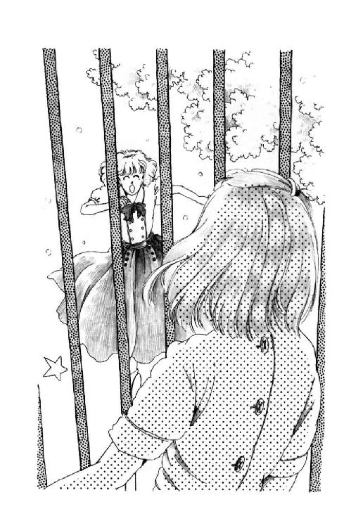
「トットコッ!! 大丈夫？」
「......痛っ......へ、平気よ......おお。おお、ミシェール!!」
「トコ!!」
ひしっ!!
あたしたちは格子越しに力いっぱい抱きあったわ。
「どして？ いったいどうして？」
「校長さまにね、いらっしゃいって言われて、トコに電話したんだけど旅行に出かけてるって、逢えるなんて思ってなかった......ああん、トコォォ。嬉しいよぉ」
「おバカ！ ゆうべ夜中に戻ったのよぉ、来ないはずないじゃない、登校日にぃ」
「登校日？」
そ、それでこの、人出なの!?
「校長さま、教えてくださらなかった......きっと、きっとわたしに思いがけない贈り物のおつもりで......」
おおシスター・エルミニア、なんと温かい。さすが、さすが華雅の校長さま。主の花嫁でいらっしゃる。
「じゃあ、ミシェール知らないの!?」
トコは指で目尻をぬぐいながら、三日月の目になってあたしの肩に回した手にもう一度力をこめた。
「喜びなさい!! 今日午後からソロリティーの総会があって、麗美さんも加奈子さんもおいでになるのよ!!」
「れ、麗美さまがっ!?」
ぐらっ、と頭が揺れる感じがした。耳の奥で潮のひくような音がする。
「ソロリティーの、総会......ですって......？ トコ、トコあたしもそれに行っても......」
「キャ────ッ!!」
話の続きは誰かの叫びに跡切らされてしまった。
ハッとして顔をあげたけど「ミシェールゥ!!」「あさばー」ドドドって走ってくる響きにどこを見ていいのかわからなくて「浅葉さんよぉ」「えーっみく帰ってきたのぉ」あわてて目をこすった時にはもう「おひさしぶりじゃないのぉ」「あたた、ああ、あの、ありがと。覚えててくれて」校庭のあちこちから集まってきたひとで目の前がいっぱいになってきて「どーしてたの」「げんきです、えっと、あの、トコは？」「つかしい懐かしい」「よく今日がわかっ」そばに来たひとが後ろのほうのひとに押されて「めて、いたぁい」「あ、あの、ちょっと」「さばさんって誰」「んだ吉川じゃねー（註２）」近いところ遠いところ「れつでミシェ」あちこちの声が竜巻になって「だどして」「るそうにいな」「おしソロてべ」どの声に「だ、もう」「れけそかばご」耳を澄ませば「でねやぇつ」いいのか「づあねでしょが」「めて」わからなくなって「さない!!」「しにした」「のＣでどー」「ってば!!」
あっ。今の「ってば」は......あの声は......。
気を取られた瞬間、どこかがひっぱられて、頰が鉄棒でよじれた。
「あ痛ぁ......」
「さがりなさい!!」
もう一度あがった声に、ぴたっと騒ぎが収まった。さらさらと衣ずれの音をたてて離れていく人垣の間を、
「逆井さん、大丈夫？」
服の埃を払っているしかめ面のトコに、優しく手を伸べ助け起こしながら、すうっと背の高いひとが歩みよってくる。木もれ陽の中お顔は影になってはっきり見えないけれど、サラサラの断髪に浮かぶ金色の天使の輪は、見間違えようもない。
「麗美さま......」
声になったかどうか自分でもわからない。
「ミシェル」
膝が折れそうになった。
夢じゃないかしら。
麗美さまがあたしを呼ばれた。あたしはあたしの名前のかたちに動いたばかりの麗美さんの唇を、感動しながら見つめていた。さきほど飛ばされた凜々たる叱咤と同じひとの声だとは信じがたい柔和なお声......みんなといる時は、いつもは浅葉さん、なのに。
「Ma ch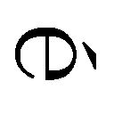rie」
ああ、もう一度。やっぱり「マ・シェリ」って聞こえる。
優しく笑って、ちょっと困ったように唇がすぼまって。
「マ・シェリ、そんなところにいないで、はやく回っていらっしゃい。校長さまとのお約束の時間じゃあないの？」
「ミシェールったらっ！ ぼうっとしてないで」
トコの声に、ようやっと我に返った。
「おとうさまがたはおかわりない？」
「はい。元気にしております」
「新しいお家は気にいりましたか？」
「はい。とても。坂の上ですので学校帰りなどにははじめちょっと大変だったのですが、もう慣れました。自転車でも平気で登れます」
「そう」
シスター・エルミニアは、上目づかいにあたしを見ていた眼鏡の奥の灰色の目を伏せて、ゆっくりうなずかれた。
シスターは肘かけ椅子に、あたしはソファーに座っている。
校長室は学園の奥深く、お御堂や修道院に連絡する高いたてものの二階にある。木張りの床の大きなお部屋。廊下がわに寄ったところに応接コーナーがあって、奥が執務机になっている。
重い樫の扉を閉めると教室のざわめきや校庭の歓声も遠くかすかで、かえってここの静かさが際立つみたい。
高い高い天井までとどくフランス窓ごしに中庭の緑がさやさやと風に揺れているのが見えて、クーラーもいれてないのに不思議に涼しい。重たげな黒い修道服。へりに白いものをのぞかせた同じ布のベール。この真夏にそんなかっこうをなさっているのに校長さまが汗ひとつおかきにならないのも、この部屋ならば納得できる。
校長さまのお顔を見るといつも、長いこと風にさらしておいたピンクのりんごが、頭に浮かんでしまうのよね。もちろん皺になってはいるんだけど、くちゃくちゃ、って印象じゃない。全体にちんまりとしぼみかけてる途中みたい。
眉もまつげも銀色で、ひざしにキラッ、と光りでもしないかぎりめだたなくって、まるでないみたいに見える。あまり陽におあたりになっていないからなのか、外国のご老人によくある世界地図みたいな染みはほとんどなくて......こう申しては失礼なんだけれど、かわいいおばあちゃま、という感じなの。でも、お怒りになるととっても怖いんだ。
「たくましくなりましたね。浅葉さん」
「えっ」
「悪い意味ではありません。前は色が白くて、スポーツ祭などでもどちらかというと応援で活躍するほうでしたでしょう。健康そうに陽に灼けて、たいへんはきはきと活発になりましたね」
「そ、そうでしょうか」
ヨットのおかげかな？ ならいいけど、まさか、うららのがさつが伝染ってるなんてことはないわよねぇ。何を申し上げればいいのかわからなくて、黙っていると、シスターはすうっとお立ちになった。
外がまぶしすぎて暗く見える部屋に、床に届く修道服の小さな姿が一枚の絵のようになる。
「新しいお友達ともうまくいっているのでしょうね」
「はぁ」
一応一番仲がいいはずのひとと、今朝電話で話してなんとなくムカムカしてるところです、なんて申しあげるわけにはいかない。
「高校進学のことですけれども」
きたっ!!
「......は......はいっ!!」
声がのどにからまる。静かすぎる。ごくん、とするのも恥ずかしい。
「実は、先週あなたから手紙がくる前にね、森戸南女学館の教頭先生からお電話をいただいたの」
「......は？」
教頭先生？ どんなかただったかしら......記憶にない。どうしてわざわざ、電話なんて？
「あなたのことを、たいへん褒めてくださいました」
突然、校長さまがふりかえられた。
あたしはあわてて、ぴっ、と背筋をのばした。
「お勉強ももちろん、生活態度もたいへん立派だ。さすが、華雅出身の生徒だ、と言ってくださったのです」
「うわぁ、ありがとうございます！」
とんでもない、とか、そんなことはありません、とか、へりくだらなきゃいけなかったんじゃないかと思った時には、もう声が出てしまったあとだった。校長さまは音もたてずに歩みよられて、あたしの肩に手をかけると、一語一語くぎるようにきっぱりとおっしゃった。
「お礼を言うのはわたくしのほうよ」
「......いえ、そんな」
「浅葉さん。......ごめんなさいね」
ご、ごめんなさい？
両手をあたしの肩にどっしりと重く乗せられて、鼻が触れそうな近くからじっ、と見つめられる校長さまを、あたしはびっくりして、失礼にならないようけんめいに見つめかえした。
「中学の三年などという大切な時に転校させたわたくしどものことを、四角四面な、温かみのない人間だと思っても無理ありません」
「い、いえ、そんな」
「わかっています」
校長さまの灰色の瞳がキラッと光った。
「あなたはけっしてそんな風には考えなかった。仲のいいおともだちやなじんだ学校を離れて、知らないひとばかりの中に飛びこんでいったのに......よく、誇りを捨てず則を忘れず、学業に励まれましたね。あなたが遠いところでも立派に過ごしていると知ってわたくしは、教育に携わるものの真の喜びを知ったような気がいたしました。主があなたを、そしてわたくしを守ってくださるしるしを見たのです」
「校長さま、わたしはそんな立派なことは何も」
「敬虔な子よ。主は、右の手が良いことをなす時には左の手にもそれを知られぬようにせよ、とお教えになりましたね。しかし、浅葉さん。白百合は野にあっても谷にあっても、おのずから香りてそれと知られるもの。あなたの努力と行いがいかにひそやかなものであっても、すべてを治められる天の父以外にもそれと気づくひとがいたからといって、恥じらうことはありません」
校長さまはサッ、と壁の金縁の額を仰ぎ見られ、そこに大きく墨で書いてある文字をお読みになった。
「喜働精神。これまでの学園生活で養ってきたこの尊い心を、あなたはよく自覚し実践された。それがたまたま、こうしてわたくしの耳に届いたからには、共に素直に感謝と喜びを表してもいいのです。浅葉さん。喜びましょう。共に祈りを捧げましょう」
あたしは校長さまに習って急いで跪くと、十字を切り、頭を垂れた。
「受験のことですが」
顔をあげると、校長さまはお立ちになって、まっすぐにあたしの目をのぞきこんでいらっしゃった。
「おめでとう。めぐまれた子よ。主があなたと共におられます」
あたしは畏れのあまり床に手をついてしまった。
「どういうことでしょう？」
「こわがることはありません。あなたの願いが聞かれたのです。あなたは華雅高校に進みます。怠けてもよい、ということではありませんよ。試験は受けてもらいます。最高点を取ってくれるとよいのだけれど。あなたには、高校で外部生のよきお手本となっていただかなくてはならないのだから」
「どうしてそのようなことになりえましょう？ 外部からくるひとたちはみな優秀です。わたしの偏差値はせいぜい六十四ですのに」
「聖霊があなたの上に臨み、いと高き力があなたを覆います。神にとって不可能なことはなに一つありません」
「ほんとうにわたしは主のはしためです。お言葉のとおりになりますように」
ああ、神さま!! 校長さまは約束してくださったのですね？
最高点なんて絶対ムリだけど、とにかく華雅高校には入れてくださるに違いない。外部生のお手本になるのは華雅高校に入ってからだって間にあうと思う。
じゃあ、じゃあ、夏じゅうヨットに乗っててもいいんだ!!
わ────い!!
「では、再会を祝して......」
麗美さんが言葉を切ると、部屋じゅうがしん、と静まりかえった。
華雅会館７Ｆ芙蓉の間には華雅ソロリティーのメンバー三十人ほどがそろって座っているのだけれど、息つぎひとつ聞こえない。
懐かしい中等部の子も高校のおねえさまがたも、浅く椅子にかけ背筋を伸ばし、まっすぐにこちらを見ている。こちらというのは、麗美さんのほう、と言うことになる。
腕を軽く曲げ、英国流に耳のところをつまむように持った紅茶のカップをそっと掲げて、麗美さんはすっ、と立っている。ゆっくりとみんなを見回してから、隣に立ってるあたしのことをごらんになって、にっこり微笑まれた。
「乾杯!!」
「かんぱい!!」
ああ、なんて幸せなの!!
ぼうっとしたまま校長さまのお部屋を出るやいなや、廊下でトコが待っていてくれて。早く早くって急かされながら、芙蓉に来た。
入ったとたん、声が出なくなってしまった。
窓にレース。パッチワークのテーブル・クロス。ポピーやスイートピー、きんぽうげやかすみ草がかわいらしくまとめられて、真ん中に飾ってある。クッキーにマドレーヌ、焼きたてのスコーン。泡だてた生クリームとジャムのお皿。銀のティー・ポットに乗せられたティー・コジー、しゅんしゅん沸いているお湯。
ああ、そうよ。
あたしは、ソロリティーにまで戻ってくることができたんだわ!!
思わずうるんだ目をパチパチさせてごまかしていたのに、
「ミシェル」
天上の音楽とも言うべき、最愛のひとのお声がしたのだわ。それで、あたしはもう胸がいっぱいになってしまって、頭がぼうっとしてしまって、それから麗美さんのお隣に席をつくっていただいたことも、みなさんがこっちをごらんになっていることも、乾杯するから立とうって言われたのも、霞の向こうのことみたいで......ああ、ほんとうのことだとはとても思えない。
「ミシェルったら。みんなに何かおっしゃい」
コン!!
誰かに軽く足を蹴られてハッ、とした。ななめ前でトコがにらんでいる。
「あ。ご、ごめんなさいっ!!」
あわてて顔をあげると、みなさんがくすくすっと笑ってるのがようやくはっきり見えてきた。
麗美さんは、あたしに目でうなずくと、音もさせずに椅子にかけてしまわれた。
この花園で、立っているのはあたしだけになってしまった。
「あ......あの......」
こっちを向いた目、目、目。
「あの、今日はほんとうにありがとうござっしゃいまして......」
やだ、舌がおかしい。でも、みなさん微塵も動かない。何も変なことはなかったみたいな顔で、黙って聞いてくださってる。
森戸南だったら、とてもこうはいかないわ。そう思ったら、トックントックン喉まで上がっていた心臓が少し落ち着いてきた。あたしはあの学校でも平気でやってるんじゃないの。この懐かしいソロリティーで何をあがっているの？
「......ほんとうにありがとうございます。まさかこのようなお集まりがあるなんて思ってませんでしたので、まだ驚きから立ち直っていません。飛び入りなのに、こうやって仲間に入れていただけるなんてほんとに感激です」
ようやくひとが見分けられるようになってきた。
「ご存じのとおり、わたしは神奈川県のほうに移りまして、華雅からも出てしまったし、もう二度とソロリティーのお集まりに入れていただけることはないと思っていました。それなのに、もう一度こうして、みなさんといっしょに午後のお茶がいただけます。なんだか、夢みたいです。どうも、ありがとう。ありがとうございました」
お辞儀をして座るとき、感激屋の松尾さんが、白いハンカチでそっと目を拭いてるのが見えた。トコも、いっしょうけんめいまばたきなんかしてる。
「じゃあ、そういうことで。もう堅苦しいのはなしね」
加奈子さまがおっしゃって、ほうっ、と空気がほぐれた。
「ミシェール、お帰りなさい!!」
「浅葉さん、乾杯!!」
「ありがとう。みなさん、ありがとう!!」
ひとしきりお辞儀をかわしあってようやく座った。ゆっくりと紅茶を含む。
テーブルのあちこちでクッキーやスコーンに手が伸ばされ、次々にお茶のお代わりが注がれる。こんな優雅な午後。きのうまでのあたしには、ほとんど幻みたいなものだった。
横を見ると麗美さんの表情に富んだ瞳がいたずらっぽく笑っている。彫刻みたいなお鼻の線、つややかな頰。薄いピンクの唇は下がわの真ん中がちょっとだけハート型にふっくりしていて、少年っぽいお姿の中でここだけ女性らしい。
ああ、麗美さんは美しい。
きれいなひとや、かわいいひとはあたしも何人か知っているけど、麗美さんは美しい。大学生になられて、社会人になってしまわれるころまでには、きっと、あちらこちらに麗美さんの素晴らしさを讃えるひとがおおぜい現れるだろう。その頃の麗美さんはたぶん、今よりもっとおとなびて、もっと女性らしさが匂いたつ佳人になってらっしゃるだろう。
でも、あたしは今の麗美さんが好き。少年の瞳を持つ麗美さんが好き。
こんな素敵なひとと、こんな素敵な時を共有することができるなんて、あたしはなんて果報者なんだろう......。
「ハーイ、元気だった？」
ポン！ と肩をたたかれてふりむくと、千葉加奈子さまだった。あいかわらずあでやかな巻き髪をゆるく背中にとき下ろされて、白磁のような透明な肌をしていらっしゃる。
「はい。かわりなく過ごしております」
「やぁね。固いのなしだってば」
ひとが集まってきた。あたしたちを中心に半円状に広がって、それ以上踏み込んでこない。
「御前の妹御となかよくしてる？」
「うららですか？ ええ......時々けんかしますけど......」
いやなことを思い出してしまった。帰ったらすぐ、電話して仲直りしなきゃ。せっかくの素敵な日、うららとぎくしゃくしたままにしておきたくない。
「そう。それはよかったわ。あなたのことだから、きっとすぐいいおともだちができるだろうとは思ってたけど」
トコがオーバーに上を向いて見せた。加奈子さまにそんな風に言っていただけること、嫉妬してる、ってポーズなんだろう。
ホラ、西在家さんの、香織さまの......と小声でうわさが走る。うわ。みんな、もうそんなこと知ってるんだ。あたしが驚いてキョトキョトしてるのをおもしろがるみたいに、加奈子さまが続けた。
「ねえ、その西在家さんにはヨットを操る華麗な兄上がいたでしょう？ なんておっしゃったかしら」
「朱海さんですか？」
「そうそう。あなたはヨット、上達した？」
「ええ、近頃はタッキングのタイミングもどうにか......」
「わぁ、浅葉さんヨットがお出来になるの？」
「何いってるのよ、浅葉さんのお宅にハーバーがあるって話したじゃない」
「あ、そうだった!!」
「その節はお世話さま」
「また伺いたいわ」
「わたしも」
「わたしも」
キラキラ目を輝かせて言ってくださるかたがた。
「ええ、どうぞみなさん、いらしてください。大きな家じゃありませんけれど」
「あ、浅葉さん!!」
遠巻きの輪の中から、悲鳴になりかかった声が飛んだ。
「おっ、おっ、男のひとだったんですか、あけみさんって!?」
一年の篠田さんだ。テニス部でがんばってたらしく、真っ黒に陽に灼けている。
この子初等部の頃からあたしに思いを寄せてくれていて、中学に来てからは何度も下駄箱経由でお手紙をくれたのよ。ひっこしてからも、週に一度くらい、学校のこととかソロリティーのこととか、多い時には十何枚もしたためて送ってくれてたけど......あたしは何かと忙しくて、絵ハガキに短く近況など書いてた。その中に、朱海さんのことも書いたことがあるような気がする。
篠田さんの目が、みるみる潤んできた。
「そんな、そんな、浅葉さんが男のひとと親しくしてらっしゃるなんて」
「そんなんじゃないわっ!!」
怒鳴り返したのはトコ。あたしは思わず開きかけた口のまま、トコを見た。
「親しくなんかしてるわけないでしょ？ ただ、ヨットのことで未来の家にそのひとがよく来るってだけよっ!! ねっ!?」
「えっ、でも」
思わず言ってしまったの。
「親しいって言えると思うわ。あたしから西在家さんちに遊びに行くこともあるし、ヨットもそうだけど、香道も教えていただいてるし......バイクに乗せていただいたことも」
「バイク......」
誰かがつぶやいた。
華やかだった部屋が一瞬、不穏な沈黙に包まれた。
その沈黙を篠田さんが破った。
「な、なぜ......そんな......わああああ！」
後は声にならず、テーブルにつっぷして泣きだしてしまった篠田さんを、高等部のおねえさまがよしよし、ってなだめてらっしゃるのが、スローモーションで見えた。
「バイクですって」
「まさか」
「いやだわ」
さっき、うちに来たいっていってくれたひとたちが、ボソボソと呟くのが遠く聞こえる。
「乗せてもらったなんて自慢げに」
「恥ずかしげもなく」
「信じられない」
「男のひとにモテるって、言いたい気持ちがあるんじゃない」
「進歩的なふり」
「裏切り」
「不良」
「不潔」
「不潔」
どこかでこういうこと、あった気がする。
あたしの袖をひっぱりながら、トコがいっしょうけんめい目くばせをしてるのは頭のどこかで知ってたけれど。あたし、ぼうっとして考えてた。
そうだわ。これは全部いつかと同じ。伊東のぞみが『何とかくんはわたしの彼です！』って叫んで終わった気まずい例会と同じ。その時あたしはまだ三番町に住んでいて、男のひとと口をきくことも、ましてやいっしょにヨットに乗るなんてことも考えられない子だったんだ。
頭の芯がくらくらした。
目の縁で麗美さんがこくびをかしげてらっしゃる。それも同じ。あの時と同じ。麗美さんを困らせてるのが他人じゃない、このあたしになっただけ。
だけど、あたしは。あたしの正直な気持ちは。
「まったくみんな堅苦しいわねぇ」
加奈子さまが静かな声でおっしゃった。
「いつも言ってることだけど。ねぇ、男のひとと仲よくしたっていいじゃないの。女の子のともだちしかいないなんて、自分で自分を狭くしてるようなものよ」
「でもバイクだなんて!!」
誰かが鋭く言った。
「不良の乗り物だわ。危険だし、騒音公害は起こすし」
「わたくし一昨年佐島マリーナの帰りに父の車から、暴走族を見ましてよ。けばけばしい衣装の女の子が肌もあらわな格好で、コーラかなにかかしら、瓶から直接飲んでいるんですもの、気分が悪くなりましたわ」
「瓶から直接!!」
「瓶から......きたなーい」
「ねぇ、みなさん。よしましょうよ、もう」
わざと明るくはしゃいだような声に、その場の空気がフッ、と止まってしまった。
みんなが見た。池貝有希子だった。そうだわ。この子がおズルをしてソロリティーに潜りこんで来てたのを忘れてた！
「浅葉さんはもう、ソロリティー・メンバーでもなければ華雅学園の生徒でもないんですもの、何をなさろうといいじゃありません？ 朱に交わればなんとやらですわ」
「......ちょっと池貝さん」
加奈子さまの制止の声の途中で、
「ほーんと」
鼻にかかる声をあげたのは三のＦの山際さんだった。
「みごとな染まりかたですこと。ついこの間まで、男のひととお付き合いするなんて不潔、って言ってらしたかたがねぇ」
ああ、そうか。山際さんは伊東さんと仲が良かった。そして、確かにあの時、あたしはみんなといっしょに伊東さんを非難した。直接発言はしなかったかもしれないけど、とにかくみんなと同じ気持ちだったわ。伊東さんがソロリティーの名誉を傷つけ、麗美さんを困らせてると思ってにらみさえしたのよ!!
味方を得て強気になったのか、池貝は得意そうないやらしい笑いを浮かべながら、ずいっ、と前に出た。
「それはおっしゃりすぎですわ。なにしろ鎌倉のいとこに聞いたんですけど、森戸南女学館ってひどくお下劣な学校なんですって。男のひとを追いかけるなんてあたりまえ、お勉強なんか全然しない、軽薄で自堕落な人ばかり。なにしろどこにも入れなかったひとの吹きだまりだそうですもん。いくら浅葉さんがしっかりしてらっしゃっても、そんなところに毎日いらっしゃったら、そりゃ価値観も変わってしまいますわ。ひとり孤高を守る、ってなかなかできることじゃありませんものねぇ」
「まぁごめんなさい、何も存じあげなくて」
山際さんは、やけに指の長い貴族的な手を口元にあてて、オホホホって笑った。
「それはお気の毒ですわ。でも、浅葉さんお気をつけになったほうがよろしくてよ。事情を聞いてみれば、よくわかることでも、知らない人間にはあなたの人格が疑われてしまいかねませんものねぇ」
「ちょっと、いいかげんにしたらっ!!」
ガタッ、と椅子を鳴らして立ち上がろうとしたトコを、今度はあたしの手が押さえた。
「そんな風に言わないでください」
自分でもびっくりするくらい低い低い声が出た。池貝も、山際さんも固い表情のまま、キッ、とあたしをにらんだ。
「学校のこと悪く言わないで。あたしのことを悪く言うために、森戸南を持ち出さないで」
しん、と冷たくなった空気の中で、両目をいっぱいに開いたままの池貝に、あたしはいっしょうけんめい話しかけた。
「うわさはどうだか知らないけれど、あの学校にも素敵なひとがいっぱいいるわ。あたしもはじめは、やだと思ってた。軽薄だって、ガサツだって思ったわ。だけど、話してみるとみんな......うまく言えないけど......純粋で、臆病で......誤解されやすいだけよ！ もちろん......もちろん、あたしにも、とってもついてけない、理解しきれないところもある。だけど......だけど、知りもしないで軽蔑するのは、どうかやめてください！」
ガタン、と音をたてて山際さんが座った。偉そうに、とかなんとかブツブツ言いながら。
あたしが見つめると、池貝は、プイッ、と目をそらして黙ったまま、廊下に出て行ってしまった。
乾いて強張った頰に視線を感じて目を向けると、麗美さんがそっとまつげを伏せられた。
「すみません......楽しい時間をめちゃくちゃにしてしまって」
テーブルの下でハンカチを出しておいて、サッ、と頰を拭った。
「あたし、帰ります」
「泊まって行かない？」
小さな声で麗美さんがおっしゃった時、一瞬意味がわからなかった。
或る夜の出来事
「ほんとに、よろしいんですか？ おじゃまするのもはじめてなのにいきなりお泊まりだなんて」
ゴーゴーうなりながら走っていく地下鉄に負けないように、少し大きな声で言うと、麗美さんはあたしのほうにちょっと身をかがめておっしゃった。
「実は誰もいないの。両親は志摩に行っているし、姉はヴァイオリンのお稽古でカナダのほうへ......ミシェルのおかあさまにそのことを内緒にしてしまったなんて、いけなかったかな？」
地下鉄のドアのガラスに映った麗美さんは、悪戯っぽく微笑んでいる。
「ど、どなたもいらっしゃらない......？」
ごくっ、とのどが鳴りそうだった。
麗美さんとふたりきり......ひと晩じゅういっしょ......。
目の前がすっかりピンクになる前に、あたしはハッとした。
「でも、池貝さんがいるはずでは？」
「知ってたの」
「ええ、おかあさまがご病気だとかって......」
「心配しないで......うふ」
麗美さんは、あたしの目をのぞきこむようにして、囁くようにおっしゃった。
「あたくしとミシェル、ふ・た・り・だ・け......」
「!!」
あ。じゅん！ と音をたてて何かがからだの中を駆けあがったの。カッ、と頰が熱くなる。
あたしはあわてて、姿勢をただした。
「そっ、それではあの......池貝さんのおかあさまってあの、めでたくご退院あそばされたのですね」
「うううん。まだなの」
あれっ。
「だけど、あの子は高円寺の家に戻ったわ。叔父がいるから。うちに泊まっていたのは叔父が仕事で大阪に行ってる間だけ」
「えっ、でもじゃあ......」
だって、今日あの子ソロリティーに来ていたじゃないですか？ ってことば、グッ、と飲み込んだのに。麗美さんにはわかってしまったらしい。
「ソロリティーね」
ドアの外の暗がりを見つめたまま、つぶやくようにおっしゃる。
「そうね。規則違反ね」
「麗美さん!!」
その眉が苦しげにひそめられているのはわかっていたけれど、あたしは言わずにいられなかった。
「池貝さんがかわいそうな状況だっていうのはよくわかります。でも、納得できませんっ！ ソロリティーの、あの神聖なソロリティーの伝統が、なぜ、なぜ、無視されているのですか？ そんなことを麗美さんがどうして、どうして、お許しになるのか、さっぱり」
「自分でもよくわからない」
麗美さんの目がふわっ、と宙に泳いだ。
「怒るわよね。無理ないわ。......だからね、実は、みんなにはあの子がもううちにいないことは内緒にしているの」
「......えっ!?」
「そうよ。会長であるあたくし自ら、ウソをついているの。ソロリティー存亡の危機を招きかねない行動をしているのよ、ミシェル」
「なぜ......？ なぜ......？」
どん！ と肩が何かにぶつかった。あたしは知らないうちに麗美さんから後ずさっていたんだわ。
けじめが。規則が。神聖にして侵すべからざるソロリティーの根拠が。誇りが。自覚が。神に恥じぬ精神が......ああ、麗美さん、なぜそんな静かな顔で微笑んでいらっしゃるの？ まさか、まさか、受験でお忙しいから面倒なことに関わっていられないっておっしゃるんじゃないですよね？ 麗美さんそんなひとじゃないですよね？ ソロリティーを、あたしたちの自律心をないがしろにしても構わないって思っていらっしゃるんだとしたら、あたしは、あたしは何のために華雅を去ったの!?
ぐるぐる沸き上がる思いに、何も言えずに黙っていると、麗美さんがつぶやいた。
「ごめんなさい。こんなこと打ち明けるべきじゃなかったわ......千葉にさえ、黙っていたのに......おかしいわね。ミシェル。きっと、誰かに聞いて欲しかったのね、あたくし」
「............」
加奈子さまもご存知ないことを、この、あたしに？
なぜ。なぜ？ あたしは、あたしはもうソロリティーの人間じゃないから？ それとも、そうまで信頼してくださっているってことなの......？
黙っていると、麗美さんはほうっ、とため息をついて、やがて静かにおっしゃった。
「あれは五月。叔母が入院してしまった翌日の放課後。あたくしが靴をはきかえて校庭に出ようとした時、下駄箱の陰からあの子が出てきたの。話がある、って。あたくしは今はだめ、って言ったわ。ソロリティーがあるから、会長のあたくしがサボるわけにはいかないから、って。そうしたら......あの子は『待ってます』って、笑ったの。とっても寂しそうな顔で。そして『あたしもいっしょに芙蓉に行ければよかったのになぁ』ってつぶやいたわ。あたくしは思った......母親は入院、父親は出張......ああ、この子はひとりなんだ、たったひとりぼっちのこの子があたくしの手を求めているのに、それを拒むの!? って......それが、それがあたくしの罪だったのだわ......」
「でも麗美さんそれは!!」
考える間もなくことばが飛び出してしまった。
「ちっともいけないことじゃないと思います!! 誰だって、誰だってそうします、きっと!!」
「でもねぇ」
麗美さんはパサラ、と髪を振って、また暗い外に視線をさまよわせた。
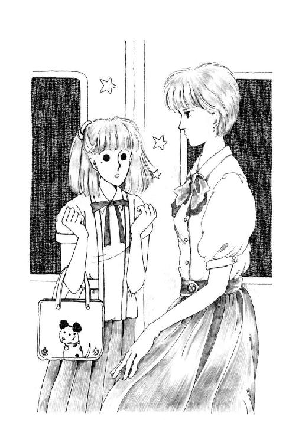
「それではいけなかったの。そこでノーと言うことができなければいけなかったのよ。あたくしは。かりにも会長なんですもの。なのに。あたくしは憎まれることを恐れてしまった」
「............」
「ふふ。そう。優しいの。みんな。事情も知っているし、あたくしの意志を尊重してくれて、とっても親切なの。有希子に。その次の集会にあの子の顔を見かけた時はあたくしも驚いたわ。その日あの子はしょんぼり芙蓉の前に立っていたそうよ。誰かが、おはいりなさい、って言ったのよ。それからずっと。だめって言いだすひと、ひとりもいなかった。それどころか、広尾に住民票を移した、なんて噂さえどこかから流れて......ホッとしたのは有希子だけじゃないわ。みんなよ。あたくしも。ソロリティーは何をやっているんだ、って言われた時のいいわけが、ちゃんとできてしまったから」
「でも......じゃあ、広尾のお宅を出る時には、って池貝さんを説得すれば」
「叔父にも勤めがあるでしょう」
静かな声。
「帰りは遅いわ。あたくしが見捨てれば、あの子は夜遅くまで、たったひとりよ」
ひ、ひどい。......許せないっ!!
池貝ったら、なんてずるいの？ なんて憎らしい子なの!?
かわいそうな境遇かもしれないけど、それを武器にしてワガママ通してるなんて、絶対許せない!! 麗美さんのこと好きなんだったら、どうしてわからないのよ。みんながなぜ麗美さんを尊敬せずにいられないか......まっすぐで、透明で、いいかげんなことをお許しにならないご性格だからだって、なぜわからないのよ!!
「まあ。ミシェル、泣かないで」
うう。麗美さんにウソをつかせるなんて。それで平気でのうのうとしてるなんて!!
歯軋りしていると、寂しい囁きが耳に届いた。
「そうね。やっぱり......軽蔑するわよね。あたくしのこと。不公平だって」
!?
顔をあげると、麗美さんは蒼いお顔をしてドアのガラスにもたれてらっしゃった。
「あなたには、見苦しいことをせず自分から華雅を出ていくように、偉そうにお説教したのにね。ごめんなさいミシェル......恨まれてもしかたがないわ」
「そっ、そんなことありませんっ!! あたし、あたし恨んでなんかいません!!」
麗美さんは、麗美さんは悪くない!!
あたし厳しくしていただいて良かったもん！ 未来は強い子だ、って信じてくださったこと、心の支えにしてたもの！
森戸南女学館に行ったばかりのころ、悲しかった時もくやしかった時も、負けるもんか泣くもんか、ってがんばれたのは、へこたれたりしたら麗美さんに申し訳ないって思ったからこそだったのよ。
なのに池貝は......ううう、こともあろうに麗美さんのご親戚としての情に訴えるなんて！
麗美さんお困りになるの当然じゃない。会長としてのお立場と、おねえさまとしての優しいお心と、ふたつながら反対のお気持ち、どっちひっこめたって苦しい思いをなさるじゃない！
ゆ、許せんっ!! おバカ!! 鈍感!! 甘ったれ!!
ううううう、成敗したい......。
「......ありがとう......」
麗美さんはまつげを伏せて、おっしゃった。
「ミシェールは、前よりもっと、心が柔らかくなったわね。今日だって......ひどいこと言われたのに、とても立派だった。あたくし......自分がはずかしかったわ。それが......それが言いたかったの」
「麗美さん......」
ああ、やっぱり麗美さんは美しい。
お嘆きになって、蒼ざめてらっしゃっても、それでも、ぞくぞくするほど美しい!!
ああ、早く。
「早く、池貝さんのおかあさま、治ってくださればいいのに!!」
そうすれば、麗美さんの苦しみも終わるのに。
「ミシェル......あたくし」
麗美さんの白い指が、あたしの頰にそっと触れた。
ガ──ッ!! と電車が音をたてた。だから麗美さんのことばの最後のところはよく聞き取れなかった。
でも、でもあたしには見えた気がしたの。
そのあでやかな唇が『大好きよ』って動いたように。あたしはもう頭がじんじんしびれたみたいになっていて、それっきり黙ってしまった麗美さんの表情の、どこかしら寂しげな温かさに、ただそう思いたかったからかもしれないけれども......。
小堀さんのおうちはコの字がたで、お玄関の真正面の大きな窓からも、しゃれたエッチングがいくつも飾られた細い廊下からも、その廊下を回ってく広々としたリビング・ダイニングからも、手入れの行き届いた中庭の緑が鮮やかに見えるようになっていた。
芥子色に統一されたかわいいキッチンで、麗美さんとふたりでお夕はんを作った。って言ってももちろん、あたしはせいぜいレタスをちぎるとかクレソンを洗うとかチキンに小麦粉をはたくとかのアシスタント。麗美さんはもの慣れたご様子で次々にお料理なさって、ごはんが炊きあがるまでにはすっかりおかずが整ってしまった。メイン・ディッシュは、チキンの両面をバターであぶり、たっぷりの百パーセント・オレンジ・ジュースでコトコト煮詰めたもの。それにベビー・コーンとグリーンサラダの中華風ドレッシングと、カレー味のスープ。
麻のクロスをかけた丸テーブルにさし向かいで、ちょっと早めのお夕食をとった。
お片づけの後で、麗美さんがお部屋で今日のノルマのお勉強をなさる間、あたしは居間の角のソファーで、お借りしたご本など読みながら、時間の流れるのを見つめていた。
たまご色のじゅうたんを端から端まで敷きつめた大きな部屋。ブラインドの隙間から暮れていく空のグラデーションが見える。やがてすっかり薄暗くなり、本の文字が追えなくなる。スタンド・ライトに灯を点せば、あたしの周りだけ丸い形に明るくなる。
この同じ家の中に麗美さんがいる。
大学受験のためのお勉強をしている。
夢みたい!!
からだがふわふわするよぉ。
ほんとうは本の中身なんか頭に入ってこないんだ。麗美さんは、ごめんね、テレビでも見ていて、って言ってくださったけれど、今のこの気持ちにはテレビほどふさわしくないものってなかなかないんじゃないだろうか。
車が走っていく音。遠くの工事。犬の声。ひとの声。広尾の街のひとびとの生きている音を聞きながら、もう見えない窓の外を見てる。そのほうがいい。
ちょっと気持ちいい寂しさみたいなものが胸からあふれて、空気に溶けていく。パバがいてママがいて羅士丸がいる、慣れ親しんだにぎやかさから遠く離れて、あたしは麗美さんが下りてくるのをまっている。お勉強が終わって、あたしに話しかけてくれる、あたしの話を聞いてくれる麗美さんが下りてくるのを、ただ待っている。
せつないけど、とても幸せ......。
あたしほんとに麗美さんが好きなんだ。
こうしてると、麗美さんの奥さんになったみたい。お茶でもいれて持っていってあげたいとか、でもお邪魔になるといけないから黙っておとなしくしてようとか、早く下りてきてくれるといいなとか、でもあたしのことなんか気にしないで好きなだけお勉強して欲しいなとか、思うこと思うことシーソーみたいに揺れてしまって、結局何もしてないのに、満たされていて。
あたしは麗美さんを愛してるのかもしれない......。
えっ!?
ちょっと待ってよ。
思わずあたりを見回すと部屋はすっかり暗くなっていて、スタンドの明かりから一歩向こうはもうよく見えない。
やだ、ぶるぶるっ、と来た。
こ、こ、これって、女のひと愛してるって思っちゃうのって、や、や、やっぱりあの、レ・ズ、ってやつかしらっ!?......こ、こ、困る。なんだかそれって、すごくいやらしっぽい響きだもの。あたしはとっても普通であたりまえな子なのに!! で、で、でも、それって、精神状態が普通じゃないひとがご自分のこと正常だって思っちゃうっていうのと同じかな、ほんとはとっくに××だったりしたりなんかして......ど、ど、どうしよう......。
「キャッ!!」
め、めつぶし!! 急に明るくなったんだ。
あわててパチパチして目をこすってると。
「そんな隅っこで」
煌々と電気のついた居間を、笑いながら麗美さんが横切ってきた。
「ごめんね、もう終わったから、紅茶でもいれよう」
「あたしやります!!」
「じゃ、手伝って」
ああ、頭を振って髪に手をやるしぐさも、パッと方向転換して歩いていくスリムなお姿も、なんて、なんて素敵なんだろう!!
気がつくと目で追ってしまう。見ているだけで幸せになってしまう。
おヤバい！
やっぱり、やっぱりこれは既に恋だわ、ひとを好きになった時の叙述って決まってそんな風だったもの。少女世界名作文学の数々に間違いがあるわけがない!!
こ、こ、恋......!? 恋なのお!?
おヤバい。ひじょーにおヤバいけど、でも、だってさ、素敵って思っちゃったもの素敵じゃないって思おうと思ったって思ってしまったものはおも、おも、おも......。
「ミシェル？ どうしたの？」
「あわわ、は、はーい」
キッチンに入ると、麗美さんはもうテーブルにお茶道具を並べていらっしゃった。フォークロア風の大きなカップ、お揃いのポット。真っ赤なウィッスル・ケトルの注ぎ口からお水を入れて、四口レンジに火をつける。
「お砂糖、そっちの棚なの。ガラスのキャンデー・ボトル。わかる？」
「えっと......あ、はい!! ありました」
パッ!!
ふれないように、あわてて手をひっこめると、麗美さんはけげんそうな顔をなさった。
ああ、どうしよう。あたしきっと真っ赤になってる。
「？ どうかしたの？」
「い、いえっ、いえっ!! なんでも!!」
「あ、そうそう。バナナ・チョコパイがあるんだ。冷蔵庫の三段め」
「冷蔵庫っ!! 冷蔵庫ですね!! きゃっ、痛......」
「......そんなにあわてなくたって」
大きすぎるスリッパがピータイルの床で滑ってしまって、あたし冷蔵庫の把っ手に肘をぶつけてしまった。
笛みたいな音をたててお湯がわき、温めたポットに、ティー・フォー・ミー＆ティー・フォー・ユー、銀のお匙ですくわれてくるくる回るローズ・ティー。空になっても捨てるのがもったいなさそうなかわいい容れものにリッジウェイって書いてあった。紅茶の葉っぱの中に乾燥させたはなびらが混ざっている。薔薇のお茶ってよく酸っぱいのがあるけど、これは淡いいい匂いがする。
「じゃ、部屋に行こうか」
「お、お部屋!!」
いけない。胸がドキドキしてきた。
すっ、すっ、と先に登っていく麗美さんのおみあし。見ていることができないわ。だめだわ。気を確かに持たなくては、足を踏み外したりしたらお盆ひっくりかえしちゃうじゃないの!! あたしは一歩一歩力をこめて、慎重に上がっていった。
そして、とうとう、とうとう麗美さんのお部屋に行ったの!!
「うわぁ......」
細長い部屋、印象はあたたかいブルー。絨毯がスモーキー・トーンのパステル・ブルーで、壁紙も水色っぽくとろんとしてるからね。顔を近づけてみると、アイヴォリー地に淡い青のストライプと緻密に精巧に書かれた小指の先くらいの花が交互に並んでる図柄なの。幅のあるリボンをいくつもいくつもつなげたみたい。
「素敵い！」
「サンクス。それね、自慢なの。わがままを言って英国から見本取り寄せてもらったの」
「......英国から......」
はぁあ。ほんとのお金持ちってスケールが違うんだ......あたしが見本取り寄せて選んだのっていったら、二光通販の籐椅子だもん。月々二千九百八十円の十回払いだって、パパ説得するの大変だったんだから。でも、そう言えばあれ、カタログに『英国王室御用達の生地採用』って書いてあったな。驚いて杉丸に見せたからよく覚えてる。杉丸はすっかり感激して、うちにくると真っ直ぐにあたしの部屋のそのラタンのスツールに飛んでいって、
「よしよし、元気にしてた？ ミシェールにいじめられなかったかい？ そうそう。よかったね、あたしのライオンハート」
とか何とかいいながら撫でまわすんだ。その、英国王室御用達生地を。
ライオンハートっていうのは英国のことだそうで、なんでも、英国に毛糸とか灌木とかいう名前の歌手のひとがいて、そういう歌があるそうで、英国大好き少女の杉丸はそのひとのファンでもあるわけで......ともかく、あたしとしては、少なくともあたしの部屋の椅子がそんな大変なものだったなんて知らないほうがよかったような気もする。万一よ、英国王室御用達にお茶でもこぼしたりしたら、杉丸に何といっておわびしたらいいのか、気が気じゃなくって、あれに座ってるとどうも落ち着かなくて......。
「......選ぶのとっても迷ったわ。壁紙の具合で部屋の感じってかなり左右されちゃうでしょう、欲しい柄が十二ばかりあって......あら、ごめんなさい。ひとりでしゃべっていて。それ、こっちに置きましょう」
あたしが持ってたお盆、低いコーヒー・テーブルに下ろして、カーペットの上にお座りしてお茶とパイをいただいた。なんだか天国にいるみたい。なんていったって、リッジウェイ、麗美さんの好きなお茶を味わっているのだと思うともう、胸がいっぱいでいっぱいで......。
「あら、あんまりすすまないわね。お腹くるしかった？ たくさんだったら残してもいいのよ、パイ」
「いえっ、いえっ、いただきます!!」
「よかったらお茶、おかわりして。でがらしになるけど......これって二煎めもけっこう出るの」
麗美さんのお茶でしたらもう、二煎めでも三煎めでも、色なんか出なくなった葉っぱでも、記念にいただいて帰ってちゃんと乾かしてとっておきたいくらいだわ。
「あ、そうだ。ちょっと待ってて」
素早く食べ終わってしまわれた麗美さんは、奥の壁の白い鎧戸を観音開きに開けた。
「きゃあ......」
思わずため息をついてしまったの。
ドレス、ドレス、ドレス!! ジョーゼットやシフォン、光沢みごとなサテン。ベルベット、ラメ、オーストリッチかなにかの羽でできたのまで、金色銀色桃色吐息、クロゼットいっぱいのお洋服。ほとんどが床に届くぐらいの長さで、キラキラ光ったり、木目みたいなモアレを浮きださせたりしながら、しゃらしゃら揺れていたの。
「......こんなにたくさん......」
「うふっ。ちょっとすごいでしょ。あたくし着物が似合わないものだからつい、パーティーのたびにふえちゃって」
「パーティー......」
「ええ。父が貿易関係でしょう。外国からのお客さまをおもてなしすることが多くて大変なんだけれど......それに、実は姉のお下がりもけっこうあるのよ。発表会があるでしょう。ヴァイオリンの。聞きに来てくださるかたっていつもそう変わらないでしょう、同じドレスで演奏するのは失礼だって、一度着るとすぐくれちゃうの。あたくしに」
「一度だけ......」
だんだんあごが閉まらなくなってきた。
麗美さんって、麗美さんのおうちって、あたしが想像していた以上に大変なんだ......せ、世界が違う......。
「それでね、......えーと......あ、そうそ。これ」
しゃら、って取りだされたのは白地に金のレースのドレス。パフ・スリーブで、腰がきゅん、って細くなってて、それから何段も何段もフリルがつながってぱあっと床まで広がってる。
「うわぁ、かわいい」
「ミシェル、ちょっと着てみない？」
「えっ？」
えええっ!?
びっくりして、ぺたんと座ったまま動けないあたしの腕をひっぱりあげながら、麗美さん、ほらほら、ってあたしの胸にドレスをあてて、
「ああ、やっぱり似合う。ね、着てみてごらんなさいよ。あっち向いてるから。あ、パニエがいるわね。捜すから、ほら、受け取って。持って。えーと、靴はとりあえずこのサンダルだとして、パニエ、パニエと」
あたしはぼうっとしたまま、どうにか制服を脱いでシュミーズになった。ああ、こんなことになるってわかってたら、うううん、麗美さんのとこにお泊まりするなんてわかっていたら、新しい下着着てくればよかった。
急いで袖を通す時、レースの固い感触が腕を擦った。しゃらしゃらした裏の生地が、剝き出しの脚につるっと冷たかった。
「ちょっと緩いかな？ 後ろ向いてみて」
幅の広い金のリボン、サッシュみたいに巻いて、靴と、どうやらパニエって言うらしいドレスをふくらますペチコートをはいて......クロゼットの裏の鏡を見ると。
「まぁ、とってもかわいくてよ。ほらほら！」
手を叩いて喜ぶ麗美さんの声も、遠くで聞こえた。
......よい。
はっきり言って、似合う。
ざん切り髪も不自然じゃなくて、袖の感じとか胸元の感じとかも不思議にスタイルが良く見えるようにできていて、うんとかかとの高いサンダルをお借りしたからか背も高くなって脚も長くなって......。
あたしってこんなにかわいかったかしら......やだ。思わず自惚れてしまうじゃないの。
いけないいけないと思いながらついうっとりしているうちに、首と耳に真珠、小さなティアラ載せてもらって、あたしはすっかりおひめさまみたいになってしまったの。
「気にいった？」
麗美さんの声に、
「そりゃもう!!」
思わず下品に叫んでしまって、あわてて言いなおした。
「素敵です！ とっても、嬉しいです」
「あげる」
腕を腰にあてて、きっぱりと、麗美さんが言ったのよ。
「お古で悪いけど」
「......!?」
「ドレスだけよ」
にらむみたいな目。
「で、で、でも、それだって、だって、こんなすごいもの」
「だって、着ないもの。似合わないし、あたしにはもう小さいの。だから遠慮しないで。ね。今日の記念に」
「......あたし......あたし」
しゃらしゃらしゃら。動くたびに、はりのあるレースが鳴るの。目をそらそうとしても、いつの間にか、鏡の中を見てしまう。いけないと思っても、顔が笑ってきちゃう。
わ、わ、わ────い!!
「ありがとうございます!! 大切にします!!」
「うふふ。ミシェルになら、きっと似合うと思っていたんだ」
あうううう。なんて、なんてありがたいおことば!!
「ありがとうございます!! ほんとになんといってお礼をしたらよいのか」
「......うーん......そんなに喜んでくれるなら......」
麗美さんは腕組みしてしばらく迷ってらっしゃるようだったけど、パン、と手を叩かれた。
「決めた！ ミシェルにあげちゃう」
「......えっ!!」
「あのね、実はまだあるの。着なくなっちゃった服。よかったら、持ってって。ちょっと待って。出すわ」
「あ......あの、でも麗美さんあの」
「困っていたの。こどもっぽくなっちゃったのとか......前は母の知り合いのお子さんとかにあげてたんだけど、なんだかつまらないのよね。好きだった服ってやっぱり、いろんなひとの手に渡っちゃうとくやしいし......はい、これ」
「これえ？」
だって、だって段ボールひとつあるじゃないですかぁ!!
「全部持ってってくれるとありがたいんだけど、気にいるの捜して。染みがついちゃったのとか、うーんと流行遅れなのとか、かえって迷惑だもの。あ、心配しないで。ちゃんと、宅急便で送るから」
「......あの、あの......」
どうしよう。そんな、こんな、ご厚意に甘えたりしてもいいのだろうか、だって、だって......あ、そうだ。
「でも池貝さんだってきっと、欲しいんじゃ」
「やだ」
えっ？
あ、言っちゃった、っていうように唇を嚙んで、麗美さん笑った。
「ごめん。聞かなかったことにして。有希子には内緒にしておいて。いい？」
「麗美さん......？」
あたしが寝ているお布団の端のななめに月明かりがかかっている。
部屋の奥の壁ぎわのベッド。普段は引いて、隠せるようになってるさりげない花柄のカーテンを、麗美さんは今日はあけたまま、さっきから静かで、寝返りひとつうたれない。
「麗美さん......」
さっきより少し大きな声で呼んでみたけど、お返事がない。
眠れないのはあたしだけか。
お借りしたパジャマ、腕をお布団の外に出して、あたしは向こうをむいた。
興奮してる。目を閉じて、静かに呼吸を数えても、ちっともとろとろしてこない。頭も目も冴えちゃって、じっとしているのが辛くなってきた。
薄闇の中に、ガムテープで閉じた段ボール箱と、レースのドレスをなんとか小さくたたんで入れた大きな紙袋がぼんやり見えた。
山のようなお洋服、きゃあきゃあ言いながら見せていただいて、結局全部、箱に戻して。イヤリングとか、ペンダントとか、千代紙貼った小箱とかもたくさんたくさん、くださった。
とっても嬉しいけど、なんだかちょっと変な気分だ。
大学生になるからって、そんなに、いろんなものがいらなくなってしまうのだろうか。そんなにみんな、こどもっぽく見えるようになってしまうんだろうか。今あたしが欲しくてたまらない、花を飾った麦藁帽子やテディ・ベアのスタンドや、おとなっぽい黒いブーツも、手に入れてもそのころには、もう二度とときめかなくなってしまうのか......って。
十二時になってあわててお布団を敷いた。
それから寝そべって何を話したんだったかしら......映画のこと、小説のこと、西在家さんちではじめて見た香道のこと、父のこと羅士丸のこと葉山のこと......いっぱい笑って、なんだか夢中でしゃべったけれど。今考えると、ひとつだけ話さなかったことがある。
......朱海さんのこと。
なぜだろう。朱海さんを登場させないで葉山の生活を話すってとてもむずかしいのに......避けてしまった。まるで、悪いことしてるって思ってるみたいに。
......変だなぁ......変だ。あたしおかしい。
ほかでもない麗美さんのお宅にうかがって、いっしょに夜を過ごして、こうしておそばに横たわっているっていうのに......どうしてこんなにメランコリーしてるんだ。
幸せすぎて怖い、ってことなのかしら......？
ううううう。困った。この調子じゃ眠れない......羊さんでも数えよう。
まどろむ寸前、二千四百三十六ぴきめの羊が池貝の顔で柵を越えながら思い切りアカンベしてる夢を見ていることに気がついて、あたしはとっても不快だった。
スター誕生
「ヘーイ!! ラーラ、ミック、こっち向いてぇ!!」
声のほうをふり仰ぐと、バートさんは堤防の上にいた。ビデオ・カメラ回してる。
「まったくそれどこじゃないっつーの」
キラキラ光る海面に顔をしかめながら、うららがぶつぶつ言った。
「できるもんなら、にっこり笑ってフレンチ・カンカンのひとつやふたつ踊ってやるってば......あ、おい、ミッキー、ずれてないか？」
「うそっ!!」
あたしはあわてて前に向き直った。
肩のあたりがこわばってる。脚は寒くもないのにさっきから小刻みに震えっぱなし。なにしろ、なにしろ、うららとふたりで『ミッキー』に乗ってるんだもん、緊張するなったって無理よぉ!!
風速三メートル。ごくかわいらしいさざなみが立ってる。このくらいなら舟は揺れないし、よほどおバカなことをしないかぎり、ひっくりかえることもない。
だから、うららが舵取りスキッパー、あたしが補佐クルーの役になって、基本中の基本、一番簡単なのを練習しているわけ。
まずふたり並んで右舷に座る。アビーム、つまり、真横から風を受けるようにセイルを調節して、とにかくまっすぐ走らせる、それから方向転換して、左舷のアビームで戻ってくる。それだけのことなの。それだけなんだけれども......。
き、緊張するわっ!!
なにしろあたしたちにはまだ、風が読めない。つまり、今自分の舟に、正確にどっちから風が吹いてるか、わかりっこないのよ。だって、だってセイルを出すとか入れるとか、ティラーを押すとか戻すとか、やらなきゃならないことがいっぱいあって、それどころじゃないもの!!
だからあらかじめ、風軸に対して直角の針路に、目標を決めてある。海の真ん中にちょっとでっぱった岩なんだけれども......その岩から、ほんとだ!! だんだん左にそれていってる！
「うらら、ティラー出しすぎてるんじゃないのっ!?」
「ちーがうわよ、あんたがそれぐいぐいひっぱるからでしょーが。あたしはただ、あんたにあわして」
「ひ、ひっぱってないよっ!! だって、これ以上緩めたらシバーしちゃう!!」
「んなことないってば」
「ほらぁ、やだ、こんなにバタバタいってるよ、どーしよ、どーしよ？」
「あせんじゃないの」
「だって、ぎゃっ」
なんだかんだいってるうちに、うわわわわ、『ミッキー』いかにも頼りなげにひょろひょろ揺れだしたじゃないよぉ!!
「うそぉ、やだ、ちょっと、なにこれ」
「騒ぐんじゃないってばっ!! ちょっと静かにして」
「だってうそ、だって揺れてる!! ギャアー!!」
「もっとジブ張って!! 減速してるよ」
「いい、いい、速いのやだ、ゆっくりがいい」
「へたするとジャイブするっつーにもう......いい、いい。急いでタックしちゃおう」
「えっ、うそ、ちょっと待って、えっと、どうするんだっけ？」
「だから、あたしがティラー出すから、シバーしたらあんたがジブを放すんでしょーが」
「待って、待って、そうじゃないよ、まずからだを中に入れてバランスとって」
「違うって!! あん、もういい。論理的に説明してる時間がない。やるよっ!!」
「やだ、やめて、やめてよ、うららっ!!」
「スキッパーはあたしよ」
う......ぐるるるるるるる......。
そんなぴしゃん、って言わなくたっていいじゃないのよぉ......くすん......。
そりゃね、そりゃヨットに乗ったらクルーはスキッパーの言うことに絶対逆らっちゃいけないぐらい知ってるよ。だけど、だけど、だからって横暴していいってわけじゃ......ひゃっ!! まわりだしたよぉ!!
「なにぐずぐずしてんのっ!! はやくくぐって!!」
ひええええ。必死に身を屈めてずずーんとひっくり返る太いブームを避ける。
「やっほ!! できたじゃないのっ!!」
「......はぁはぁ......ぜいぜい」
「よしよし。ミッキー、上手だよ。だからがたがた言ってないで、何事も経験だわさ」
「う──」
え～ん......こわいよ～......歯の根が合わないってこれよ。
ああ、やっぱうららとなんて乗らなきゃよかった。朱海さんか尚志さんか一穂さんだったら安心して任せてられるのに......言われたとおり、ひっぱったりはなしたり右いったり左いったりしてればよかったのに。うららじゃ頼りなくって、そのくせ無茶だったら......まったく......きゃ、きゃあ!!
「きゃ──い、風が出てきたぜい!! とばすぞー!!」
「やだー!! やめてー!! おねがい！」
たっぷりと風をはらんだセイルは、ばたばたしなくなる。冷や汗かいた首筋にぎゅんぎゅん風があたる。
「うらら帰ろー、帰ろー、ねーってばぁ!!」
「ヒャッホウ!!」
「 !!」
!!」
あぎゃあ!!
目、開けてらんないっ!!
背中や腕や、顔にまで、しぱぱぱぱっ、て波がちぎれ飛んで来る。
ずるいよぉ、うららあたしの後ろじゃない。もしか何かにぶつかるとしたら、まずあたしじゃないの。波だって、あたしのからだで少しは楯になってあげてるから、そーやって吞気に嬉しそうに......。
「気持ちい～い!!」
気持ち悪い。脚はがくがく、胸はむかむか。頭真っ白。
しゃがみたい。しゃがみこんじゃいたいけど、でもそうすると逆ヒールっていって、ヨットのバランスがめちゃくちゃになっちゃうんだよね。上体を起こしてなるべくそらしてなきゃいけない。
やだ。不思議。頭で考える前にからだがそうなってる!!
あ～ん......しゃがみたいのにぃ!!
「よーし、いけー!! やれー!! も一度タックだー!! それーっ!!」
「......ひ～ん......」
こ、声が出ないよぉ。
それでもどうにか、いち、に......さん......ブームの下をくぐるリズム、後ろ側のうららがあわせてくれる。
うまくいった!! いったけどさぁ、
「おーし、とばせ──!! いけ────!!」
「............あ～ん、もうやだ～～～～！......」
「やるねー」
尚志さんが、あたしの背中をぴしゃぴしゃたたいて、かわりに乗りこんでいった。
胸までの深さのあたりまで迎えにきてもらったんだけど。ヨットからおりたとたん、くた～ってなって、ざんぶり髪まで濡らしちゃったのよ。
重たい脚をロボットみたいに右、左、右、左、どうにか前に出しつづけて、桟橋にたどりついても上がれない。
はあ～。
ばた。
クック・ロビン音頭（註３）のかたちに桟橋に両手を預けたまま、はててしまおう。目つぶっちゃう。髪からこぼれた水が、つつうって耳のほうにすべってく。横向きにした顔の上がわに、ちりちり太陽がさわっていく。
あ──......生きて戻れたんだあ......。
「お疲れ」
目を閉じていても、顔の上に影が落ちたのがわかったの。
あわててまぶしい目をこじ開けると、紺色のＴシャツの朱海さんがかがみこんで笑ってた。
「つかまって、ほら」
「ふにゃぁ」
手を貸してもらって、どうにか上がった。えんじ色ジャージの体操服と雨ガッパと黄色のライフ・ジャケットからどぼどぼ水をこぼしながら、ボート・ハウスの横の古いデッキ・チェアまでたどりつき、どさっ、と座った。お尻のあたりに溜まってた水が、ぐにょりって触って気持ち悪かったけど、も、どうでもいい。
「がんばってたじゃない？」
「......は～......」
「そうとうこたえたみたいだな」
うなずこうとしたら、ぶるるっ、と震えがきた。朱海さんがはおってくれたバス・タオルでバサバサ髪を拭いて、そのまま、パサン、頭にかぶっちゃう。
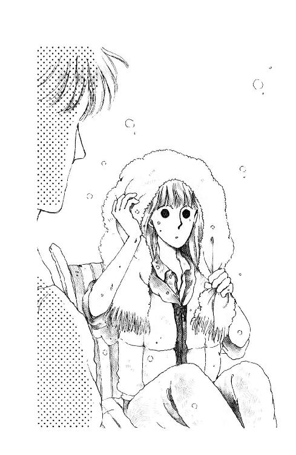
ぼんやり目をあげたあたりで『ミッキー』が波を蹴って走ってる。光がいっぱいすぎて、みつめてるとたちまち目の奥が痛くなって。あわてて擦ると、まぶたの裏にみどり色の点がいくつも見えた。
はぁ......。
「うららタフだなぁ......」
ため息みたいに言ったのに、聞こえちゃったらしい。
「ま、それがとりえだからね」
「も～信じらんない。やだ、っていうのにいっぱい怖いことするんだもん......すん」
「そりゃ、いかんな」
あ。いけない。
朱海さんがうららのお兄さんだってこと、忘れてた。お兄さんに向かっていいつけるなんて美しくないことやってしまった!!
「ご、ごめんなさい!! 違うんです。あたしがいけないんです」
「ん？」
「いえ、あたしどうもスピードと相性が悪いみたいで......」
そうなのよ。
なんだか自信なくなっちゃう。
あたしヨット好きなのに、乗れるのとっても嬉しいのに。ぐんぐん速くなるともう、とにかくパニックになっちゃう。
ほんとはあたしのほうがうららの足手まといになっちゃってるのよね。
やるべきことはわかっているつもりなんだけど、いっしょうけんめいやってるつもりなんだけど......ちっとも、ちっとも上手にできやしないんだもんっ!!
「やだなぁ......」
愚痴らないつもりだったのに、思わず、口に出てしまって、あたしはあわてて黙った。
「何が？」
「いえ......なんでも......」
不安だ。
同じころはじめたのに......どうしてうらら、あんなに上手なんだろう？
判断速いし、迷わないし、落ち着いてる。あたしなんか、急に動いたら危ないってわかってるのにすぐ、ガタガタしちゃうけど、どっしり構えてて。
そりゃさ。うららとは、基礎体力からして圧倒的に違うから。
うららは運動神経いいし、度胸もあるし、泳ぐのも得意だし、懸垂も何度でもできるし、殺しても死なないみたいなとこあるけど、あたしは、普通の女の子......いや、たぶん、きっと、普通以下、なんだものね。比べようなんてはじめから間違ってるのかもしれないけど......。
「元気ないな」
朱海さんがポツンと言った。
「............」
はい。元気ありません。
「どしたの？ ん？ 言ってごらん」
「あたし......」
のどが痛かった。
「きっと、きっと向いてないんですね......」
「え？」
「ヨットです......！」
このまましゃべってると、涙が出ちゃう。
あたしはあわてて、明るく言いなおした。
「いえ、うまれつきのニブ子ですから、それはわかってるはずだったんですけどねぇ！ あはははは、しかたないですよね。でも、まいったなぁ。遠くから見てるとそんなに速く見えないんだけどなぁ。ヨットって、すごく速いのね。あたしもともと自転車以上の速度のコントロールするようにできてないのかなぁ。だってスピードが出てくると萎縮しちゃう。パッと動かなきゃいけない時でもすぐ、ああでもないこうでもないって考えちゃうでしょう、トロトロと」
「あのね」
てのひらにすくった砂を指の隙間からサラサラ落としながら、朱海さんは言った。
「なんでもめいっぱい真剣に考えこんじゃうのは未来ちゃんの性格だと思うけど。ぼくは、今の未来ちゃんが羨ましいと思うよ」
「ええっ？ どうしてですか？」
「だって......そうだな。んー......いや、例えばね。ぼくは『ブレード・ランナー』大好きで、何度も何度も見てるけど、初めて見る時の気持ちに帰れたら、ってよく思う。絶対おもしろいってわかっちゃってから見るのって、もう感動じゃなくて研究なのね。ははぁ、ここのセリフが好きなんだなとか、このシーンは凄いよなとか、ひとつひとつ確かめてく感じ。それに比べると最初に見た時ってずいぶん見落とししてるんだよね。筋追うのに夢中だしさ、どうもこれは好きになりそうな映画だな、とか思うともう心配で心配でたまらないし」
「心配？」
「もしこれで終わりまでにつまらなくなったら怒るっていうか、期待しすぎてハラハラしてるっていうか」
「なるほど」
「だから、二度めとか三度めの時っていうのは、まだ結構、新鮮な発見とかあるんだけど、それにしても最初が最高なんだよね。どうしても」
ちょっとことばを切って、朱海さんはちらっ、とあたしのほうを見た。
「ぼくの言いたいこと、わかってくれた？」
「あたしは、これからヨットで『初めて』をいっぱい体験する、ってことですか？」
「うん、そう。ぼくにはもう二度と味わえないヤツをね」
砂を全部落としてしまって、朱海さんはパッパッ、と手を払った。
「だから羨ましいわけ。それに、体育の授業でやってるわけじゃないんだから、上手下手とか覚えの速さとか、気にすることないよ。ゆっくりでいいじゃない。そのうち絶対慣れちゃう。なんでもあんまり器用にできたってつまんないだけだよ。すぐ飽きちゃうから。楽しもうと思って乗ってるんでしょう。もっと楽しくやろうぜ。あんまりいろんなこと考えすぎて悲しくなるのはおよし」
ねっ、って強い目で見つめられて、あたしは思わずうなずいてしまった。
朱海さんの話を聞いてるうちに、なんだかなきべそがひっこんじゃったみたい。
そっか。楽しもうと思って来てるんだ。ほんとにそうだ。
なんか、なんかすごく救われた気がする。
みんな、そうなんだ。ヨット好きだから、いっしょに乗るの楽しいからここに集まってるんだもんね。あたしなんかが、下手だ、なかなかマスターできない、って暗くなっちゃったら、みんなの気分まで悪くさせちゃうわね。
「朱海さんってすごい......なんか、今のひとことでいろいろ考えちゃった」
「またぁ？」
「だって、だって」
あたし思ってた。心のどこかで......下手ってかっこ悪い、って。いくら教えてもちっとも上達しない子なんてつまんない、って思われるの怖かった。
でも、上手じゃないけど、あたしヨット好きだもん。『ミッキー』に乗れるの、ほんとに嬉しい。その気持ちに比べたら、かっこ悪いぐらいなんでもないはずじゃないの!!
「ありがとうございました!!」
あたしは言った。
「勉強になりました!! あたし、落ちこむのやめます!!」
「......みごとな立ち直りですな」
「はいっ!!」
元気よく答えたものの、濡れねずみの格好をさらしているのが急に恥ずかしくなって、あごからぽたぽた落ちる海水を、タオルでごしごしこすった。
おかしそうにそれを見ていた朱海さんが、言ったのよ。
「だいたい怖いって思うようになったのは、ヨットがわかってきた証拠だと思うよ」
「え、ほんとですか？」
「はじめて乗った時、怖くなかったでしょう」
「あ、はい。ちっとも!!」
そういえば。
ちょっとしか乗せてもらえなくて、不満だったぐらい。うららばっかり沖まで連れてってもらってるとか、スピードつけてもらってるとか、羨ましがっていたんだわ。
「そうだー。ほんとだ。今日まであんまり怖いなんて思ったことなかったですもんねー。落ちるのも、はじめがすごかったから......あわわわ」
朱海さんが複雑な表情をしたから、あたしはあわてて話を変えた。
「でもあの、デッキの真ん中で這いつくばってるの、やめた時は嬉しかったけどちょっと怖かったですよ。みっともなくてやだな、って思ってたのに、いざ、横のとこに座っていいって言われたら、こんなとこでボーッとしてたらいつブームにはたかれるかわかんない、とかって緊張しちゃって」
「はは。まぁ、そのくらい慎重なら安心だね」
日差しにキラキラ光る短く切った髪。Ｔシャツから出てる腕はチョコレート色に陽灼けして、ごついダイバーズ・ウォッチがすごくよく似合う。短パンの脚を抱え込むようにして、砂に座ってる朱海さんは、初めて逢った時よりなおさら、海水浴のポスターのひとみたいになっちゃって、缶のコーラなどそばに配置してみたい感じ。
......あ。
そうだ。忘れてた。
麗美さんちに泊まった時、気づいた変なこと。
こんなに見目麗しく、いかにも海の男っぽくたくましく、美形ごのみの麗美さまは絶対嫌いじゃないタイプのはずの朱海さんのこと、なぜか、話題にできなかったこと。そのことを考えて眠れなかったこと。
ど、ど、どうしたんだ。胸がドキドキしてきたわよ。
わ!! やだ、こっち向かないで!! あたしまだ、ちゃんと考えてないのに!!
振り向いた朱海さんは、目がいつもの三分の一くらいに細くなってる。奇妙に表情が消えて、黙ってこっち見つめてる。もの言いたげな目。もの問いたげな沈黙。
わ～ん。あたしこういうのって苦手よっ!!
「な、何でしょうかっ......？」
タオルをにぎりしめて、できるかぎり何気ない微笑みを浮かべたつもりだったけど、口の端がひくひくしてるよぉ......わ～ん。
特別に真面目な顔のまま、朱海さんは、そっとまつげを伏せて、ああ、おっしゃったのだわ。
「ぼくは......未来ちゃんを乗せてる時が一番怖いよ」
........................
ついに言われてしまった......それもこんなにシリアスに......こんなにどっしりと......。
黙ってしまったあたしに、朱海さんはにっこり笑った。
そうね。深刻になっちゃだめ。なんとか、へらへら～って微笑み返したけど、朱海さんはまだ黙ってる。こ、この『ず～～～～ん』って効果の入りそうな沈黙、なんとかして。
そうか。あたしが何か言えばいいのか。朱海さんも何か言え、ってお顔。この件について、現時点でのあたしの包み隠さぬ覚悟、及び心がまえを聞いておきたい、っておっしゃるのね。
いいわ。じゃ、言うわ。
あたしはからまったのどを、形だけごくっ、とさせた。
「やっぱりそうですよね。そうだと思ってたんです」
うんうん、と朱海さんが嬉しそうにうなずいた。
手の中のタオルがぎりりりっ、と鳴った。
「いえ、大丈夫、落ちこんでません。正直に言ってくださって、嬉しいです」
「え......？」
「やっぱり、タックのタイミングの問題でしょうか!? それとも......あの、あたしジブひっぱりすぎてるんでしょうか」
「待てよ、おい未来ちゃん？」
「さっき、うららにもそう言われたんですけど、でもあまり緩くしておいてワイルド・ジャイブなんかしちゃったりすると人身事故につながるわけで、あたしとしては慎重に、丁寧に、ってあの、口の中でつぶやいてやってるんですけど、どーもどこか抜けてるみたいで......あっ、そうだ!! それにあの、右舷から左舷へ、左舷から右舷へ、とパッと動く時のことなんですけど、あれってどういうコースをとるのが最も一般的でかつ正しいのか一度朱海さんにちゃんと教わっておかないと、あたしまた変な風に覚えたりなんかして、あとから矯正するのってたぶん大変かと思うんですけれども。でもあの、ああどうか、見捨てないでください!! あたし、いっしょうけんめいやりますから!! がんばりますから!!」
デッキ・チェアから転がり落ちて、砂浜に頭をこすりつけた。
十秒......二十秒......。
「あのね」
そっと前をうかがうと、朱海さんがはえ際に指をつっこんでガリガリ搔いていた。
「......そういう意味じゃなかったの」
「ええっ？ な、何か他に問題点が!? 重大な欠陥が!?」
「重大な欠陥ね......そう言えばそう言えるのかもしれないけど......」
「ううっ!?」
「でも、ま、今にはじまったことじゃないし」
あ、笑った。
「でも、そんな!! 黙っていらっしゃるといつまでもわかりません。おバカも直りません!! 今ならきっと、どんな衝撃にも耐えられると思います。この際、言ってください!!」
「いや、いい。いいから、そんなとこに這いつくばってないでさ、ねぇ、起きなさい」
アッラーの神さまへのお祈りみたいに平伏してたのに、いとも簡単にひっぱり起こされてしまった。朱海さんは、くすくすいいながら、あたしの顔についた砂を、Ｔシャツの裾で払い落としてくれた。
「ぼくはずいぶん暗示してるつもりなんだけど、ちっとも伝わらないな。でも、いいよ。きっと、口で言ってわかるようなことじゃあないんだ」
「......すいません......」
「いいんだ。きっといつか、あ、な～んだそっか、ってわかるって」
「......はぁ......そうならいいんですけど」
「ほんとにねぇ」
うっ......やけに本気でおっしゃるなぁ。
そうよね。なんとか理論的に説明してもらおうなんて甘いんだわね、きっと。
操艇の勘なんて口で言ってわかることじゃないもんね。
でも、もう伝わっててもいいころらしいのに、全然それらしい感触がないなんて......ああ。あたしってよっぽどのニブ子なんだ......ぷすん......。
「そんなかわいそうな顔しないで。いいんだってば。未来ちゃんには未来ちゃんのテンポってものが......」
言いかけたまま、朱海さんは、どこか向こうをみて、びっくりしたような顔になった。
「なんだありゃ」
あわてて見ると、堤防の上、バートさんが五、六人のひとにかこまれてる。何か、言い合ってるみたいに見える。何か、何か、まずいことでもあったのかしら!?
「ちょっと行ってくる！」
朱海さんはどこからか取り出したバイクの鍵をチャラ、と鳴らしながら、素早く立ちあがった。
「あたしも......！」
「その格好じゃだめ。とばすと風邪ひいちゃう。ここにいて。カズホ!!」
叫びながら、もう階段を半分以上登ってる。
向こうで、ほつれたシートをほぐしていた一穂さんも砂を蹴散らしながら追いかけた。上の庭で羅士丸が遊んでもらえるのかと勘違いしてきゃんきゃんはしゃいでる。
あたしは浮かしかけた腰を、もう一度デッキ・チェアに下ろそうとしたけど......やだ。バートさんと誰かさん、もみあってるみたい！
沖の『ミッキー』も気づいて、堤防のほうに回ろうとしている。
桟橋の端まで走っていったけど、遠くてよく見えない。えっ？ ビデオ・カメラ別の人が持ってる!! そんな!! あれは、あれは、バートさんがヘソクリをためて念願のヨドバシ・カメラで半日粘ってとうとう手にいれたカメラなのに!!
きっとあのひとたちカメラ泥棒だわ!! ぼ、暴走族かしらっ!!
ああ、朱海さんたち早くついて。間に合って。
伸び上がったり、手を握ったり、落ち着かない気分で見ていたんだけど......あ......あれっ？ カメラが二台ある？
取られたはずのバートさんがカメラを持ってるみたいに見えたのよ。
あたしは目をこすった。やだ、乱視になっちゃったのかしら？ でも、でも、あ、ほら『ミッキー』の上から堤防に、うららが手なんかふって見せてるじゃないのっ!?
あっ、バイクだ!! 朱海さんたちだ!!
ギュイン!! って横滑りさせて止まったバイクから朱海さんと一穂さん、飛び下りて、カメラ泥棒さんたちの間に割って入って......な、なごやかに談笑してる？？？
いったい、どういうこと!?
「やぁー、どもどもどもどもども」
もとからそうなのかうす汚れているのか、何とも奇妙な国防色のチューリップ・ハットをかぶったひとが、もみ手をしながらにやにや近づいてきた。
「こちらがこちらのお嬢さん？ いやぁ、かあいらしいねぇぇ、おいくつ？ あ、いやにらんではるわ、こらすんませんでした、女性にトシ訊いたりしてなぁ。やなおいちゃんやなぁ。はっははは。あ、ぼく内田。内田いいます。これ名刺ですよってに。はいはい。......おーい、わしここにいるでぇ!!」
最後のせりふは、庭に散らばった知らないひとたちに怒鳴ったものだった。
どやどやと入ってきたのは汚いおじさんたち。あたしがどうぞとも言わないうちに、上の庭のテラスの下のガーデン・チェアのあたりに、何やら重そうな荷物を置いて、わぁ、とか、ほほお、とか言いながら船着き場を見下ろしたり、ビデオ・カメラらしいの回したり、あ、ちょっとごめんなさいよ、とか言ってうちの誘蛾灯の電源から線をひっぱってカッ!! とばかりにすごいライトをつけたり、小さな写真機でパシャパシャ写真撮ったりしてる。
戻ってきた朱海さんが、あたしに何か言おうと口を開いた形にしたまんま『どもども』内田さんを見て、うんざりした顔で黙ってしまった。一穂さんも、疲れた顔で腕組みなんかして家の壁にもたれているのが、横目で見えた。
バートさん、どこだろう？
羅士丸が、せいいっぱいおっかない顔で、ワンワン威嚇してる。あわてて綱を外して胸に抱っこしてやりながら、あたしは眉をひそめて受け取った名刺を見た。
城南テレビ制作局・第三制作部専属、ディレクター、内田嘉仁さん？
ディレクター？
だから、どうだって言うのよ!?
おなかの底のほうでくすぶっていたものが、カッ、と発火した。
あたしの家なのに、うちの庭なのに、突然の闖入者に好き勝手に歩き回られてたまるもんですか！ パパもママもいないんだもん、あたしがあたしがしっかりしなくっちゃ!!
「どういうご用件でしょう」
できるだけ冷たく、言ったのよ。
「突然いらっしゃって、これは何の騒ぎですか。ただいま父は会社ですし母はちょっと買い物に出ております。よろしければ、あたくしがご用を承らせていただきますが」
へらへら笑ってた内田某が、へっ？ って言うようにこっちを見た。
からだが震えてるのに気付いたけど、止めることはできなかった。
胸に抱えてる羅士丸が雰囲気を察して、吠えるのもやめていっしょににらんでくれてるのを支えに、あたしは続けた。
「来意をご説明いただけなければ、不法侵入です。警察に通報させていただきます!!」
「......こら、えらいしっかりしたいとはんや」
内田某は口の端でまたちょっぴり笑いながら、がしゅがしゅっ、と汚い帽子を脱いで、ずずっ、と一歩踏み出した。
「かなぁんなぁ。まぁそな怖い顔せんといてぇな、えらいすんまっせんでした」
ごまかされないわ!!
思わず後ずさりしながら、あたしは無言で、目だけはそいつから離さなかった。
「そがいに冷たくしなんなや、わし、いやぼく、お嬢さんのおとうはんの友達どっせ」
「父の？」
いやぁな予感がしてきた。
「さいな。おとうはんとはな、大学で同級やったんや。もっともおとうはんはしっかり卒業しはったが、わしは中退やさかい、同窓会名簿に載っとらへんがな、へぇへぇへぇ」
「それでっ!!」
予感はどうあれ、ここで引いたら負けになる!!
「あ、痛ぁ」
ぴしゃっとおでこを叩いてから、
「こらあかん。わかった。まじめにします」
内田某は突然キリッ、とした顔になった。
「さっきの名刺でわかっていただけると思ったのですが、どうやらおとうさまは何もお話になっておられないようですね。実はぼく、わが城南テレビ人気番組『翔んでけ青春』を任されております。その『トンツァオ』......あ、『トンツァオ』と申しますのはわが『翔んでけ青春』の業界用語でありますが、その『トンツァオ』にですね、このたび新たに『素敵な留学生』コーナーが設けられることとなりまして。われわれ取材班は、かっこいい留学生、絵になる留学生を求めて暗雲たちこめる東京近郊を日夜探訪しておるのであります」
思わず腕の力が抜けて、羅士丸を落っことすところだった。
と、とんつぁお、ですって？ ぶたがまっ青になってるみたいじゃないの。そんな、そんなそんな変な名前の番組あったかしら？
「そんなある日。ぼくがひとりで銀座は三井アーバン・ホテル地下一階の割烹むなかたで、しゃぶ懐石と清酒沢の鶴のヒヤをちびちびやっておりますと、そこに現れたのがなんと!!」
「パパだ......」
あたしも三番町にいたころ、つれてってもらったことあるもの。パパお気に入りのお店だもの。
「 キンコンカンコン!! そぉぉです!! あなたのおとうさま、浅葉譲吉さんそのひとだったのです。ひさかたぶりの邂逅に、咲くは話のうば桜、貴様と俺は同級の、共に無類のみいはあで、憧れこがれたその海は、ああ湘南や湘南や。こころのふるさと湘南や。ところがはっぷん浅葉さん、なんと葉山に住むとなむ......そうです。ぼくとおとうさんは、昔よくいっしょに、ああ太陽族になりたかったなぁって悲しい酒を飲みかわした仲だったのであります!!」
キンコンカンコン!! そぉぉです!! あなたのおとうさま、浅葉譲吉さんそのひとだったのです。ひさかたぶりの邂逅に、咲くは話のうば桜、貴様と俺は同級の、共に無類のみいはあで、憧れこがれたその海は、ああ湘南や湘南や。こころのふるさと湘南や。ところがはっぷん浅葉さん、なんと葉山に住むとなむ......そうです。ぼくとおとうさんは、昔よくいっしょに、ああ太陽族になりたかったなぁって悲しい酒を飲みかわした仲だったのであります!!」
いやな予感が、いやな実感に変わってしまった。
......出たわね。きっと出ると思っていたのよ。
太陽族なんて、三十年も前にご昇天なさったはずのもんが、なんだってこう、いれかわりたちかわり、手を変え品を変えて出てくるのよぉ!!
唇嚙んでいると、内田なんとかさんの口調がいきなりガラリと変わった。
「でにゃあ、もうまいったがね。あんたのおとやん、これでもきゃあこれでもきゃあいうてよう自慢するでかんわ。えりゃあハイキャラなウチだの、娘がきゃわええだの、聞いとるほうが恥ずかしゅうなるぎゃあこと、ようしゃべりゃあぎゃあ。まあ、ほれ、三十年みゃあの夢がかなったってほう言っとるし、酒でも飲ましたって、旧交をあっためたろう、おとなしう聞いとったって損はあれせん、思ってなああ、二、三軒つきあったぎゃあ。ほしたらなぁ!!」
「わ、わかりました!!」
あたしは手をふって、内田某の話を止めた。必死に耳をそばだてていたけど、これ以上だととても理解できない!!
「バーソロミューさんですね。つまりうちの父にバーソロミューさんのことを聞いて、その、なんとかいう番組にバートさんを出演させちゃおうか、ってお考えになったと」
「実はそうですねん！」
内田某はにこにこ笑った。
「よーけわからはりましたなぁ。こら賢いお子や!! ヨイショォ!!」
「あの......それはわかりましたけど、どうしてうちに？ バートさんがいらっしゃるのは、西在家さんのおたくなのに」
「したばて、おらほも商売だば」
また変なコトバが出てきた。
「もんでーはテんレビコに出だがっでごしゃぐわらしゃど、少なくねずことだんだ。なまず、ご本人ぬ『出て助けねか』なんど連絡っコすて会いに行ってみらい。あがね、こいつぁみだぐねっつーごどになどなってえ、フウわりごとなっでもすづめんどくせじゃ」
「............？？？」
「おいおい、何ぼーっとしているんだい。えっ？ わからねぇ？ まったくしょーがないねぇ。いいかい、八つぁんや。あのねー、ちかごろはぁ、ガイジンさんのぉ、大あたりなのーッ!! キャピキャピ。だからあ、なにかあ、おもしろいことぉ、やってくれるガイジンさんいないかってぇ、ウの目ウオの目じゃなくてぇ──えっと、なんだっけ。えへっ、ヨシコわかんなーい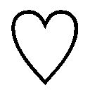 あ、やっだあー、そうどす、タカの目や、鵜の目タカの目で探しておま。ちょいとええな思て声かけるいうと、ハイほななんぼ、いうてえらいゴツいこと言わはるおひともおいやすやろ。うっとこも慎重になってますのえ。デ、トニカクー、コッソリミテミヨウトーイウコトニナリマシター。ま、ついでにロケ・ハンいうか、浅葉はんがそがいに自慢しよる家やのお嬢はんやの、見せてもろーてもええぜよ、って気持ちもなかったとはいわねーずら。じゃっどん、こがいに賢か美しか娘さんじゃったら、自慢もしとうなるばってん。おいどんも欲しか。くわっ、くわっ、くわっ」
あ、頭がくらくらしてきた。
このひといったい、どういうひとなのよぉ!!
「......あの、ともかくですね、一応の事情はわかりましたけど」
あたしがいうと、内田ディレクターさんは、ずっと続けてた『くわっくわっ』をぴたっ、と止めて、
「いやおおきに!! ほな、そゆことで。よろしいに」
「ちょ、ちょっとぉぉっ!!」
くるっと向こうをむいて、歩きだそうとした内田さんを、あたしは何とかひきとめた。
「でも、困ります!! 父か母のいる時にでも出直していただけませんか!?」
「なんじゃーわれぇ」
振り向いた内田さんは、えぐるような目であたしを見た。
「なんやその目はぁ!! 何か文句あるっちゅーんかいのぉ、ええっ？」
「だって、あたしたちヨットしてるのに！ ......ですから、あの、勝手に家の中をあの......」
ずいっ、ずいっ、とにじりよってくるんだもん!!
「じゃかしいわい!! おどれ!! しばいたろかこんガキ!! わしらぁタイム・イズ・マニー、泣く子も黙るお忙しのテレビ屋やぞ。仕事で来とんやぞ。ごちゃごちゃ言うとらんと、往生したらんかい!!」
ひ～～～～ん!!
何言ってるのか全然わからない。わからないけど怖いよぉ！
鬼のような目をしてにじり寄ってくる怖いオジサンから、一歩逃げると、どん！ と家の壁に当たってしまった。鬼の目が蛇の目になってにやぁ、って笑う。真っ赤な口が唾の糸ひきながらパックリ開いて......。
や～ん!!
「いいかげんにしてください!!」
目を閉じようとした瞬間に、あたしと鬼の間に遮断機が降りた。
あわてて薄目をあけると、黒い腕がまっすぐ伸びていた。
「女の子脅かして何が嬉しいんですか」
朱海さん!!
とたんに内田某の態度がコロッ、と変わった。
「いや、ごめん。つい。ウケるかと思って」
「冗談にもＴＰＯってもんがあるでしょう......まったく......趣味の悪い。きちんと説明してくださるのかと思って黙ってれば」
「悪い悪い」
「帰ってください」
きっぱりした朱海さんのセリフに、内田某のへらへら笑いが止まった。
「もう用はすんだでしょう？ 帰ってください」
「ちょっときみ」
内田某は、今度はテレビで見たことのある評論家そっくりのだらけたしゃべりかたになった。口もとに手をあげてるのは、パイプもってるつもりなのかもしれない。
「ぼくなんかねぇ、この子のおとうさんにちゃんと話を通してるのよ。きみには関係ないんじゃないの？ え？ だいたいきみはなんなのよ？ 偉そうに。いったい何の権利があ、あわわわ、......だ、だ、だからそんなににらまなくったってっ!!」
「関係なくはありません」
ピシリ、と空気を裂くような声で朱海さんが言った。
「あなたみたいなひとに勝手なふるまいをさせておくわけにはいかないんでね。ぼくらを信用して、いらっしゃらない時にもここを自由に使わせてくださってる未来ちゃんのご両親に申しわけがたたない」
「えらいかっこマンじゃないの」
「ちゃかさないでください」
「わかった。わかったから、そうすごむんじゃないよ!!」
ふっ、と肩の力を抜くと、朱海さんは静かな声できっぱりと言ったわ。
「さよなら」
「............」
内田某はしばらく黙って朱海さんとあたしをにらんでいたけど、くるっ、と向こうを向いて、
「なんじゃい！ いばりくさって。若造が。くぬやろ、くぬやろ」
庭石にやつあたりしながら、内田某は庭の端、海を見下ろすほうに出ていった。
おー、帰るぞー!! なんて怒鳴ってる。
ホッとして気がついた。あたしいつの間にか、朱海さんのＴシャツの裾のところにしがみついてる。あわてて放すと、皺が残った。すごい力でつかんでたみたい......。
そーっとひっぱって皺を伸ばしてると、朱海さんが振り向いて怪訝そうな顔をした。
ごまかし笑いしてしまう。
よかった。ほんとに、よかった。
あたしじゃやっぱり貫禄が足りなかった......あたしだけだったら、きっとナメられちゃって、我が家我が庭が蹂躙されるのを黙って見ていなければならなかったんだわ......。
「ありがとうございました......」
あたしは言った。
ううん、って朱海さんが優しく首を振る。
でもね、朱海さんがいてくださらなかったら、どうなってたかわかんないよ。
考えながら、朱海さんを見あげた。めんどくさそうに機材を片づけてるテレビ屋さんたちを、黙ってにらんでる朱海さんの、形のいいあごのあたりを。
言わなくてもいいよね。
コトバにしようとすると、なにか一番肝心なところが落っこちちゃいそうだもの。さっき、朱海さんの指の間からいつまでもいつまでもこぼれ落ちていった砂みたいに......ただ、流れて浜辺じゅうにあふれた砂に紛れこんでしまいそうだから。
シャツの裾の皺、もう一度ぴっぴっ、て伸ばして、あたしは歩きだした。
「おーい、あがれやー。今日はやめ。やめー」
内田某の声が耳にとまった。階段のあたりに立って、下に向かって怒鳴ってる。なんでー？ いいから、行くぞー!! とかなんとか......不貞腐れてる。ふふん。ざまを見!!
羅士丸を下ろして、もとの通りに小屋に繫いでやる。
中学生だからっておバカにしたりするからいけないのよ。ちゃんと、きちんと、おねがいします、って言ってくれたら協力しないでもなかったのに......。
パパのおともだちだっていうことだし。
いけなかったかな。パパのおともだち、困らせたりして。
でもさ。でも!! あんなに失礼なことされて黙ってるなんてできないわ。
だいたいパパが、お酔いあそばした上でかもしれないけれど、あんなひとに家のことなんかわざわざしゃべったりするから、ややこしいことになるのよっ!!
もう......まったく......ほんとに......。
内田なんとかいうひとも内田なんとかいうひとだけど、パパもパパだわ。そんなに太陽族がいいなら、友の会でも作ればいいのよ。あたしたちの都合なんてなーんにも考えてくれてないんじゃないかしら。いったい何のつもりで、バートさんのことなんか。
「キュ───ン」
羅士丸が鳴いた。ご機嫌とりする時の声。
あたしが思わず怒りの表情になってるのに気づいちゃったのね。
よしよし。いい子。さっきはいっしょににらんでくれてありがとね。今日はおいしいごはん、たっぷりあげるからね。
じゃ......あ、こら。
羅士丸ったら、いつの間にか雨ガッパのフードのひも、くわえちゃって放さないの！
「だめだってば、羅士丸、放しなさい!! ......これっ!!」
「ガウウウ」
必死でもぎ放そうとしてるのに、羅士丸は綱引きして遊んでもらってるつもりなのか、嬉しそうにしっぽなんか振っちゃってる。こっちが力めば力むほど、がっぷり嚙んだ口元緩めもしないで、全身でつっぱるの。
「ねぇ、ちぎれちゃうからさ」
「ウ───」
「わかった、わかった、おまえの好きなタコ焼き、あとで買って来てやるから」
パッ!!
突然羅士丸が口をあけたもんだから、あたしはすてん、と尻もちをついてしまった。
「......この......」
羅士丸は得意そうに耳を持ちあげて、舌出して無邪気に笑ってる。
......やれやれ。
困った子だ。
そのうち落ち着いた成犬になるだろう、って言われてるけど......南部のおじいさんも、ダルメシアンはとってもおりこうだって保証してくれたけど......うちのはおりこうっていうより、いたずらっ子だよぉ。
「おとなしくしててよ。いいわね」
ごしごし、って頭撫でてやって、立ち上がろうとした時、
......あれ？
下と怒鳴りあってた内田なんとかの声、聞こえなくなってる。もう帰っちゃったのかな？ わ───ぃ.........。
あげた顔が、途中でムッ、となる。まだいるじゃないの。
何をぐずぐずして......えっ？
内田某が、階段のとこで朱海さんと話してるの。なのに、なのになんで朱海さんのほうが、悔しそうな顔してるの？
歯を食いしばってにらむと、気配がしたのかあたしのほうにふり向いた内田（もう呼び捨てよっ!!）が心底いじわるな顔で、にやあ、って笑って、船着き場を指差したの!!
な、何？
何だっていうの？
急いで船着き場の見えるほうまで走った。刈り残した夏草を踏みしめて見下ろしたとたん......。
「おーいミッキー!! やっほー!!」
砂浜近くを岸に平行に走ってく『ミッキー』の上で、黒いスイム・スーツのうららが陽気に手を振っていた。例の小汚いオジサンたちが散らばって、やいのやいの拍手をしてる。
「ねぇ聞いたぁ？ あたし、テレビに出るんだってぇ!! みんなびっくりすっぜー!! きゃはははははは!! あ、今カメラがそっち行く。がんばってかわいく映んなねー!! じゃ、もー一回りしてくっぜー」
「冗談じゃない......俺はごめんだ」
低い声に振り向いた時には朱海さん、もう、庭木の影を伝って家の勝手口のほうに走ってくところだった。
「ま、待って、あたしも......」
追いかけようとしたのに。
「ミ──ック!!」
飛び切りはしゃいだ声に思わず振り向いてしまったのよ。
うわ!!
すべりやすい階段を三段飛びでバートさんが登ってくる。赤いランプのついたカメラがそのままじぐざぐ追っかけてくる。その後をさらに、コードをたぐってるひとだとか、銀色に光る板もったひとだとか、台本みたいなの持ったひととかが、駆け足の忍び足でくっついて走ってくるんだわ。
あっけにとられてるうちに、一行はどんどん近づいてきた。や、やだ、カメラこっち向いてるじゃないの!!
逃げ損なってはぷはぷしてるあたしの真横に、バートさんは立ち止まり、はぁはぁ荒い息を、膝に手をついて押さえている。
「大丈夫？」
思わず言うと。
バートさん、突然、芝居っ気たっぷりに、とろけそうに幸福な顔をして。あたしの手を取り、くるっ!! と振り向き声を張り上げた。
「ウェル、シー・イズ・ジャス・マイ・カイノブ・グロ!!」
「はい、お嬢ちゃん、笑って笑って!!」
誰かが横から小声で言った。反射的に愛想笑いをしそうになったけど......。
えっ、ちょっと!!
かいのぶ・ぐろ、って『KIND OF GIRL』って......？？？
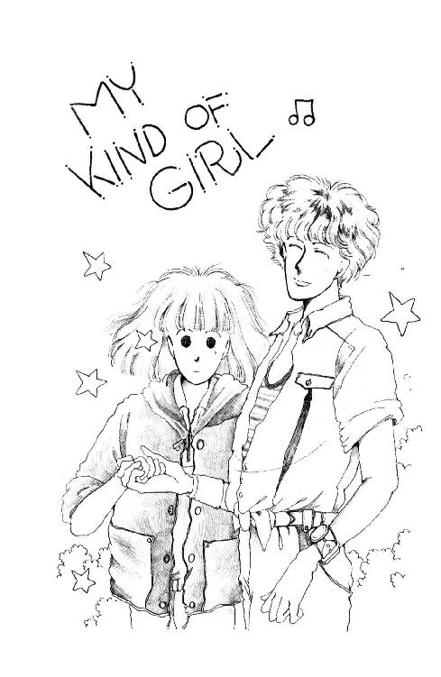
きゃっ、まぶしいっ!! 銀色の板、太陽光線こっちに向けてる!!
「ぼくはミックをひとめ見た時からインスピレーション、感じました。ノリコさんが、もしもゲンダイニッポンにいたとしたら、きっとこういうヒトだったと思います。それで、ぼくは、このひとで、テイク・ムビィ、したいって思ってます!! ミナサーン、ドオカ、オエンシテクダサーイ!!」
な、なんなのこのわざとらしい外人っぽいしゃべりかたは。バートさん、もっとちゃんとした日本語しゃべれるじゃないの!!
「いいよいいよ、もっと寄って」
誰かに言われて、バートさん、や、やだ!! あたしの腰のあたりギュッ!! って抱き寄せたのっ!! ほっぺたに、ほっぺたつけて、すりすりっ、てして。
「ミック!! アイラヴュー!!」
ＣＨＵッ!!
「きゃあああ!!」
うそぉぉ!!
なんで、なんで、なんでなの？ バートさんったら、バートさんったら、あたしのほっぺたに、キスしたのよぉ!!
どん、と突き放すと、バートさん、びっくりしたような顔で空っぽになった腕の中を見、それからあたしを見た。
突然、目の前に、派手なワイシャツがささっ、と走りこんできたかと思うと。
「いやぁ、これはまた近頃珍しく純情なお嬢さんで、ちょっと恥ずかしがってたみたいでしたねー。バートくんの恋路も先が思いやられますねー。ではっ!! コマーシャル!!」
「何がコマーシャルよっ!!」
怒鳴ったとたん、銀板のキラキラがすっ、と離れた。
「やー、どもどもお疲れさん」
例の内田なんとかいうひとがすたすた寄ってきた。
「いや、よかった。とぉぉってもよかった。盛り上がったよぉー、いやー、ほんとバートくんって絵になるヒトで、ボク感激!!」
「今のなしにしてください!! 絶対、絶対なしにしてください!!」
あたしは叫んだ。
「あんなの放送しないでください!!」
「どーしてー？」
と内田。
「なかなか良かったよ。特に、キスされた時のおたくの表情っていったら。まったく、さっきのはねっかえりと同一人物だとはとても思えなかったぜ、はっはっは」
「ばかっ!!」
あ、『お』をつけるの忘れちゃった!! と思ったときには、鼻の奥がつん、としてきた。
ひどい。ひどい！
パパとおじいちゃん以外のひとには許してなかったほっぺなのに!! いわゆるファーストキスよ。あたしの純潔よ!! なんでこんな、なんでまず初めに、してもいい？ って聞いてくれないのよ？ なんでいきなり、こんなひとのいっぱい見てる前で、しかもテレビ・カメラなんかの回ってる前でっ!!
こんなの、こんなのってないじゃないのぉ!!
「オオ、ミック......」
バートさんが両手を広げる。
「驚かせて悪かった!! でも、ダイジョーブ。ミック、ゼッタイ、すごくキュートに映ってるから。そんなにテレないで......」
「バートさんっ!!」
あたし、ついに噴火してしまった。
「あたしはやなの!! 照れてるんじゃないの!! 今の取り消しにしてもらってください!!」
「ホワーイ？」
「なんででもいいでしょ!? 本人がやだ、って言ってるんだからっ!!」
「ドウシテそんなにコウフンする？」
「興奮なんかしてないっ!! 取り消しにしてっ!!」
バートさんはぷっ、と拗ねた子供みたいな顔になりかけたけど、ぐっ、と飲み込んだ。あたしの背中に手をかけて、
「ミック、ちょと。ちょとこっち来て」
「やだっ!! さわんないで!!」
「オーケイ、オーケイ、だから、ほら」
ホールド・アップみたいに両手をあげたバートさんと、みんなとちょっと離れたところで、向き合った。
「何よ」
「マイク、プリーズ」
「あたしの名前は未来です」
「聞いて。ミック。トツゼンあんなことして悪かった。ぼく、夢中だった。ビコズ、彼ら、テレビに出たら、ぼくのムーヴィ、エンジョ、してくれるって言ったから」
あたしはそむけてた顔をあげたのよ。
「......援助......？」
「うん。もしかしたら、セツコ・ハラにも逢わせてくれられるかもしれないかも、って言ったんだよぉ、ミック、スゴイでしょう!!」
バートさんは、目をキラキラさせて、ペカッ、と笑った。口というか顎というか、純粋の日本人とはワン・サイズ違ってる。
なんて素直な笑い顔。なんて一点の雲もない晴天顔。
胸のどっかがきゅっ、て痛くなったのは例のいやな予感。
「あのね、バートさん......こんなこと言うの残酷かもしれないけど......」
「んー？ ナニ？」
「あのひとたち、信じていいのかしら!?」
「......ワット？ ......ワーイ!?」
みるみるうちに、バートさんの顔が変わる。
「ホワイ信じちゃいけない？ だって、ヤクソクしてくれたんだぜ、オトコのヤクソク!!」
「でも、なんだかうさんくさい、って言うか」
「ウーさん臭い？ フー・イズ・ウーさん？」
「そうじゃなくて......」
言いかけて黙ったのは、あの内田なんとかいうひとがにやにやしてたからなんだ。目をそむけようかと思ってやめたのは、きっちりにらんでやるほうがいいって思ったからなのに。
内田は、にらんだからってあっちへ行くどころか、イヤァ、なんて手をあげて話しかけてきた。
「ヤァ、あんなぁ、お取り込み中ほんまに悪いのやけどな。バートはん、このおひととの話、そこらへんにして、後は後回しにしてもらえへんやろか？ わしら、ゆうがたまでに社に戻らなあかんよって、もう二、三カット欲しいねんわ。そろそろ七里ヶ浜行っとかんと、御成学院はんのほうまで回られへんことなるし」
「オケイ、行きましょう」
バートさんは、にっこり笑って見せてから、あたしの目と同じ高さまで腰を折った。
「ドン・ウォーリイ、ミック。ダイジョブ。だから、そんなにシンパイそうな顔しないで」
「待ってバートさん!! ね、少し待ってもらってさ、よーく考えてもいいんじゃない？ 朱海さんとか、うららとか西在家さんちのご両親とかにご相談してみたりとか」
「ノンノン、イツ・オケイ」
茶色の巻き毛がパラッ、とおでこにこぼれた。
「ミックならわかってくれるでしょう？ ぼくがどんなにセツコ・ハラに逢いたいって思ってたか......アケミよりもラーラよりも、ミックが一番喜んでくれてよ。そうして。プリーズ。プリーズ!!」
大人は判ってくれない
突然はじまる爽やかなテーマ・ソング。
キラキラさざなみがたつ逆光の海面を、すべるようにヨットのシルエットが横切っていく。タックして、顔が見えるようになる。うららが元気に手を振っている。
「潮風涼しき八月の湘南。御用邸にほど近い葉山は界帷の街にひときわめだつ、赤い屋根のお家。こちらが、浅葉譲吉さんご一家のお宅です」
画面は突然、わがエントツの丘の家になる。テレビで見ると、青い空をバックになんだかやけに大きく見えるじゃないの。
そして......ぎゃっ！ い、いきなりあたしだぁ!!
「こちらは、お嬢さんの未来さん、まだ中学三年生」
「おおっ!! 未来だぞ、未来だ、ママ!!」
「まあ、ほんと」
パパとママがソファーの上で、手に手をとりあってきゃあっ、と叫んだ。
うそっ!! これ、撮ってたのぉ？
あたしが、うちの庭の隅っこで、小屋につないだ羅士丸にパーカーのひも嚙まれて往生してるところ。あああ、やだっ!! わかった!! この後、あたし勢いあまって後ろにひっくり返るんじゃないの!!
ギャア!! やった!!
「おてんばざかりの、たいへんはきはきしたお嬢さんです」
思わず目を覆うと。
「うわははははは!! 転んだ、転んだ」
パパが笑った。
「いや、こりゃいい。傑作だ。おい、ママ、うちのお嬢さんはなかなか美人だったんだな」
「当然ですわ、あなた」
うそ......涙、にじみそうよ。
あたし、あんなにお尻大きくないもんっ!! あんなに、あんなに、みっともない、しゃがんだかっこなんかじゃなくて、もっとちゃんとかわいく撮れるの、あるはずだもんっ!!
わかってる。視聴者のみなさんにとっては、たった一回、ほんの二、三秒画面に出るだけのことよ。見るはしから消えていくテレビってものでは、おすまししてるより、おふざけでも楽しいほうがいい、ってそういうことになるのかもしれないわ。みんなあはは、って笑ったとしても次の瞬間にはきれいさっぱり忘れてしまうもの。
だけど。だけどね。
あたしにとっては、生まれて初めて出たテレビよ。初登場のその時が、羅士丸にからかわれてお尻もちをつく場面、だなんて......。
ううう。悪意だ。これは絶対に悪意だ。
誰のって、内田なんとかいうへんなオジサンの、に決まってるじゃないのさ!!
あたしが、あのひとの勝手な都合の思うとおりにならなかったからって、あたしや朱海さんのほうが正論で、口ではかなわなかったからって、オトナのくせにっ!! こんなやりかたで仕返しするなんて、ほんっとに卑怯よっ!!
ううう。それなのに。
「うんうん。ラッシーくんもなかなかよいではないか。ほらあの、賢そうな顔」
「当然ですわ、あなた」
うそよおぉ!! パパもママも、なんで喜んでるのよぉ!?
画面はもう、下の入り江に変わってる。
「......こちらのお宅には、なんと今時ぜいたくなことにっ!! プライベート・ビーチならぬ、プライベート・ハーバーがあるのです」
ぐるっ、と見回す海岸線。オンボロっていってもいいはずのうちのヨット小屋が、なんだかやけに重厚にアップになる。
「歳月の重みを感じさせてくれる、この渚に、いま、週に一度、若いセイラーが集まって、ヨットの練習をしています。メンバーは、未来さんと、宝珠流香道十三代家元ご子息・西在家朱海くん、西在家くんの御成学院で同級の、五木田一穂くん、小原尚志くん......」
古くなったお風呂のスノコみたいな桟橋を、カメラがゆっくり歩いていく。
「こちらは西在家くんの妹さんの、うららさんです......いやあ、ウエット・スーツがまぶしいですね～」
いつの間にか上がってたうららが、にーっ、とＶサインなんかしてみせる。
『ミッキー』が発艇しようとしている。操っているのは、一穂さんと尚志さん。うららがもやい綱を解き、クルー役の一穂さんが、ゆっくり後退しはじめた『ミッキー』のブームを押すと、セイルがいっぱいに風をはらんでたちまち生き返るのよ。
スムーズに、確実に、すべり出したミッキーは、たちまち白波けたてて沖にでる。
やっぱり、うまいなぁ。
発艇がなめらかにできるようになれば一人前なのよ。あたしなんか、あたしなんかまだ、胸まで水に浸かるとこで、みなさんに舟を押さえててもらって、えいしょっ！ って上がるやりかたしかできない。
「パパ、これビデオ録ってるよね？」
「もちろん」
よかった。このへん、ゆっくり見れば、発艇のタイミング覚える参考にできる。
そういう意味では、こういう企画してくれた内田なんとかいうひとにありがとって言わなきゃいけないかもしれないんだけど......。
「そして!! この夏休みから、楽しい仲間が加わりました!!」
うわ！
ビデオ・カメラがまっすぐこっち、向いている。
バートさんだ！
背景が一面海になってるところをみると、堤防の上で撮ったらしい。やがて、カメラを下ろしたかと思うと、バートさんはにまっ、と照れ笑いをしてみせた。
「ハーイ、どうも。バート・バーンバッカー・ジュニアです」
「バートくんはそういう名前だったのか」
「パパちょっと、黙ってて!!」
「すまん」
「シチガツからぁ、ニポンにきました。西在家さんのお宅にホーム・ステイさせていただいてます。ニポンにリューガクした目的は、ヨドバシ・カメラでこれを買うことと、セツコ・ハラの映画に出てきたショーナンの海をこの目で見ることです!! オウ、これ、オナリガクインにはシークレットよ」
聞いてるほうが恥ずかしくなるようなワザとらしいガイジンことばで、まくしたてると、海を見下ろしてカメラ回してみせた。
あの日、あたしはパパを問い詰められなかった。
結局、放映する日になるまで、何も言えなかった。
だってさ、だって......。
言いつけたりできないよ。内田さんってパパのお友達なんだし。変なひとだけど、実際のところちゃんとやってくれてるのかもしれないし......現場での態度はどうあれ、要するに、番組がきちんとできてればいい、現物を見てから話すべきだったら話せばいい、って思うことにしたの。
第一バートさん、原節子さんに逢えるかもしれない、って、あんなに、あんなに喜んでるんだもん。水さすみたいなこと、したくないし。
あたしと乗った江ノ電が初めての江ノ電だったのに、その後バートさんは、短い間に、あたしが乗った回数よりずっと多く、何度も江ノ電に乗ってしまった。
梅雨っぽかった天気がすっかり夏らしくなってからも、バートさんは鎌倉や逗子、江ノ電沿線のあちこちを、何度も何度も歩きまわったらしい。パパの誤解とか、いろいろめんどくさくって、あたしは二度とつきあってあげなかったけど、もう、案内人なんかいなくても、地図なんかなくても歩けるようになったみたい。
原節子さんが住んでらっしゃるらしいなんとか寺っていうあたりにも、何度も行ったはずだ。まだ、原さんのお宅はみつかっていないらしいけれど......。
ひとりのほうが、いいのかもしれない。
小津監督の映画に出てくる風景を......二十年、三十年前の映画（註４）に出てくる風景を心ゆくまで訪ね歩くには、連れなんかいないほうが気軽でよいのかもしれないけど。
なんとなく、このごろ、寂しそうだったんだ。
あたしが悪いのかな、とも思う。
江ノ島や、鎌倉山に誘われたのに断っちゃったし。
だけど、あたしにだって都合があるじゃない。それでなくても、華雅受験と『ミッキー』の練習の二つをどうやって両立させるかで頭いっぱいだったし、いまだに懸垂はできないし、夏休みの宿題だってないわけじゃなかったし......。
でも。
ほんとは、違う。あたし、バートさん、避けてた。
かなりわざと。
だって、だって、バートさん、変なこと言うんだもん。遊びに行こう、ってそれだけだったら、毎度毎度お断りなんかしないのに......原節子さんの映画の真似するんだから、あくまで『ミックとふたりだけで行きたい』なんて言うでしょ。真剣な顔で。
あたしがいやがるの不思議そうにする。あの時はふたりで行ったじゃない、って言う。
あたしの気持ち、なんとかうまく説明しようとするんだけど、バートさんも、こと映画のこととなると、思い入れの激しさのあまりか、すごく感情的で、すぐ言い争いみたいになっちゃうから、やなのっ!!
だって、だってさ。
みんなそれぞれ用事があって、だめだったから偶然、ふたりで行った、っていうのは、あれはしかたないことでしょ。あの頃はバートさん、まだ道もよくわからなかったんだから、あたしが行ってあげなかったとすると、香織さま問題でややこしくなってる西在家さんのお宅でボンヤリしてるしかなくて、それはあまりにかわいそうだったでしょ。わざわざ海の向こうからいらしたかただし、うららに頼まれたし、親切にするのは、そうよ、葉山の、いいえ、日本の女性の代表として恥ずかしくないように、って気持ちだってあったんだからっ!!
だけど。
みんなといっしょに行けるのに、わざわざふたりで行く、っていうのはだめよっ!!
そんなのまるで、デートだものっ!!
アメリカではどうだか知らないけど、日本では上品な女の子は、なんでもない男のひとと、わざわざふたりきりでどっかに行ったりなんかしないんだからっ!! としごろの男の子と女の子が、ひと目を避けてどこかに行く以上、ふたりは絶対、心の底から愛しあってなきゃいけないのよっ!!
あたしにはまだ、そういう男のかたはいらっしゃらないわ。
だけど、だからこそ!! 身を潔く、心を堅く、まなざしを高くもっていなければいけないと思うの。
バートさんは、あたしがバートさんのこと、信用してないみたいに思って怒るけど、そうじゃないのよ。相手がどなたであっても、あたしはそうしたい。そうしなきゃいけないのよ。
そうでなければ、そうでなければ、いつの日かめぐりあう最愛の殿方に、申し訳がないじゃないのっ!!
ヨットの時朱海さんがおっしゃった。どんな素敵な映画でも、最初に観た時が一番いい、って。
それ、よくわかる。それってあたしが、ひとつでも多くのこと、誰かのためにおとっときしたいって思うのと同じ考え方だと思う。
ふたりだけで歩くとか、ふたりだけで喫茶店でお茶を飲むとか。映画を観るとか、公園のベンチに座るとか......好きです、ってことばだけ、水色の便箋の真ん中に書いて送るとか......。
キスだとか、その......えっと、何だかよくわからないけど、それ以前のことにも、あたしこだわりたい。
花束もらうとか、初日の出を見るとか......なんでもいいの。どんな小さなことでもいい。ひとつでも多くのこと、そのひとのために残しておきたい。
それが、みさお、ってものだと思う。
大好きなひとはたったひとりのはずでしょ。だったら、世の中の楽しいこと美しいことはできるだけたくさん、そのひとといっしょにみつめたいの。
別の考えかたがあるのも知ってるわ。前にうららや杉丸といる時、こういうこと話したら、うららすごーくおバカにした口調で、
「あたしはそういうのやだ。なんでもいーけど、初めてがイコール最後なんて寂しいじゃんさ。例えばさ、相手の男が異常に不器用でさ、キスひとつ上手にできなかったとしてもよ、あんた一生その不器用キスしか知らないわけよ」
なんて言ったのよ。
もちろんあたし、言い返したわよ。
「器用不器用なんて関係ないじゃないの!! キスなんて、キスなんて愛情があれば技術面はどうあれとにかく」
「知りもしないくせに。あたしゃやだよ。だいたいね、一生ひとりの男しか知りたくないなんて、すごーくいやらしい」
「どうして？」
「なんかさ、傲慢さを感じるのよね」
「傲慢!?」
「だってさ。男にしてみ。あたしはあんたがどんなバカでも不器用でも目をつぶります、だってあなたしか知らないから、ってさ、まるで脅迫じゃないよ」
「ど、どうしてそれが脅迫にっ!!」
「だからー。んで男が浮気でもしてごらんよ。あたしがこんなにあなたにつくしてるのに、って言うぜ、そういう女は。絶対」
「......うららは、うららは、好きなひとが、うっ、うっ、浮気なんてするの、平気なのっ!!」
「だからねー。あたしの理想はぁ、これまでいろいろつきあってみたけど、お互いが一等賞!! ってやつね。そうじゃなかったら、いつまでたっても、もっといいのがいたんじゃないか、とか、ほんとはこんなんじゃまだまだなんじゃないか、っていろいろ不満が残ると思うわけ」
「だって、だって、それこそ傲慢よ。どの時点で一等賞だってわかるの？ そりゃ経験不足より、なにごとも習練を積んだほうがうまくはなるかもしれないわ。でも、そうだとすると、いつまでたっても、もっと、もっとってそれこそ貪欲に」
「違うんだなー。だから上手い下手じゃなくって、フィーリングさね。だいたい、あたしがもしか男だったとしてもさ、誰にもかまってもらえない、誰にも夢中になったことがない女なんてやだよー。つまり、魅力がないってことじゃないさ。なのに。あたまん中はやたらロマンチック求めててさ、あたしはあなたのためにずうっとこの身の貞操を守り続けてきたのよン、なんて恩着せがましく言われたら」
「恩着せがましく言うかどうかはまたそれぞれの問題じゃないのっ!!」
「絶対言う」
「あたしはそんなこと言わない!!」
「あのねミッキー、あんたはいい子よ」
うららは妙にしみじみと言ったのよ。
「だけどさ、あんたさ、時々うっとうしいんだわ。自分ではわかってないと思うけど、ちょっと真面目に考えてみ、あんたの理屈ってさ、女はなーんも知らんに限る、って男の論理に立脚してるんだぜ。それはバカだっつーの。あんたは女でしょーが。いい？ 女は汚れのないのがいい、なんて男はさ、はっきりいって自分に自信がないのよ。ほかの男と比べられんのが怖い、自分が最高って言ってほしい、ってガキっぽいエゴイストなの。そーゆー男がいなくなんないのは、あんたみたいなアホが、いるからなのよ!!」
あたしたちが宿命の対決を迎えたガンマンみたいににらみあってると。
「よしなさいよ、うらら」
杉丸が割ってはいったの。
「ミシェールにはミシェールの美学があるんだから。うららとは問題の捉え方が違うのよ」
そうよ。その通りよ。
あたしだって、あたしだって、こどもっぽいひとなんてやだもん。エゴイストなんて、絶対絶対やだもんっ!! モテたこともないような男のひとじゃやだし、いろんなことよく知ってて、経験豊富なひとのほうがいい。だって......あたしのほうがただならぬ世間知らずなんだもん、なんでも男のひとにリードしてもらわなかったら、困るもん。頼りないひとだったら、やだ!!
そうよ。あたしだって、理想は高いんだからっ!!
だけど、だけど......。
そんなたいへんなひとが、あたしみたいなおバカな子、ブスだとは思いたくないけど、美人とはとてもいえないような子のこと、好きになってくれるかどうかわかんないじゃないよー!!
くすん......いいわよ。考えが甘いのよ、あたし。
だって思ってるんだもん。誰か知らないけど、あたしが一生ずっと愛するひとは、この世の女の子全部のなかで、あたしが一番かわいいって、本気で思ってくれるひとじゃなきゃ、やなんだって──!!
そんで、そんで、あたしみたいな子は、この身を清く、心を透明にしておく以外、とりえってないじゃないよ!!
うららはいいわよ。
元気だしさ。ボーイッシュで個性的で。スポーツ万能だし、口は悪いけど性格もいいし......今のとこ浮いたウワサひとつないけど、いざとなったらきっとモテると思う。
うららは自分に自信があるのよ。
だから、だから男尊女卑がどーのこーのとか、差別が、強者の論理が、ってすごく次元の高いこと考えるゆとりがあるのよ。
あたしだって、そういうこともあるなーってわかってる。
わかってるけど、日本国全体の社会通念に対抗する根性なんかないんだもん!! それよりとりあえず、今の風潮の中でなんとか評価されるような子になっておきたいんだもの!!
こんなこと言ったら、きっとうらら、軽蔑するだろうなー。日和見、って言うかもしれないなぁ。
あたしだってやだ。
あたしだって、もっと高邁でドラマチックな恋愛をしたい。
だけどさー......くすん。だいたい......あたし、もう理想の『無垢』から遠いところにきちゃってるんだもん、せめて、せめて、のこりの『初めて』は守っておきたいのよ!! うららの『初めて』じゃない、あたしの『初めて』だもん、本人の好きなようにしてもいいじゃないよー!!
あああ。
こんなはずじゃなかった。あたしはほんとに、清く正しく、なんにも知らないままお嫁に行くつもりだったのに......ああ、手遅れだ。
思えば、その大多数は、朱海さんが奪って......こういう言い方はよくないな、えっと、つまり、朱海さんと『男のかたと初めて』してしまった。①喫茶店にはいった。これは、お茶目なうららがワザと!! そう仕組んだので、あたしが望んでやったんじゃないんだー!! って気もしないじゃないけど......やっぱり『初めて』には違いないもん。きっと、たぶん、忘れない。小町通りのミルクホール......空気がセピア色の懐かしいようなお店......はじめてにふさわしく素敵なお店で、こうしてしみじみ思い出しても涙こぼれそうで、ほんとによかったと思うけど、でもそうよ、たった一度の初めては、もう二度とできないんだわ......あたしにはもう......うっ。だから、そうなのっ!! とにかく、生まれてはじめて、っていうのはただならないことなんだからっ!!
②家に送っていただく、っていうのもあった。あ、バイクの後ろに乗ったのも、朱海さんのが初めてだったんだ。いけないっ!! 忘れてた。③素足をさわられる!! さわられる!! これは、つまり、あたしが足をひねったのを調べて、包帯を巻いてくださっただけなんだけども、でもさわられたことにかわりはないわっ!! ううう。まだある。④ウワサになる。結婚するとか、妊娠してる!! とまで言われてしまったのは、ほんとに、正真正銘初めてだったんだからねっ!! まあこれは森戸南女学館ってとこがそういうお話が大変お好きだ、ってこともあるんだけども......。
ここからが問題なのよ。⑤腰を持たれた!! 腰を!!!!!! 鉄棒から下りる時で、持っていただかなかったら、また足を挫いたかもしれないから朱海さんのほうにしてみればご好意こそあれ、悪気なんてこれっぽっちもなかったに違いないけど、こうも続くとやっぱり恨みたくなる......それから⑥......これは、言いのがれの余地がない。あたしのほうから、首に!! 首に抱きついてしまったっ!!
ああ......思い出すだけで顔が赤くなるわ。
勢いとはいえ、なんであんなことしちゃったんだろ。
朱海さんと。朱海さんとばっかり。
そりゃねー......朱海さんたちと知り合うまで、あたしは同じ年ぐらいの男のひとってほんとに、近くでお話ししたこともなかったのだから、あたしの『初体験』の数々が朱海さんに関係するのは、しかたないことなのかも知れないよ。
でもそれが、あのうららの......ああいうことを考えてるうららの兄上だってこと、ちょっぴり気にかかりもする。
朱海さんのほうは絶対、初めてなんかじゃないだろうな。
あの『ミルクホール』にも、どこかの誰か、美しいひとといっしょにはいったことがあるかもしれない。誰かの腰だって、抱いたことがあるに違いない。
すごく慣れた手付きだったもの!!
そういうこと考えはじめると、なんだか心の奥がしーんとなって怖い。怖いから、なるべく考えたくない。
あ、そっか。
あたしが麗美さんに朱海さんのこと、言えなかったのって、これかもしれないな。
半ば無意識だったとはいえ、たった何カ月かのうちに、あたしがそんなにたくさんの『初めて』を知ってしまったなんて......まるでどんどん、加速度的に、麗美さんの知ってるミシェールじゃなくなってしまってるみたいで......。
......それでも。
ここらへんまではまだ、バレてもいい。ちょっと辛いけど、言ってもきっと、麗美さんわかってくださる。なかよしのおともだちのおにいさんが、いもうとのともだちのためにしてくれたこと、って言っても通用するわ。
だけど!!
あたしもう、麗美さんに逢えない!!
未来は、未来は、キスまでされてしまったんだものっ!!
それも、こんなにたくさんの『初めて』を共有してしまった朱海さんですらなく、まったく別のひと、バートさんにっ!!
ああ、未来はもう清らかじゃない。
あの時、あの後、バートさんがあんまり嬉しそうで、あんまり夢中で、あんまり邪気のないお顔してたから、あたし一瞬『いいかな』なんて思ってしまった。原さんのことでだまされてるんじゃないか、ってほう、心配になってしまって、バートさんのこと、責める気もなくしてた。
だけど、だけどやっぱりだめ!! ひどい!!
『ふたりきりでおでかけする』『初めて』をいっしょうけんめい拒んでたことの意味、やっぱりバートさんにはわかってもらえてなかった。
うまく説明できなかったあたしがおバカ。おドジ。
だけど、そのおバカ、電波に乗ってしまうなんて、あんまり運が悪すぎる!!
いつの日か出会う今は知らない誰かさんが、見ていないとも限らないじゃないの!! もちろんあたしの未来の夫となるべきひとは、『トンツァオ』なんて恥ずかしい番組、ごらんにならないかもしれないわよ。だけど、だけどね。たまたま、スイッチをひねったら、それだった、ってことだって、あるかもしれないじゃないよー!!
内田のバカ──!!
あたし恨む。絶対、怨む。
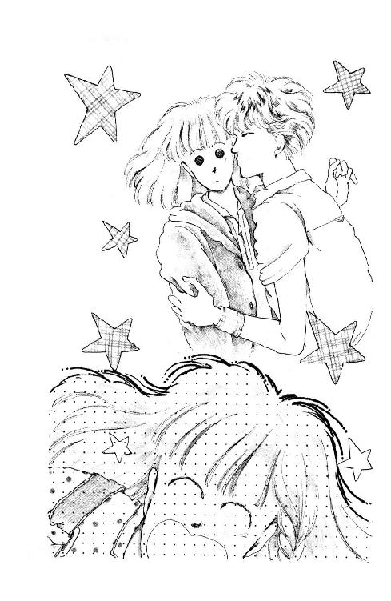
あたし頼んだじゃない。何度も、『やめてください』って言ったじゃない!!
なのに!!
わざわざ!! ストップ・モーションで!! 何度も!! そうよ、三回も!!
バートさんの唇がほっぺにふれる瞬間を、繰り返して見せたのよ!!
そのあとの、あたしがぶっとばしたとこは、カットしちゃって!!
「やだやだやだやだやだやだやだ──っ!!」
一瞬、頭が空白になったのから覚めて、あたしは真っ先にテレビを抱えこんだ。
「こら未来、どきなさいっ!!」
「だめっ!! 見ちゃだめっ!!」
あたしは絶叫した。
「パパ、ママ、ごめんなさい!! こんな恥ずかしいことされて......ああ、やだやだやだ!! 未来はやだって言ったの!! 絶対、絶対ここの部分は放送しないでくださいって頼んだの!! ほんとよ!! ほんとよ!!」
「何を興奮してるんだ？」
えっ......？
信じられない!!
パパもママも、ポカン、としてるの!!
「だって、だってその......キ......ス......なんかされて、それで、それで」
パパとママは顔を見あわせて、それから、にっこり笑った。
「なんだ。未来はほんとに純情なんだな、うんうん。パパは嬉しい」
「気にすることないわよ、今のとってもかわいかった」
「なぁ。だいたいたかがほっぺただろう。バートくんにしてみれば......ほら、アメリカの子なんだから。それより、未来。おまえは左ななめ前からの顔が一番かわいいよ。今度写る時はそこんとこ気をつけなさい」
リーン!!
電話だ。
とんでったママが『あら見てくれたのぉ』ってはしゃいだ声だしてる。
信じられない!! あれが、なんでもないっていうの？
パパなんて、バートさんとあたしが自転車で出かけて以来、なんとなくいい感情持ってないみたいに見えてたのに、ママだって、女同士なんだもん、純潔ってことにもっと、いろいろと厳しい見解があるはずだと思ってたのに、それが。
「残念だなぁ。日曜だったら出られたのに」
パパ、目尻下がりっぱなし。
「あっ、ほら遠くにおまえがいる！ あっ......くそっ。見えなくなっちまった。もっと写せ！ こら！」
「みぃくぅ!!」
ご機嫌この上ない声で、ママが呼んだ。
「さえらおばさまよぉ。とぉってもかわいかったって。特に、キスされて困っちゃってる顔がね、あどけなくって、ほら、あの、あなたがピアノの前に座って、Ｕ型の襟の紺色のセーター着てる写真。四歳ぐらいの時の。あれと、そっくりでびっくりしたって!!」
さえらおばさままで!!
あたしを華雅幼稚園に入れるようママたちを説得してくれた、わが大先輩ともいうべきさえらおばさままでが!! あれを見て『かわいかった』ですって!!
あたし、ドアのとこに走ったの。
「ちょっと出かけてくる!!」
「あ、ちょっと未来!! 電話かわらないの？」
ママの声を後にして、急いで庭に行く。羅士丸の綱解いて、お散歩用の引き綱、金具パチンと留めるのも、手が何度も何度もすべってしまった。
いつもなら羅士丸にひっぱられてやっとついて行く坂の道も、あたしは全力で駆け登った。
追い越された羅士丸がたちまち燃えて、旗みたいな耳ひゅんひゅんさせながら、抜き返しても、負けずに走った。
景色なんか見えてなかった。
まぶたの裏には、抱きよせられてひきつってるあたし、頰ずりされてぎょっとしてるあたし、キスされてうわっ、て目をつぶってしまったあたしの顔が見える。
ちっともかわいくなんかなかった。
あわててて、かわいくしてるゆとりなんて全然なかったもん。
あたしはただ、驚いて、ほんとに驚いて、それから泣きたくて泣きたくてたまらなくて、っていう顔してるのに、どうしてみんな、わかってくれないの!?
葉山になんかこなければよかった。
三番町にいれば、華雅学園にいれば、こんなことにはならなかったのよ。
あたしは、あたしはまだ当分長いこと、男のひとのそばによることもなく、無邪気なままでいられたのに......。
怖かった。
あたしの腕、ギュッ、とつかんだバートさんの手。突然割ってはいった派手なシャツのアナウンサー。まわりで、たぶん『おおっ、いいぞ、やれやれ』なんて思っていただろう、テレビ局のひとたち。
あれは暴力だ。絶対、暴力だ。
あたしは、やだ、って思っても、やめさせることができなかった。いやなのに、されるままになってることしかできなかった。
くやしい。
息が切れて、立ち止まった。膝に手をついて、ハァハァ言ってると、あの時バートさんもそうしてたこと、蘇ってきた。
そうよ。はぁはぁ、って苦しそうにしてた。
だからあたし、だから、大丈夫？ って近づいたのに。まさか何の説明もなしに、あんなこと、あんなことされるなんて思っていなかったのに。
ずるい。卑怯だよ。
自分のリズムと違う息が聞こえて、見ると、羅士丸がちんまり座って、はぁはぁしてる。ビー玉の瞳。邪気のない瞳。
しゃがんで撫でてあげる。
洗ってやったばかりの、びろうどみたいな手触りが手に嬉しかった。
「強くならなきゃいけないね」
口に出すと、泣き声だった。
「こんなことで、くじけちゃだめだよね」
「キュ──ン」
羅士丸はあたしの膝に足をかけて、胸に足つっぱって、顔をなめにきた。危なっかしく後足で立ちながら、いっしょうけんめい、あたしのこと、心配してる。
ちいちゃな舌がくすぐったかった。
「わかった、わかった。ごめんごめん」
あたしは立ち上がって、元気に言った。
「行こう。......えーと......どっちに行こうかな......そうだ。あじさい公園に行こう!!」
「ワン!!」
雨の季節に何度も訪れた公園に、このところご無沙汰してた。花は終わってしまったし、羅士丸は、森戸南の校庭が気にいってて、特にお砂場が気にいってて、このところ、海のほうに走りにいくか、じゃなきゃ森戸南にまわるコースばっかりだったもの。
住宅街の坂道を抜けて、公園へ登る階段を見下ろすあたりにくると、羅士丸はどこに行くのかわかったらしく、キャンキャンはしゃいだ。もうさっきみたいに走れなくて、ぐんぐんひっぱるのにまかせて行く。
階段の下で綱を外してやると、羅士丸はキャンとも言わずに、全力疾走で上がっていった。狩猟犬みたいに、からだ低くして。
緑濃い階段をのんびり登っていったのだけど......。
あれ？ あのひとは......あのシルエットは......。
あたしはあわてて、急ぎ足になった。
あ、やっぱり!!
「南部さーん!!」
手をふると、南部のおじいさんは、ぎくしゃくとふりむいた。
「ああ、ええと......みくしゃん」
おじいさんにしてみれば、ちゃんと『未来ちゃん』って言ってるつもりなんだろうけど、あたしにはどうも『みくしゃん』って聞こえるのよね。
「いつも元気だねぇ」
「はぁ......」
そうでもないんだけども。
「南部さんもお元気そうでよかった！ そうだ、羅士丸を飼うことになった時はお世話さまでした」
「いいや、とんでもない」
あたしたちは、海の見えるベンチに並んで座った。
しかし......南部さんと逢う時っていつもここだなぁ。ひょっとしたら南部さん、毎日何時間もここにいらっしゃるのかしら？ ひょっとして、お家にいづらいことでも......。
「あのう......」
「ん？」
まさか、聞けないよね、こんなこと。
「......あの......一度、家にいらっしゃってくださればいいなぁ、って思ってたんです。ヨットが無事に蘇ったのを、まだごらんになってないでしょう」
「そうさねぇ」
南部さんはいつものパイプ、片手に持ったまま、まぶしそうに、菜島の鳥居のほうを見つめた。
「それもいいねぇ」
草を揺らして、クリが出てきた。
羅士丸は自分の五倍くらいもある黒い犬に飛び上がって驚いた。しっぽたてて、頭低くして唸ってたけど、クリが知らん顔してるもんだから、目をパチパチしてる。
「クリよ。遊んでもらいなさい」
羅士丸は情けない顔をした。
「大丈夫よ。ほら」
立っていって、撫でてやると、クリはちょこん、と座ったまま、ごく儀礼的にしっぽふってみせた。そーっと、そーっと、羅士丸が近づいてくる。クリは気がついてるだろうに、やっぱり知らん顔してる。
「ワン!!」
羅士丸が鳴くと、クリはうんと下のほうでいっしょうけんめい威張ってる間抜けた顔の小犬に、やれやれまいったなぁ、みたいな顔して、よっこらしょ、と立ち上がった。
二匹の犬は、たちまちいっしょになって、葉っぱばかりのあじさいの中を駆けていく。
ベンチに戻ると、南部のおじいさんはゆっくりパイプをふかしてた。甘い、不思議な香りが流れた。
あいかわらずダンディーさんなのね。薄いグレイのニット・シャツ着て、ちょっと長めの銀色の髪、きれいにとかしつけて。
黙って海を見てらっしゃるのも素敵。
『公園のベンチでふたりで座るとか』
なんだかおかしくなった。
南部さんとふたりきりで並んで座るのは初めて。いっしょに、ずっと沖のほうに出てるウインド・サーフィンの三角帆を、見つめてるのも初めて。
そうよ。『初めて』なんて毎日だってみつかるわ。
「みくしゃんや」
不意に、南部さんが言った。
「あなたこそ、家に遊びにきませんか？ じじいの家なんかおもしろくもないかもしれないが、これでも旨いコーヒーをいれられますよ」
「是非伺いたいのですけど」
あたしはあわてて、なんとなく湿っぽくなってた目のあたり、まばたいてごまかした。
「家で心配するといけませんから、今度にさせてください」
「あ、ミッキー？ 見たわよ。ちょっと、あんためだってたねー」
口の中にまだ詰まってたクッキーのかけら、あたしはごくっ、と飲みこんだ。
うららから電話がかかってきたのは、夕飯のあと二階の部屋で、例年になくたまってる宿題をかたづけてた時なのよ。
ほんとに......まったく......無神経な子っ！
やっと気が鎮まってきた頃に、またわざわざ思い出させることないじゃないの!!
「いやー、ガッコいく楽しみができちまったぜ。あの番組ってさ、うちのガッコの子ずいぶん見てそーだと思わない？ あたしらスターよ、スター!! 惜しむらくは、どっかのタレントのひとりやふたり、いっしょに写っててくれなかったってことだけども」
あたしは落っことしそうになった受話器、あわてて、耳に押しつけた。
「ずいぶん見てるですって!!」
そ、そういえばそうかもしれない。いかにも森戸の人が好きそうな番組だった。
目の前が真っ暗になってきた......。
華雅はどうかしら......？ おしとやかで有名な華雅エンヌだけど、芸能関係の話題好きなひともいないわけじゃないし......でも、でも、あれって神奈川県の地方局番組でしょ、そんなに多くのひとが見るはずは......はずは......。
「そうよー。あーあ、あたしもっと派手な演技すればよかった。なんかさー、ダサくなかった？ あたしってば、手ふったりとかピースしたりとか、能がないのよねー。おやンつぁんにさ、浅葉さんとこのお嬢さんみたいに、ヒョーキンしてればいいのに、ってぐちぐち言われちゃったわよ。あんたってさ、なんかアホやってるかと思うとやけに楚々としちゃってかわいいのよねー。憎らしい。ほんと、あんたって得な子」
「お、お、おとうさまもご覧になったの？」
「おん。おとやんもおかやんも、見たぜよー。香織ちゃんも見たってよ。テレビに出るなんて時には早く教えてくれなきゃ困る、わたくしの本持ってにっこり笑ってくれればよかったのにっ!! って怒鳴られちゃった。そんでさ、さっき内田のおっちゃんから連絡があって、なんかすごい評判いいから、もう二、三回バートでやりたいんだって。次の収録はウチなんだってさー。まったく......こっちゃ、休みはあと一週間ぽっきりだっつーのに」
「ね、うらら」
あたしは受話器持って、廊下にべったり座り込んだ。うららの声って、やたら大きいんだもん!!
「明日でもちょっと話せない？ あたしその、内田さんってひとのことでちょっと」
「あ、そりゃちょーどよかった!!」
「え？」
「ミッキー、あんたマメに宿題やってあんでしょ？ 頼むぅ。お願いぃ！ あたしさ、すーがくとかまるでダルマさんなんだわ」
「いいわよ」
いいけどね。
「ね、うらら、ちょっと声低くして。あのね、知ってる？ あの内田さんってひと、バートさんにおいしいこと言ったの。バートさんはどうも、それ全面的に信用しちゃってるみたいなんだけどね、なんか怪しいから、そんなに何度も迷惑かけられるんなら......そうよ、おとうさまとかにお願いして中にはいっていただいてきちんと確認を」
「あ、原節子のことー？」
お、おバカ!! そんな大きな声で!!
「へーそー、ミッキーも知ってんの？ いや実はそれ、だけど、明日行くみたいよー」
え......!?
「クッフッフッフ、バートのやつさ、内田のおっちゃんから電話来て以来さ、心ここにあらずで。畳にけつまずくわ、鴨居に頭ァぶつけるわ、冷蔵庫のドアに指を挟むわ大騒ぎでさ。しまいに熱が出てきたとかいって、さっさと寝ちゃったんだい」
「ほ、ほんとに明日なの？」
ウシシシ、って下品な忍び笑いを洩らしながら、うららはやっと、声をひそめた。
「ヌカリないよー。バートがあんまり興奮してておっかしいからさ、電話のとこに置いてあるメモ、もちろん書いたやつは破ってあんだけどさ、電気にすかしてみたんだわ。エーゴの走り書きだけどもー、11ＡＭ、ＫＡＭＡＫＵＲＡ ＳＴ．ってのは読めた。そして、トゥモロー、トゥモローってアホみたいに口走ってたんだぜ、かわいったらないの」
「うらら。やっぱり話は延期させて」
受話器の向こうで、うららが一瞬黙った。
「なんで？」
「わけは......わけは、もしあたしが考えてることが間違ってたら言わない。当たってたら、あとで説明するから。ね、十一時、鎌倉駅って書いてあったのね？ そうね？」
「おん......」
「じゃ」
「ちょっとちょっとミッキー!!」
置こうとした受話器から、か細くなったうららの声がしてたけど、あたしはそのまま電話を切ってしまった。
......どうしよう......あたしはそのひとの顔を知らない。バートさんの目が一番確かなんだろうけれど、でも、でも......。
明日は日曜。
............！
「パパァ!!」
居間に飛んでくと......うっ。
パパとママは、幸福そうに寄り添って、あたしと羅士丸のアップをコマ送りで見てるとこだった。
聖女伝説
「おおっ......これはいかん......これはひどい......どひゃあ!!」
横須賀線フォーム、午前十時四十五分。
乗り換え階段の手すりのとこにもたれて、あたしはフォーカス、パパはフライデーで顔を隠してる。ううん、パパは、顔隠し用のはずのフライデーを読んじゃって、すっかり興奮なさってる。
「むおっ、むおおおっ!! ぐわぁっ!! ......あー......ううう。いやー、まいった。しかし......なに『上野名物ヤングギャル鑑賞パブ』!! おわっ『エイト・ビートにくねりまくられるハイレッグ・カットのレオタード』......!? ......いい......いやいや、ひどい。ぎゃっ!! ヌード・コンテスト優勝は十七歳と十六歳のカップルだぁ!? 未来とそうちがわないじゃないかっ!! ......信じられん......信じられん......なんだって自分の好きな子のハダカをみんなに見せようなんて......役者でもない素人が照れもせずにこんなもろ......」
「......パパ......」
あたしはそっと、パパの夏物ジャケットの裾を引いた。
「あまり声出さないで」
「いや、す、すまん......コホム」
パパはあわてて、端のとんがったサングラスをかけ直した。
「さすがのパパもちと驚いてな。しかし......こういう雑誌、通勤電車の中などでよく読んでいるひとをみかけるが、いや、すごいもんだな。恥ずかしくってパパにはとても読めない」
「そんなにひどいならとりかえましょうか？ あたし、読んでるわけじゃないから」
「だめっ!! だめだめっ!!」
パパは大声をだしかけて、あわててひっこめると、あたしの開いてるページをのぞきこんでホッ、としたように笑った。
あたしはさっきからずーっと、ダイアナ王妃のニュー・ファッションの写真のとこだけ見てます。
「それならいい。いや、しかし、未来のぶんは健全可憐な少女雑誌を買ってあげればよかったなぁ」
「でもパパ、マンガのはいってるのはダメって言ったじゃない」
「少女雑誌には必ずマンガがあるのか？」
「そんなことないけど。駅に売ってるのってだいたい、マンガよ」
ほんとはノンノとか、アンアンとか、一度くらい読んでみたいなーって思ってたファッション雑誌もあったんだけど、そういうの、パパがとっさにくれた百円玉二コで買えなかったんだもん......くすん。
いいんだ。どうせ、きっと、おまえには早すぎるって言われるし......いっぺん読むと、また続きが読みたくなるだろうし......。
今日は雑誌読みに来てるんじゃないもん。
「ふむ。そうか。マンガしかないのか。日本の文化水準低下にも困ったものだな。......とにかくあんまりひどい雑誌は読まないようにしなさい。万一、知らずに買ってしまった本がパッ、とみて、どうも変だと思ったら、パパに貸しなさい。さしつかえそうなところ、パパが破って捨ててあげるから」
「......ありがと、パパ」
パパは軽くうなずいて、さっさと雑誌に戻ってしまった。
『すごい......』とか『親は知ってるのか親は』とか『なんまいだ・なんまいだ』とか言いながら、緩くひらいた三角形に顔つっこんじゃってる。
あたしが見つめてると、ハッ、としたみたいにパラパラページを変えたけど......『なんまいだ』のとこのページにしっかり中指はさんであるなぁ......。
ふー。
まあ、電車入ってこないから、見落としたってことはないはずだけど。
バートさん、ほんとにここ、通るかなぁ？
鎌倉駅に来るんだったら、まず間違いなく横須賀線だと思ったけど、考えてみれば、バスっていうのもあるし、ひょっとしてタクシーがんばっちゃわないとも限らない。
鎌倉駅のどこでまちあわせかわかってれば、追跡するのも簡単だったんだけど。うららの情報、正しかったのかしら？ 十一時じゃなくて、十時だったとしたら、もうきっと、今頃は......。
うう、暑い。
暑いからいらないこと考えちゃうんだわ。
なるべく目立たないように、と思ってママの黒いワンピースなんか借りてきたのは、判断の誤りだった。ネッカチーフなんかも被ってるから頭蒸れ蒸れでボーッとしてきた。おっきすぎるママのサングラス、しょっちゅうずりあげてないと、鼻眼鏡になっちゃう。
でもさ。でもさ。
サスペンス映画なんかで、ないしょの行動する女のひとって、だいたいこういう格好してるでしょう？ だから、こういうかっこすれば、うまくいくかと思ったのに。
映画の噓つき！ これって完璧に目立つじゃないのっ!!
その上パパが、ひときわ目立つ。
なんで、真っ白の麻のスーツなんか着てくるのよー!! 中はひらひらおっきな襟の、お派手なアロハ。目が透けないサングラスに、カンカン帽。お髭で、お顔と腕が通勤とゴルフで真っ黒で。
「そ、そのかっこうでいらっしゃるの、パパ？」
あっけにとられて問い詰めたら、
「だってせっかく未来とデートなんだから」
ってもごもごおっしゃっていたけれども......まるで、や、のつく自由業のひとみたい。
そのひとがさ、フライデー広げて「おおっ」「ぎゃあっ」て呻いてれば、注目浴びてしまうでしょう？ 絶対!!
そこはサングラスだから、あたしわかるの。見てないふりしてちゃんと見てたんだから。
ちらちらこっち気にしてたひとが、もう何人も、あわてて売店にすっとんでフライデー買ってったこととか。
あああ......失敗かな......尾行。
半前から立ってたから、もう足がだるい。
十一時になってもバートさんが来なかったら、帰っちゃおうかしら。いっそ、ほんとにパパと、楽しくデートしちゃおうかしら。
だってほんとは、だってほんとは、あたし関係ないもん。バートさんがどんなにがっかりしたって、だまされた!! って泣いたって......あたしちゃんと注意した。あたし責任ない。
あ、ち、違うっ!!
そんな言い逃れのために来てるんじゃないもん!!
内田さんがちゃんと約束守ってくれるかどうか、確かめに来てるんだもん!! バートさんが初恋のひとに逢えて大喜びするところ、みれればいいなぁ、って思ってるんだもん!!
ほんといってあたしだって、原節子さんのこと、一目見てみたいし。
原節子さん。パパやママの青春時代の大スター。
二十年近く前に引退してしまってから、二度とスクリーンに姿を見せたことがない、美しいひと。直接逢ったひとも数えるほどしかいないっていうし、テレビとかに出てほしいって何度も言われたけど、ずっと断ってるそうだ。
でも、もしかして、ほんとうに、そのひとが心動かされてくれたとしたら素晴らしいことじゃない？
動かされてくれてもいいと思う。
だって、バートさんあんなに大好きなんだもん。原さんのこと。海の向こうから、原さんの映画と同じ風景の中歩きたい、って思い詰めて、とっても難しい留学生試験もくぐりぬけてやって来たんだもん。
報いてあげてくれたら、いいんだけどなぁ......。
なにしろ『どっこい!!』って請け合ってくれたのが、あの、内田さんってひとだから、一抹の不安がぬぐいきれない。
だいたいね。
雑誌に隠れてるパパを見上げると、ため息でちゃう。
あたしは原節子さんの顔知らないし、とっさのことで家に写真とかもないから、バートさんがそれらしいひとに逢えたとしても、ほんとに、ほんとにそのひとが原さんなのかどうか、わからないでしょう？ もちろん、バートさんにはわかるだろうけど、確かな証拠が欲しいっていうか。
だからパパに頼んだの。もしかしてご本人に逢えるチャンスかもしれないからこっそりいっしょについて来てくれないか、って。
パパは、原節子さんの顔、ちゃんとわかるって言った。
ゆうべ、わかった、そういうことならパパが付き合うから、未来はもう心配しないで寝なさい、って言ってくれた。くれたくせに。
朝起きたら、なんか違うのよね。
「いやあ、いい天気だねぇ。こんな日に未来とふたりで歩けるなんてパパ嬉しいなぁ」
ってさ。
「だめよ、パパ。そんなウキウキしないで。ないしょなんだから。そっと行くのよ。バートさんに見つかっちゃうと困るの!!」
「でも、うっちゃん来るんだろう？」
「うっちゃん？」
「ほら、内田くんさ。いや、実はパパ、未来の話を聞いて、そういえばむなかたで顔見たような気もするんだが......その......どうも限度を越えて深酒しちゃったみたいで、逢った時のことよく覚えてないんだ。あらためて、きちんと挨拶しなければ。しかしうっちゃんも、家にくるんならくるで、前もって教えといてくれればいいのにな。なぁ!!」
よく覚えてない......？
きっとそんなことだろうと思ってたんだわ。
「わかった、パパ。でも、バートさんが原節子さんに逢えるまでは黙って、こっそり、隠れて、内緒で、尾行したいの。わかって」
「いや......その......なんだってそんな......」
真剣な目で手を合わせると、パパはしかたなさそうにこくこくうなずいたけど、
「んー、じゃさっ!! それは早めに切り上げてだ。あとはふたりでゆっくり散歩して、おなかが空くだろうから『梵』のメキシカン・タコスでもおやつにして、『丸山亭』かなんかでママと待ち合わせてケーキ食べて、『ロンディーノ』か『ペーター』あたりのシーフードで軽く早めのごはん......なんてどうかなぁ？ ......いや、いいなぁ!! うんうん。パパはこういう日曜日が大好きさ!!」
............。
今朝嬉しそうなお顔で『食べて買う湘南』なんて本読んでらしたものね。水差すのもなんだけれど。あたし今日は、もうちょっと、真面目に深刻な気分なんだけどなぁ。
「来ないね」
突然、雑誌のかげからパパが言った。
中指がいつの間にかひっこんでるところを見ると、もうお目当てのところは読んでしまったのかもしれない。
「もうすぐ十一時だな。他のルートから行ったかもしれないねぇ」
それはもうさっきから、あたしだって十回も二十回もそう考えてたわ。
「パパ、ちょっとここにいて！」
あたしはパパにフォーカスを預けた。
「あたし、ちょっと改札のあたりまで行って見てくる」
「おいおい、未来、はぐれたら困るよ!!」
「小銭持ってる。はぐれたら、うちに電話するから」
まだ何か言いたそうだったパパを残して、階段を駆け下りる。ずっと明るいところにいたせいか連絡通路がやけに薄暗くて、足下が怪しい......あ。あたしサングラスかけてたんだ!!
ずりおろして鼻眼鏡にして、どっちにいこうかキョロキョロしてると。
「未来、未来!!」
大きな声で、パパが呼んだ。階段のところから顔を出して手招きしてる。
やだもう!! もしか近くにバートさんがいたらどうするのよ!!
あわてて、降りたばかりの階段を登る。
「なぁにっ!?」
「ほら」
え？
パパったら!! なんでオペラグラスなんか持ってるのよぉ!!
「不二家のそば......ほら、あそこ」
えっ？ えっ？
パパはあたしの上に被さるようにして、ぐいっ、とオペラグラスの方向を変えさせた。
「喫茶店があるだろう。その、窓の、ほら、張り出したとこ」
？ ......あっ!!
バートさんだ!! いっしょにいるのは、内田じゃないの!!
「うわ、どうして見つけたの？」
「ぐーぜんです。いや、野性の直感かな。まぁ、こんなもんさ」
「パパ偉い!! ありがと!!」
「とーぜんです」
あ、バートさん立った!! 立ち上がった。
バートさんが去りかけて、あわてて内田がレシート取って、あっ、て気づいて戻ってきたバートさんがお金さしだして、内田がいやいや、って動作して、バートさんが、でも、ってお金むりやり押しつけて......。
どっかに行っちゃう!!
「いっけない!! 急がなきゃ!!」
タクシー捕まえて、あらかじめ乗りこんでおいたとこまではかっこよかったんだけど......内田とバートさんは、そのまま駅前の道路を横切って、券売機のとこに並んでしまった!!
江ノ電で行くつもりなんだ！
ブツブツ文句言う運転手さんに謝って、そのまま降りて、後を追う。
よく晴れた、夏休み最後の日曜日。
混んでるのが嬉しい時もあるんだなぁ。ぎゅうづめの電車、海に行くかっこうのひとたちに紛れて隠れられたのはよかったけど、バートさんたち見失わないようにしなきゃ。
「パパ、見えてる？」
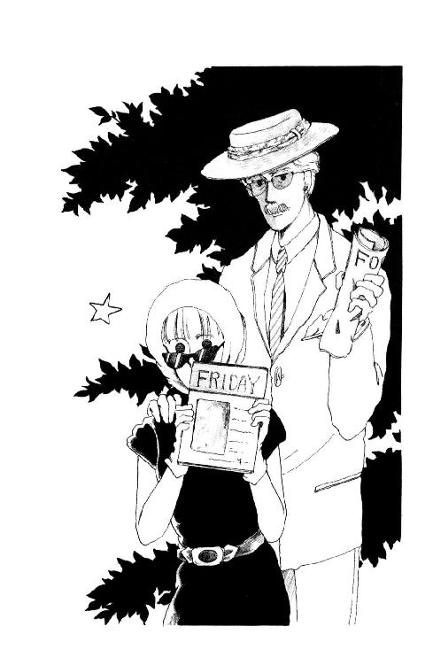
「見える見える。大丈夫。......あっ!!」
「何っ!!」
まさか、まさか乗ると見せかけて降りちゃったとか!? ってことはあたしたちの尾行、バレてるってことで......。
パパはくすん、と哀しそうな顔をした。
「フォーカス忘れてきちゃった」
「え」
「階段の手すりのとこだ。オペラグラス見る時ちょっと置いたんだ、確か。......悔しいなぁ。もったいない。まだほとんど読んでなかったのに......」
「............」
「あっ、あっ、すまん。別に未来が焦らせたからだとか、そういう意味じゃ!!」
「......ごめんね」
由比ヶ浜で、外人さんの団体さんがどっと入って来た時には、これでバートさんを見失っちゃうんじゃないか、ってドキッとした。
だけどパパの老眼は遠くのもの見るのには意外と頼りになる。
降りるぞ、って肩を叩かれてギチギチの車両をどうにか抜け出すと、改札の方に、やせがちのバートさんと小太りの内田が歩いていくのが見えた。内田が先になってるものだから、バートさんは歩調合わせるのに、長い脚を持て余してぎくしゃく苦労してる。
稲村ヶ崎だ。
駅を降りて少し行くと、おとなふたり並んで歩けば、もうほとんどいっぱいになってしまうような道になった。
あまり離れてると、急に曲がったりした時わからないかもしれない。あたしとパパは、時々電柱のかげにぴたっ、と寄っては、サカサカサッ、と足音を忍ばせて走って、ついていく。
「のどかわいたなぁ」
よそのお宅の、立派な門柱のよこにぺたっ、とはりついた時、パパがいった。
「駅前で缶ジュースでも買ってくればよかった」
「がんばろう。そんな遠くじゃないわ、きっと」
「やれやれ......ちょっと、ちょっとでいいから休ませてくれ!!」
「そう？」
道はずっと一本みたいだ。
うるさいくらいセミの声。日差しを反射するアスファルト。サンダルのかかとが少し道にめりこむ。これなら休んでて、後で走ってもきっとそんなに響かない。
あたしもパパの横で、門柱にもたれた。
立派なお家が多いなあ。
竹藪があったり、蔦がはってたり、すごく昔から大切に大切に手入れしてきたようなお庭が長い長い生け垣の間から見え隠れする。うちのあたりみたいな新興住宅地と比べると、敷地だけで四、五倍はありそう。
こういうところなら、昔栄華をきわめ、今はもう思い出だけみつめて暮らすみたいな世捨て人さんに、きっと似合うな。
ああ、神様。
胸がドキドキしてきた。
逢わせてあげてください。バートさんを。憧れのムーヴィー・スターに。
あんなに、あんなに逢いたがってるんだもの。そのためにここまで来たんだもの。がっかりするところなんか、見たくない。
......やめとけばよかったかなぁ......尾行なんて。
神様あたしの心、見えてますよね。それなら、わかっちゃってますよね。
バートさんの望みがかなって欲しい気持ちの裏で、あたしとってもやなこと考えてる。
あたしの勘は間違ってないって頑固な確信。
内田がどういう手立てを考えてるのかわからないけど、バートさんごまかされっこない。どんな巧妙な噓でも、絶対、見破れるはずだわ。ほんものの原さんじゃない、って、はっきりわかるはずだわ。
そして見破ってしまったその瞬間、バートさんは思うはずだ。『ああ、やっぱりミックは正しかった』って......。
あああああ。
あたし、なんてやな子なんだ。ひとの不幸、願うなんて。がっかりして、がっくりして、傷心のバートさんをこの目で見ようなんて、なんて残酷な子なんだ。
口には出さないわ、きっと。だけど、あたし、心の中で、『ほぉらね』って『だから言ったでしょ』って、得意がろうとしてる。
どうして？ あたしなぜこんなに、いじわるなの？ どうもバートさんには特に陰険なような気がする。
夢壊されたから？ うかれた勢いで、キスなんかされちゃって、やだったから？
そうじゃない。それだけじゃない。
あたしはバートさんに嫉妬してる。
だって!! だって、赤ちゃんみたいに無防備なんだもの。疑うことなんて全然考えてないんだもの!! じれったいくらい素直に、ひとの言うこと信じちゃって。悔しいくらい純粋に、ほんとにほんとに喜んでて......。
それがそのまま、通用しちゃうはずない。それが普通。
だけど、だから、だからこそ。
このままでいさせてあげたい。その気持ちも本当よ。
ずっとミサも出てなかったくせにちょっと現金かもしれないけど、あたし、真剣にお祈りしてしまう。
神様バートさんを守って!!
奇跡を起こして!!
汗が浮いてきちゃった鼻の頭ハンカチで押さえながら、逃げ水の浮かぶ道の向こうをのぞきこんで......あたしあわててパパをつついた。
「パパ、曲がった!! 曲がった!!」
「ほぇ」
大きい影と小さい影が、突然、おっきな夏みかんの木のかげに吸い込まれるように消えたの!!
ぐったりしてるパパを放っておいて、あたしは急いで夏みかんの木の下まで走って、サッ、と隠れた。
それでよかったのよ。そのまま全力疾走で曲がったら、内田が話してるとこに飛び込んじゃうとこだった。
「いよいよや。この先にセツコはんがおる」
角の先をのぞきこもうとしたとたん、例のへんてこな方言が聞こえて、思わずざわっ、と腕がチキン肌になってしまったわ。
「......はい......」
バートさんの声はのどにからまっちゃってる。
「でな、あんたもいろいろ聞きたいこと話したいことあるやろけど、ひとこと言っとくで。なんせ相手はばあさまやさかいな。はっきり言って耄碌しとる」
「モーロク？」
「コーコツや、恍惚」
夏みかんの枝をそうっ、と動かすと、怒ったみたいな真剣な顔のバートさんと、おでこも耳のそばもダラダラの汗を汚いタオルでふきながら偉そうにふんぞり返ってる内田が見えた。
「そやよって、普通の会話期待したらあかんで。特にだ。生年月日、血液型、家族のこと、監督とか昔の映画にでとったころのことなんぞ、絶対に聞いたらあかん。よーけ思い出せんようになっとるからな」
「でもウチダさん」
「なんや」
「そんなのオカシイよ。おトシヨリは、いまのことはすぐわからなくなるけど、むかしのことはクリアーに覚えてる、っていうのがオーディナリーじゃありませんか？」
「アホッ!! カスッ!! ボケッ!!」
内田は汗の染みたタオルを振り回した。
「かりそめにも相手はスターやぞ!! オーディナリー・ピープルとはちゃうんやぞ!!」
「バット......」
「ええか？ だいたいスターさんいうのは気難しもんや。それもあの頃の女優いうたらな、女神や。天使や。一般大衆とは世界が別や。今のタレントのいじましいナルシズムとは違うよ。いつでもどこでもファンがみとる。飯なんか食わんでも、雲固なんかせんでも、平気な顔してなあかん。ずうっとそないな風にして生きてきとったひとや、あたりまえのババアとは違って当然やろが」
「............」
「だいたいなぁ、セツコはんはそういう、天の上におったスターさん女優さんの中でも、ひときわ神秘的な『永遠の処女』やで。トシ取れば誰かて、きれいきれいじゃすまなくなる。いつまでも金看板掲げてられなくなる。そやよって、あのひとは引退しよった。ファンのために、美しいイメージ壊さんために、残りの一生棒にふることを選ばはった。衰えていく自分を見せず、老醜をさらさず、ずーっと隠遁生活送ってきとんなはるんや」
「そのぐらいぼくだって知ってますけど」
「そやったら!!」
きゃっ!!
内田め、あたしの隠れてるほうに、ぴしゃん、とタオルをぶつけたの!!
「わかってもええんとちゃうか？ わしの絶大なコネクションをもってしても、セツコはん説得するの、大変やったんやで。ここで機嫌損ねてもーたら、わしにセツコはん、紹介してくれはったひとに申し訳がたたんわ。そやのにあんさんは、わざわざセツコはんいちびろういうんか？ むぅかしむかしのことなんだかんだほじくり返して、ああ、わたしも昔は奇麗やったのに、スターやったのに、今はこないババアなってしもてひとりぼっちや、ああ寂しい、もうやや、もう死んでしまいたい......ち、思わせたいいうんか？」
バートさんは黙ってぷうっ、とふくれてる。
「そか。ほなら、ええ」
きゃっ!! 内田が戻ってくる!!
「やめや。わし、ババアの自殺の責任とらされるんなんど寝覚め悪いこと、いややで。もーやめにしよ」
「ウチダさん!!」
バートさんがあわてて、前にまわりこんだ。
「オケイ、オケイ!! わかりました。静かにしてます。何も聞きません。だから、だから、逢わせてください!!」
「......どーしよーかなーっと」
内田はつーん、と向こうを向いた。
「わし、腹立っちゃったもんね。いじけちゃうもんね。帰っちゃおーかなー」
口笛なんか吹き出したのっ!!
握りしめてたハンカチが、ぎいい、って鳴った。
ううううう。
あたしだってあったまきたもん!!
なんなのよ、あのいいぐさ!! いいわけもいいとこじゃないの!!
よーくわかったわ。やっぱり噓なのよ。こいつ、なんのかんの言って、結局バートさんを原さんに逢わせてあげる気なんかなかったのよ。
このままごまかして帰るつもりなんだ。いいわ。
いいわよ。そっちがそのつもりなら。この角通る時、足払いかけて、腕ねじりあげて、髪の毛ひきむしって......ギッタンギッタンにのしてやるからっ!!
バートさん、ぶるぶる震えてる。
わかっちゃったんだ。内田の魂胆。そうよね、わかるよね。
怒んなさいよ!! 怒って、怒って、なぐっちゃいなさいよっ!!
ぶるぶる震えながら握りしめていたバートさんの拳が、ぎゅっ、と上がった。
そっぽ向いて、下手な口笛吹き続けてた内田が、ギョッ、とするのがわかった。
いけー!! やれー!!
「おねがいします!!」
......えっ!?
思わず、みかんの葉をガサガサ鳴らしてしまったけど、内田もびっくりしたのか、よかった。みつかってはいない。
バートさん、道路に正座してしまったの!!
「何でもしますから!! お礼しますから!! 逢わせてください!! 逢わせてくださいっ!!」
バートさんは、髪を地面に擦りつけるようにして、頭下げた。
「おねがいします!! おねがいしますっ!!」
......やだ......。
やめなさいよ!! こんなの、こんなのやだよー!!
なんであんなやつに土下座なんかするの。なんであんなやつにお願いなんかするの。
噓にきまってるじゃない。なんとかしてごまかそうとしてるじゃない。
そんなに、そんなに好きなの。
そんなに、そんなに逢いたいの......？
でも、ほら、内田のやつ、何も言えなくなってるじゃない。あんなにきょろきょろあたり、見回して。悪いことしてるひとの顔だ。泥棒の顔だ。
それでも、それでも信じるの？
「お、おい、バートはんちょっと!! 立ちいな!! 立っとくなはれ!!」
「おねがいします!!」
「そがい大きな声で、ひとが来よるがな。な、な、立ち」
「おねがいします!!」
わ～～～～ん......見てられないよぉ......。
きゃっっっ!!
ひやりっ!!
頰に何か、さわったの。
でもあたし偉い。出しかけた声ちゃんととっさに両手で押さえた。
そしたら、能天気な声が、耳元で聞こえたんだもん!!
「いやご苦労さん」
「パパッ!!」
「いや......あの、未来ものどがかわいただろうと思って......」
大きな声が出せないぶん、あたしはもう、全身全霊をこめて、パパをにらんだ。
だからって、だからって、ひとが必死に隠れてる時に、缶コーラほっぺたに押しつけることないでしょっ!!
いまそれどころじゃないのっっ!!
ことばのかたちに口動かして。きょとん、とするパパに、夏みかんの枝のすきま、指差してみせる。
「わ！............」
叫びかけたパパの口、急いでふたをする。
「しゃーないな」
あ。
内田がバートさんのこと助け起こした。
「そんなに逢いたいか......？」
ズズズズズ。
あげた顔を苦しそうにゆがませて、バートさん、こくんとうなずく。
「なぁ......わし、心配しとるんや。あんさんは夢ぇみとるやろけど、相手は六十なんぼのバアサマやで。惚れたおなごが、シワシワの、ヨボヨボの、シミシミになってもーても、あんたのかあさんよりもっとババアなっとっても、あんさん平気なんか？」
ズーズー......ズズズ。
「......はい」
バートさんの顔、内田のかげで見えないけど、きっぱりした声。
「平気です。関係ありません!!」
「どーしてもか」
「どーしてもです！」
「ほーか......」
内田はふうっ、と肩で息をして空をあおいだ。
こらっ!!
バカバカ！ この期におよんでなにかっこつけてるのよ！ 空なんか見てないで早くあやまんなさいよっ!! バートさんに、バートさんに、手をついてあやまんなさいよっっ!!
「......わかた」
え............？
「ほな、行こ」
う、うそぉ!?
ズズズーッ？
「ほんとですか？」
「ああ。行こやないけ」
「ウチダさんっ!!」
「はぁぁ。まいったわ......まったくあんさんには負けた」
内田が、さっさと歩きだしたのーっ!! バートさんの背中、ポンポン叩いて。まるで、親友同士みたいに寄り添って、歩いてくのよぉぉ!!
じゃあ、じゃあ、ほんとはほんとだったの？ 信じて、信じてよかったの......？
ズーッ!! ズーズッズッ!!
「......パパ......」
ズッ？
ストローくわえたまま、パパがこっち向いた。
......やっぱり......どうもさっきから、変な効果音が聞こえると思ってたのよ......。
パパがしっかり抱えた壜、ラベルの真ん中、金色地に赤の『リポビタンＤスーパー』の文字がキラキラ光ってた。
ひとのお家の軒先を抜ける、細い道。竹を組んで作った垣根に、暑すぎるのか、グッタリよっかかってるまばらな木。のぞきこむと、軒が傾いたみたいな古い平屋のお玄関のあたりだけ、ちょっと見えた。
ふたりがこの道を入っていって、たっぷり二分間、待ったのよ。
「どうする？」
パパが言った。
「裏はどうもよそのお宅に面しているみたいだし、ここをはいって行ったんじゃ、すぐに見つかるんじゃないだろうかねぇ？」
「......行くわ」
「おいおい」
「ここまで来たんだもん。みつかったらみつかった時のことよ。とにかく行ってみる」
「あのな、ひとんちの、庭でも黙って忍びこんだら、不法侵入ってことに」
「パパのおともだちだってうちに不法侵入したわ」
そっと歩きだすと、パパも、ため息つきながらついてきた。
どうやら、お玄関の隣はお風呂らしい。トタンの煙突が突き出ているもの。その横の、すごく古ぼけた板のドアはきっとお勝手口ね。お鍋やおたまがぼんやり透けて見える青い網戸に頭がかからないように、姿勢低くして回ってみた。
庭の隅に、お洗濯物が干してある。
あたしは思わず足をとめて、そのお洗濯物に見惚れてしまった。
真っ白いシーツと枕カバーが、きっちり端まで四角く伸ばして干してある。バスタオルも同様。タオルが被せてあるのは、きっと下着なんだわ。どれも、きちんと両端をピンチでとめてある。物干し竿は端が傷んでいるけれど。ピカピカで埃ひとつついてない。
下のほうのめだたないところにバケツがあって、その縁に、いかにも使いこんだ！ って感じのお雑巾が、やっぱりきっちり真四角にかけてあった。
家庭科の時間に習った『正しい洗濯物の干し方（註５）』の見本写真みたいだ。
......ただものじゃない......。
このうちの女性は、すごくきちんとしたひとなんだわ。原節子さんそのひとなのかどうかはわからないけど、あたし、尊敬しちゃう!!
毎日毎日の家事なんて普通誰も見るはずがない。自分自身がそうしたい、って思ってなければ、きちんと隅々まで気を配っておかなきゃ気持ち悪いってぐらいの気構えがなければ、なかなかここまでできるものじゃない。喜んで働くこと、働けることに感謝すること......そう、喜働精神！
このひと、華雅の卒業生なんじゃないだろうか......。
「おい」
小さな声で言いながら、パパが背中つついた。
ハッ、と耳を澄ますと、微かに声が聞こえてくる。
すぐ前の窓からだ。もっと低くならなきゃ、ってパパが手で示した。あたしはうなずいて、ズムッ、と腰をおとした。
あたしたちは、右、左、右、左、苔の生えた土の上を、足を滑らせないように一歩一歩、お遊戯する幼稚園児みたいに進んでいった。声がどんどん大きくなる。内田だ。
「......って、わがまま言ってすみませんでした。ほら、バートくんも、よくご挨拶しなや」
幸い、縁側の端にミシンらしい台があって、何かの箱が積んである。簾もかかってて、二重になってる。おとなしくしてれば大丈夫だ。
あたしは息を殺して、中を透かしてみた。
ずいぶん暗い部屋だった。
外が明るすぎるから、目が慣れない。
「......なんや。なんも言わんのか？」
わははははっ、て内田が笑った。
何度かまばたきして、じっと見ているうちに、ようやく、中の様子がわかってきた。
八畳ぐらいの和室だ。縁側に近いほうに床の間があるらしい。きれいに手入れはされているけど、けっして新しくはない畳。藍染めのお座蒲団にバートさんが座っている。肩のあたりを緊張させて、きちんと正座してる。こっちがわに内田の背中。
そして、バートさんの正面、つやの出た卓袱台を挟んでずいぶん遠く離れたところに、ふすまを背にして、地味な和服のおばあさんが座ってる!!
あたしはパパを見た。パパは額にしわを寄せて困ったような顔してる。あたしが自分の耳を指差すと、囁き声で言った。
「原節子っていうのは、鼻はでかいわ目もでかいわ、えらくバタ臭い顔なんだ」
手で合図して、なんとか今度はあたしがパパの耳に口を寄せる。
「で、どうなの？ あのひと、ほんものだと思う？」
「うーん......確かにおもざしは似てるがな」
バツ？ 手で聞くと。
「いや、違うとハッキリも言えないんだが......何しろ、よく見えないし。ああ老けこんでるとなぁ」
んもう......。
そんなんじゃ、何のためについて来てもらったのか、わかんないじゃないよ!! こうなったら、バートさんのマニアの眼力に期待するっきゃない。
んっ、と気合を入れ直してまた目を凝らした。
何も起こらない。
「おいおい」
内田が言った。
バートさんもおばあさんも、ぴくっとも動かない。
まるで、真剣勝負だ。
「こらかなんな。にらめっこですか？ はっはっは」
誰も動かない。
特にバートさんなんか、死んだひとみたいな顔いろになってしまっている。
「はっはっ......は...は......は。やれやれ」
さすがの内田も、ふうっ、と肩で息ついて黙ってしまった。
おばあさんが、何か言おうとしたみたいに口をひらいて、そのままそっと、困ったみたいに目を伏せてしまった。
時計の音が、大きく聞こえた。
あんまり目を凝らし過ぎて、目が痛くなってきた。まばたきして、目をこすって、もう一度見てみた時。
「ノリコさん......」
低い、低い声がして。
バートさんの頰の上を、光るものがつうっ、と落ちていったの。
そして。
おばあさんの目に何かが蘇った。ゆっくりと、スローモーション・フィルムみたいにゆっくりと、おばあさんはうなずいた。
ちょっとたれ目ぎみの、きっと昔はすごく大きかったろう瞳を半分にして、下をむいたまま、ほのかに、ほのかに口もとをほころばせて。恥じらったように。覆いきれない嬉しさを嚙みしめてるみたいに。
そのひとは笑った。
あたしの目の中で、その微笑みが、ぶわっ、とぼやけた。がしっ、と肩をつかまれてちらっとふりあおぐと、パパの目も濡れてた。
きれいだった。
こんなきれいなおばあさん、見たことがないよ。こんな素敵に笑うひと、あたし、見たことないよ。
よかった。ほんとによかったね、バートさん!!
あたし、来てよかった。後つけるなんて人道に反することしてしまったけど、こんな素敵な場面に出会うことができたのは、きっと神様のおぼしめしよ。
信じてもいいんだ、って......。
ただ、まっすぐに信じてていいんだって、未来に、未来に、教えてくださったのだわ......。
......ああこの感動には、沈黙こそふさわしい......。
........................。
「いやぁ!! こいつぁまいったなぁあ!!」
こ、こらっ!!
わざとらしい明るい声が、この場のよい雰囲気をすっかり壊してしまったのっ!!
そうよ。内田よっ!!
「やーえかったえかった。あのさ、ね、あの、バートくん？ 少しなら、おしゃべりしてもいいんだよ。ぼくに遠慮しないでさぁ？」
「............」
「だからほら、せっかくのご対面じゃない？ そう何度もあることじゃないんだからね。......おおっと、そうか。最愛のひととのめぐりあいなんだもんね。コラマタ失礼しましたー。ぼく、ちょっとはずさせていただきますー。おーい、すみません。麦茶かなんか、いただけないかなー？」
見えないほうから、ハーイ、って若い女のひとの声がした。
えっ？ 誰かまだいたの？
そうか。考えてみれば、おばあさんひとりじゃ身のまわりのことするんでも大変だものね。しかももと、大女優さんなんだし。誰か、お手伝いしてくれるひとぐらい、いたって不思議はない。
声のほうに、内田が立っていってしまっても、バートさんとおばあさんは、そのまま端然と座っていた。まるで、狛犬さんになってしまったみたいに、卓袱台はさんで右と左にわかれたまま、じいっと。そのまま。
「帰ろう」
小さい声でパパが言った。
「うっちゃんも、なかなかいいところがあるじゃないか、え？ 未来ももう、気がすんだだろう」
「......うん」
あたしは素直にうなずいた。
なんだか、すごくサッパリしちゃった。
こんど逢ったら、あたしバートさんにもっと優しくしてあげよう!!
内田さんにも、疑ったりしてごめんなさいって、いつか機会があったら、そう言おう。
よし。帰ろう！
............あれ......？
「......ひ～～～～ん!!」
「な、なんだ？」
「足が、足が」
しびれちゃったのよぉぉ！
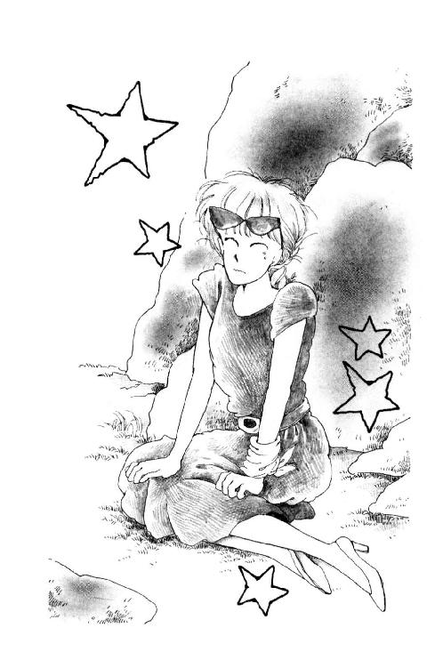
立とうとしたとたん、ぐわん、と来たの。こ、こ、これはひどい。これは重い。棒みたいになってる。感覚ゼロ。動かせない。ひっかいても、爪たてても、痛くもなんともないよー。でも、でも、歩けるようになるにはまず、とにかく、とにかく、伸ばさなきゃ......。
............!!
じ～～～～～～～～ん、とほぐれてく痺れに、あたしもがいた。脂汗がにじむ。わーん。泣きたい。大声でわめきたいぃぃ!!
手を嚙んで、もれそうになる声ごまかしてると。
「ノリコさん」
バートさんの低く抑えた声がして、パパがさっ、とあたしを見た。
皮一枚下を蟻さんが行進してくような、痒いようなくすぐったいような、もうどうにでもなれみたいな、パニック状態だったけど、パパの手を借りて、あたし必死に軒下の大きな岩にすがりついた。
「ほんとうはぼく、恐ろしくもあったんです......ノリコさんに逢うこと。ぼくのノリコさんは十代から二十代の、キュートでノーブルなレディです。バイセクルに乗ったり、オチャヅケサラサラしたり、おてんばなとこもいっぱい知ってます。ケッコンや、カテイや、いろんなこといっしょうけんめい悩む、マジメでカシコイひとでもある。でもノリコさんは、おてんばしてても、メランコリックにしてても、いつもビューリフォでした......です」
バートさんはへへっ、て笑ったけど、ふすまの前のおばあさんは、もう笑ってなかった。まっすぐにバートさんを見つめてる。
バートさんもすぐに、まじめな顔に戻った。
「ノリコさんと、セツコさんは同じひとだけど、違うとも思っていました。セツコさんはニンゲンです。でもノリコさんは、オズ監督がスクリーンの上に見せてくれたマボロシ。この世のヒトじゃない......でも、それでも。ぼくはやっぱり、逢いたかったです。その後のノリコさんに。ノリコさんじゃないセツコさんにでも、逢いたかったです。ゴメワクかけました。スミマセンデシタ。アリガト、ゴザイマシタ」
バートさんはふかぶかと、頭を下げた。
「......おいくつ......？」
一瞬、どこから聞こえたのかわからなかった。バートさんもそうだったみたいで、えっ？ って顔をあげたぐらい。
おばあさんはもう一度、たおやかな声で繰り返した。
「あなたは、おいくつですの？」
裏声みたいな不思議な声。『の？』って軽く上にほうりあげるようにして消えていく声は、いかにも、天上びとの囁きめいて優雅だった。
「十七です」
今度ははっきり、バートさんが答えた。
「そ」
おばあさんは首を、ちょっとかしげるみたいにした。
それから、おっしゃったわ。
くすくす笑いながら、でも寂しそうに。
「ごめんなさいね......こんなおばあちゃんで」
バートさんは、ゆっくり首を振った。
「これでぼく、決心がつきました」
「決心......ですか？」
「はい」
膝の上に置いていた手を、ギュッ、と握りしめた。
「ぼくはやっぱり、カントクになります。オズ監督みたいな立派な映画、撮るために、ガンバリます。ステイツに帰っても、またきっとお金ためて、パワーためて、ベンキョウして、日本に来ます。そして、いつかきっと、ノリコさんを撮ります。一回でいい。ノリコさんを撮ることができるまで......ぼくは、ぼくは......絶対死にません」
パパがあたしの肩を叩いた。
「未来、気づいてるか？」
「なに？」
「バートくんは、一度も『あなた』と言ってない。ずっと『ノリコさん』だ」
えっ？
じゃ、じゃあ、って言うことは......でも、でもっ!!
「ぼくはノリコさんを忘れません。忘れたくないです。きっとキャント・フォゲット、一生、忘れられなくて、追いかけつづけるでしょう。今はまだ、ぼくはノリコさんに手が届かない。でもきっといつか逢います。みつけます。ほんとうのノリコさんを！」
短い、乾いた音がした。
おばあさんの手が卓袱台の上に落ちた音。骨が鳴ったのか、指輪が鳴ったのか、カツーン、と耳にいつまでもこだまする音。
に、にせものだぁっ!!
立ち上がろうとしたとたん、体重かけたはずの地面がふにゃっ、と変に柔らかかった。
「未来ちゃん!!」
「未来っ!!」
あれ？ なんか今、変な声が......なんで？ なんで、どこが変だと思ったんだ？ だって、この声は、この声は......。
焦ってるうちにあたしは、簾とミシン・カバーと、糸の入ってた箱をドンガラガッチャンなぎはらってて、気がついた時にはもう縁側の板の目が顔から数センチに迫っていた......。
「ねえ、いつわかったの？」
我ながら、愚かしい質問だとは思ったのだけれども。
パパに背負われたあたしの横、なんだか楽しそうにスキップめいた足取りで歩いてくバートさんみてたら、聞いても許してもらえそうな気がしたんだよね。
「ホワット？ 何が？」
「だから......その......あのひとが......ほんものじゃないってさ」
「ウーン。イナムラガサキで降りた時から違うな、とは思ってたけど」
「どうして？」
「セツコ・ハラの家の場所、もうダイタイ見当ついてるんだ。何箇所か、そうじゃないかな、ってところがあって」
「うそぉ!! どこなのっどこなのっ!!」
「ナイショナイショ」
バートさんはいたずらっぽく言ったのよ。
「ぼくね、思ってる。誰にも逢わずに静かに暮らしてるひとのとこに、ムリにおしかけたりするの、よくないよ。いつかきっと、逢える予感ある。ムリヤリじゃなく、そっとね、自然に、ふわっ、と逢えたらいいね。......まあ、ひょっとして今日がそうだったらいいなーと思ってたけども。あのひとも、素敵なヒトだったけど、やっぱり笑い顔が違ったね」
「ほほお。違いましたか」
とパパ。
「違いましたね。いっしょうけんめいマネしてくれてたけど、でも違うね。ノリコさんスマイルはね、絶対他のひとにはできないよ」
「......素敵ぃ......いいな、いいな！ 憧れちゃう!!」
「あのな未来」
パパがなさけない声で言ったわ。
「たのむから少しおとなしくしててくれんか。どうも腰がギシギシいってな」
「代わりましょうか？」
朱海さんが言った。
そうなの。朱海さんなの!!
しびれて感覚がなくなってた足を関節と反対の方向に着いてしまった瞬間、あたしの名前呼んだ声に、すごく違和感感じたの当然なんだ。いるはずがないひとの声だったんだもの。
「なんなら、未来ちゃんだけ、バイクで先にお宅までお送りしますけれども」
「そうはいかん!!」
パパはあわてて、えいしょっ、てあたしを背負いなおした。
「イエモトくん、いくつだっけ？」
「えっ？ 十七ですけど」
「そらなっ!! そうだと思ったんだ。わたしはこれまで諸君らに少し寛大すぎた。十七歳は危険だ。危ない。いつ、なんどき、フライデーされてしまうことか......ウッホン!! とにかく、今日のところはわたしが連れて帰るから心配しなくてよろしい」
「いったいどうしたの？ おとうさん、急に」
朱海さん、小声であたしに聞いた。
肩すくめておく。
「でもおじさま、ご無理なさると、あとで大変なんじゃありませんかぁ？」
にやにや笑いながら、うららが言ったのよ。
そうよ。うららもいるのっ!!
「いやいやっ!! なんのこれしきっ!!」
「......ごめんねパパ......重いでしょ」
殊勝らしくいいながら、あたしはパパに見えないように、うららに『べー!!』をしてしまったわ。
だって......ふたりとも、あんまりじゃないよっ!!
バートさんが高性能のトランシーバー隠し持ってたなんて。そいで、時々『ヘエー、イナムラガサキまで行くんですか』とか『ずいぶん狭い道ですねー。迷っちゃいそう。えーと、駅から、しい、ごお、ろく番目の角か』とか、わざとらしく叫ぶのを聞いておいて。バイクの朱海さんとうらら、先回りしたり、ずっと後から悠々と追いかけて来たりしてた、って言うんだものっ!!
そりゃね。ゆうべの電話じゃ、あたしの計画、うららにバレてしまってもしかたないと思うわよ。でもね、そんならそうと、あたしもまぜてくれればいいじゃないの!!
「しかしミッキー、あんたもほんとよく捻挫する子ね。言っとくけど、もうすぐガッコだよ。ガッコ始まっちゃったら、もうあんまりヨット乗れないよー。これから最後のひとふんばりだったのにね。きのどくー」
うるさいうるさい!!
あたしだって、あたしだってわざとケガしたわけじゃないやいやい!!
「うらら！ 焚きつけるなよな。未来ちゃん、捻挫は癖になるからね。ちゃんと治るまでヨットなんて乗っちゃだめだよ」
ふぇ～ん!!
「しかし......こらしょ......あのひとも気の毒だったね」
あたしの重みに泣きながら、パパが言った。
「あのひとって？」
「ほら、あのおばあさん。ひとをだます手伝いさせられるなんて......内田め!! 困ったやつだ。今度逢ったら、とっちめてやる!!」
『うっちゃん』が『内田』になってしまったなぁ。
でも、しかたないよ。
ひとがケガしたっていうのに、その騒ぎをいいことに、サッサと逃げちゃうようなひとなんだもん。
今度西在家さんちで取材したい、って言ってたそうだけど、どうするつもりなんだろ？ あたしたちに顔見せられるのかしら。
また、やめちゃうのかな。
内田って、湘南テレビの社員さんじゃなかったんだよ。制作会社のひとでさえない。フリーのディレクター。企画作っては持ち込んで、使ってくれるとこで働いてるひとだったの。腕は悪くないんだけどあまりに個性が強すぎて、人間関係で失敗しては、いつのまにか消えてしまうかわりものの放浪ディレクター......って、有名なんだって。
これ、あのおばあさんに聞いたの。
「でもね、わたしは内田さん、そんなにきらいじゃあないのよ」
って、しょんぼりした顔でおっしゃった。
「ああいうひとがいたから、テレビがここまで来れたんじゃないのかしらねぇ」
って。
それで、あたしたちもなんとなく、責めるにも責められなくて、湿布薬のお礼なんか言って帰ってきちゃった。
内田さんかぁ。
あのめちゃくちゃなことば遣いも、あのひとがたどってきたいろんな土地のおみやげだとすると、なんだかおかしいより、寂しいな。
そして、あのおばあさん自身だって。
自分のことは何も話さなかったけど。昔、ほんとに女優さんだったひとかもしれない。美人だし、声もいいし......なにより、微笑みが素敵だったもの。
頼まれて。原節子さんのふりして欲しい、って言われた時、何を思っただろう。
あのひとは、今日、一世一代の演技をしてくれたのかもしれないなぁ。
それでも、ノリコさんにはかなわなかった。バートさんの、ノリコさんへの思いの強さに、勝てなかったんだ。
......いいなぁ......ノリコさん。
時も場所も、国境も越えて、こんなに思われて。
これが愛よ。これこそ、あたしの理想の愛だわ。
だけど......いつかあたしのこともそんな風に思ってくれるひと、現れてくれるんだろうか。怪しいなぁ......。
ようやくイナムラの駅が近づいた、と思ったら、間が悪く、あたしたちは閉まってく踏み切りの前に従順に並んで待った。
調子っぱずれの警報器。パパの背中から見ると、遮断機がずいぶん低い。
「パパ......」
「ん？」
ありがと。つきあってくれて。
最後の最後にケガなんかしちゃってゴメンなさい......。
みんなの見ているところで言うのが照れくさくって、パパの胸に垂らした手にギュッ、と力こめると、パパがあたしの脚、ポンポン叩いてくれた。
それをにやにや見てたかと思うと。
「あ、そだ。朱海くーん!!」
うららはいきなり、そばの空き地にバイクを取りに行った朱海さんを呼んだのよ。
「ねぇお金持ってる？ そこの『クドウ』でエンガディーナ買ってってくれない？」
「なんだそれ」
「えーっ。朱海くんも好物じゃないさ。ほら、パイみたいなのの中にィ、胡桃がキャラメルで固まったのがはいってて、冷蔵庫に入れておいて二センチぐらいずつ切って食べる」
「ああ、あれか。そういう名前だったのか。エンガ何だって？」
「エンガ何はないでしょー、それじゃほとんどエンガチョじゃないさ!!」
叫びあってるうちに、電車が通って、警報器がやんだ。
わかった、わかった、って手をふる朱海さんに、たのむよー、って言って、いきなり振り返ったうららが、ドン、とぶつかった。
「やだ、バートったらっ!! 踏み切り開いたろーに。なんでこんなとこにヌボーッと立ってんのよっ!!」
バートさんは返事をしなかった。
その沈黙に、パパとあたしも振り返った。
「どうかしたの？」
ようやく、うららも声をひそめた。
「ひょっとして忘れものとか。あ、トイレ？ なら早く、そこのくさむらに......」
バートさんは、ずっと一点を凝視してた。駅にとまっている電車のほうを。
あたしたちも見た。がたん、と大仰に身震いして、出発進行したばかりの江ノ電を。
すぐにわかったわ。バートさんが、何を見ていたか。
来た時と比べるともうずいぶん空いてる車両のなかほど。白地に茜の涼しげな模様の着物、畳んだ日傘の柄を両手で抱えるようにして、窓のそとを見てる美しいご婦人。広い富士額に半分銀色になった髪がふんわりかかり、けぶる目元、高い鼻筋。まるで、まるでそのひとのまわりだけ、空気の色が違う。
そのひとは、こっちを見た。あたしたち全員、ポカンと見つめていることに気がついて。
そして、微笑んでくださったの！
明るく大きく包みこむように暖かく、それでいてどこかはかなく、寂しい......懐かしいような胸を衝かれるような......誰にも似てなくて、ぎごちないのに自然で、口元はハリウッド的大胆さなのに、瞳が、瞳が優しすぎるっていうか......。
ああ。
ことばでなんか言えないわ。日本じゅう世界じゅうの形容詞形容動詞助詞副詞感嘆詞を集めても、きっと、きっと足りないの。
電車が速度をあげて、やがて見えなくなってしまっても、あたしたちはみんなぼうっとして、立ちつくしていた。
そのひとのおもかげがまだくっきりとやきついているまぶたを、閉じることができずに。
でも、一生そうしてるわけにはいかないのよね。
「......い......いまのは......？」
パパが呻いた。
「今のは......もしかして......」
「やっぱり？ やっぱり？」
「でもあたしそんな、お顔なんて知らないし」
あたしとうららとパパは、一斉にバートさんのほうを見た。
「ねぇバート、今のは......？」
バートさんは答えてくれなかった。
「じゃ......」
「ほんとに？」
バートさんは答えてくれなかった。
立ったまま気絶していたのよ。
あとほんの一分、早く駅についてたら。ううん、あのままでも、むりやり走って遮断機なんかくぐっちゃえば。
あたしでさえ、思った。
だからその後、バートさんの鎌倉歩きがますます頻繁に念入りに、ほとんど執念っ!! って感じにマニアックになってきたのは、あれは、とっても順当なことに、なるんだろうなぁ......。
暗くなるまで待って
「だいたい朱海くんはひいきなんだよねー」
持ち込んだガラス・テーブルの前にお行儀悪く膝を立てて、首の後ろを下敷きで扇ぎながら、うららはそう言った。
「あんたにはさー、受験勉強大丈夫なの、よかったら時々行って見てあげようか？ なんてまぁ甘い声だしちゃうくせに、実の妹がひーひー言ってんのは見殺しなんだもんなー。ちっとくらい手伝ってくれたっていいと思わなーい？」
「怠けるからいけないの。うららの場合、宿題やる気なんてはじめからないじゃない。同情の余地ないもん」
「ちぇっ。捻挫でどこも行けなくって泣いてんじゃないかって心配してわざわざ！ 用事こさえて遊びにきてやってるってのにー」
「噓ばっかり」
「嘆かないでちょうだい、うらら」
ノートの上にほとんどつっぷした格好のままなもんだから、杉丸の声はえらくくぐもってる。
「そのぶんこれこうして、あたしががんばってあげてるじゃないの」
「あーありがとねー杉丸。でもさ、頼むからさ、もー少し汚い字で写してくんない？ それじゃいくら柿間がトロくたって、あたしの字じゃないってバレるぜよ」
二階のあたしの部屋でうららのための宿題写し大会をやってるとこなんだ。
あたしが英語、杉丸が数学を分担してあげてる。うららは作文を書くんだ、とか宣言して以来かれこれ三十分、一枚めの原稿用紙ひろげたまま、『あー』だの『うー』だの唸るばかりで、持ってきてくれた例のエンガディーナと冷たい紅茶をつまんだり飲んだりする以外は、何にもしてない。
あたしはね。約束だから、いいけれど。
かわいそうなのは杉丸よ。予備校の夏期ゼミがやっと終わったっていうのに。うららに誘われてついて来てみたら手書きコピーの手伝いだって言うんだもの。
例の几帳面の極致みたいな字、うららのリクエストで２Ｂの鉛筆を使っても変わらないどころか、ますますお習字めいた真剣さで書きつづってる。書いたあとを引きずらないよう、右手の下にはさみこんだメモ用紙、もう三枚もくたくたのよれよれにしてしまったほどよ。
......ばきっ!!
「あ......ごめんなさいミシェール......また折ってしまったわ、鉛筆」
ぬっ、とあげた額に、玉の汗。
「いいけど......」
愛情に比例して筆圧が高くなるってことなのかしらねぇ。
グイーン!! ってけずって鉛筆を渡すと、にこっ、と笑って杉丸はまた、ガバとばかりにノートに向き直った。
一時は心がわりしたようなこと言ってたけど、やっぱりうららの頼みには弱いんだな。
チラッ、と見ると、うららは唇と鼻の間に鉛筆をはさんで、腕組みして目を閉じてる。作文のアイディア考えてるのかもしれないけど、どっちかと言うとただ単にサボッて居眠りしてるように見えるわよ。
好きだって言ったってうるさがるばっかりなのに、こういう時だけは杉丸を利用しちゃうんだから、調子いいよ、まったく。
こんな子に思いをかけてるなんて杉丸も悲劇だわ。
「ね、ね、杉丸」
小さな声で言ってみる。
「その後、お手紙でも書いてみたの？ 加奈子さまに」
「加奈子さま......」
ピクッ、と杉丸の手が止まった。
「そうよ。千葉加奈子さま。憧れちゃった、って言ってたじゃない。あの時お話したんでしょう？ ご住所ぐらいうかがったの？」
机に横たわった三つ編みの端っこがブルブル震えだした。
「もし、まだ知らないんだったら教えましょうか？ えーっと、ソロリティー名簿は......確かこのへんに」
「ミシェール」
机のひきだしを搔きまわしだしたあたしの、ブラウスの裾が、凄い力でひっぱられた。
「ぞんなごどじないで！」
たぶん出る限度よりも、さらに一段階低い声で、杉丸が言った。ノートの上に屈んだまま、顔だけこっちに上げて、寄り目になってる!! こ、怖いよっ！
「な、なんで？」
「あだじだっでぐるじいのよ。ぐるじいげど、いばはどにがくがぐぎょうに励むじがないじゃないのっっ!!」
一息に言うと杉丸は、はあっ、はあっ、と息をついた。
「まだこだわってんのぉ？」
前にこの子『ついこのあいだまで、うららひとすじだったのに、加奈子さまに惹かれてしまうなんて自分が許せない！』なんて言ってたんだ。
「杉丸の純情はよくわかるわ。でも別に、うららと何か約束したわけじゃないんだしさ。あれっきりいっぺんも逢えなくて、お手紙も書かないんじゃあんまり寂しいじゃないの。そんな深刻に考えないで、残暑見舞いか何か出してみたら？」
杉丸はふうっ、と息をついて、ようやく上体を起こした。
「でも、あたしのことなんて覚えてらっしゃらないわよ......」
「覚えてらっしゃるわよ!!」
あ。こないだソロリティーにうかがった時に、それとなく加奈子さまのお気持ちを聞いてみればよかったな。
でもさ。でも。
あたしとしてはトコを裏切るようなコトはするわけにもいかないし......トコって言えば、どうしてるかなぁ。実は。あの日、突然麗美さんのお宅にうかがうことになって、でもみんなには秘密だから、って言われて。トコにも『家の用事で早く帰らなきゃいけないから』って噓をついてしまったんだ。
気がとがめちゃって、電話もしそびれてるうちに、夏休みももう残り少なくなってしまったなぁ......。
夏休みが終わる......？
行きたいとこもまだあったのに。
横浜のほうとか。油壼の、朱海さんたちがアルバイトしてたヨット・ハーバーにも行ってみたかった。逗子マリーナの展望台から見る夕陽だってまだなのに。
それに、それに......あたしできたらあれも......。
......そうだっ!!
「ね、杉丸!! またみなさんをお呼びしようか！」
「えっ？」
「うううん、ソロリティーのみなさんじゃなくて。トコと加奈子さまと麗美さまだけ。それならそんなに大変じゃないし、家にお泊めすることもできるわ......ああ、麗美さまがたは受験でいらっしゃるし、もうご予定がおありかなあ......でもでも、こないだのお礼もしたいし、トコとも逢いたいし......」
「お呼びって、だってミッキー、ヨット禁じられてるんでしょう？」
「ヨットじゃないの!!」
きょとん、とした杉丸の顔。
ううう。言いたい。言いたいけど、もう少し待っちゃう。じらしちゃう。
「じゃ、じゃ、なんなの？」
もう我慢できない。
言うわ!!
「ホタルよ!!」
「......ホタルぅ？」
ああ、きっとみんなもびっくりするわ。
「そうよ、そうよ。赤平川の上流のほうの、ツユクサがいっぱい咲いているあたりに、源氏だか平家だか知らないけどホタルの大群がいるって、こないだテレビで言ってたわ。今年はすごく、いっぱいだとか。みんなで、浴衣着て、下駄はいて蛍狩りに行く......なんて、素敵だと思わない!?」
「いい、いい!!」
ばんっ!! と杉丸がテーブルを叩いた。
「風流!! 優雅!! ロマンチック!!」
「......あのねー」
眠そうな目をこすりこすり、むっくりうららが起きてきた。
やっぱり寝てたのねっ!!
「蛍なんて捕まえてみりゃ、ただのムシだよー。けっこう気持ち悪いもんなんだから。だいたい赤平の川原まで行くルートなんて、あんたたち、知ってんのぉ？ 夜なんか寂しいよー」
ゴロッ。
肘枕で寝転がってしまったうららに、杉丸なんか、みるみるしゅんとしてしまった。
あたしたちが、あたしたちがせっかくこんなに盛り上がってるのに、もうっ!!
「うららっ！ うらら、それはないじゃないよぉ!!」
ひっこしたばかりのあたしはもちろん、鎌倉に住んでる杉丸だって、赤平川のあたりはよくわかんない。だけど。
「うららガキ大将やってたころ、よく赤平でザリガニ採りしたって言ってたじゃない!! 案内してよ!! ねぇねぇ」
「んーな、めんどくさいよー。蚊にさされるしさー、痴漢だって出ないとは限らないぜ。道に迷ったらいくら夏だって、夜は冷えるから。心細いだろーねーきっと！」
「......うららぁー......」
「ふん。まあね。あそこらへんは、花火なんかやるにもいいとこだし」
............えっ......？
杉丸とあたしは顔を見合わせた。
絶対だめ、ってわけじゃないみたい!!
よーし。押すんだ。
肘でつつくと、力強くうなずいて、杉丸、麦茶でごくっ、と喉をしめらせて、
「うらら、お願い。わたしずっと講習だったでしょ。この夏なーんにも楽しいことなかったんだ......ああ......空にすわれし十五のこころ......十五歳の夏は今年限りだっていうのに......なーんにも楽しいことがなかったのよねぇ。ぇ。ぇ。ぇ」
エコーをかけても、うららは返事しなかった。
あかん。
杉丸は首を振って、あたしにタッチした。
おしっ!!
「ねーうらら。あたしね、生まれてからまだ一度もホタルを見たことがないの。そりゃ、うららにとってはただのムシかもしれないけれど......今年はきっと、うららに頼めば、ほんもののホタルが見れるなぁ、ってずっとずっと楽しみにしていたのよぉ。東京砂漠に育ってきたかわいそーなこのあたしに、葉山の夏を、見せてくれないかなぁん？」
「............」
返事がない。
......だめかぁ......。
杉丸とあたしが音をさせないようにため息をつくと。
ぐるっ、と首をまわして、うららがこっちを向いた!!
にやあ、と両目を三日月にして口なんか目いっぱいにあけちゃって。
「で、誰があたしの代わりに、作文書いてくれるのかなあっ？」
「いっ......いかんっっっ!!」
怒鳴ったパパの口から、スイカの種がいくつもスポポポポッ!! って飛んできた。
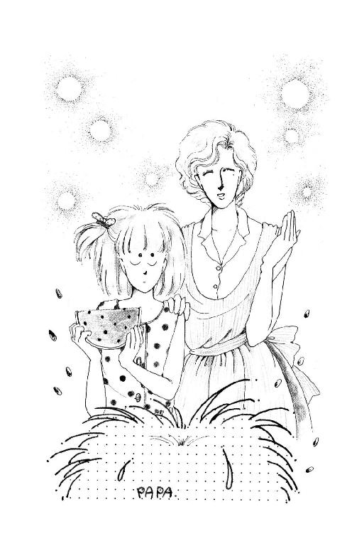
「おっ、おっ、女の子だけで、蛍狩りなんて、ずぅぇっとわいに、いかんっっ!!」
「でも、あなた」
しぱしぱ目をすぼませながら、ママが言った。
「未来がせっかくこんなに楽しみにしているのに。それならあなた、連れていってあげてくださいますの？」
「わしが？」
シャコシャコシャコシャコッ、とスイカを囓っていたパパは、ずっ、と頭をあげた。ほっぺたからほっぺたまで、べちょべちょになってる。
「やだっ!! わしははっきり言って夜の川原なんて嫌いだ。怖い」
「じゃあ、そんなむげに」
「でも蛍狩りってことは、絶対に夜なんだぞおまえっ!!」
「そんなことわかってますよ」
「お......お......おまえはなんて冷たい母親だ!!」
ママが手渡したタオルで、ザザッ、と顔を拭いて、パパはああ、って嘆いた。
「この暑さで気が変になったヤツが、川原のくさむらにひそんでいて、かわいい無邪気な女の子がホタルに釣られて寄ってくるのを、今か今かと待っているのがわからんのかっ!!」
ふうっ、てママが息をついた。
選手交代。
「だけどパパ、女の子って言ったって、全部で六人もいるのよ。それに、この季節だもん、ご家族連れのかたとかけっこう大勢来てるから、そんな怖いことないって」
あたしはなるべくにこやかに言った。
「麗美さんも加奈子さんも、そういうことなら是非参加したい、って、わざわざ東京から来てくださるのに。いまさらあたし、行かないなんて言えないわ」
「なに、もう決まってるのか!?」
パパは甚平さんの胸もとを、団扇で扇ぐ手を止めた。
「パパに相談もなしにかっ!!」
「だって、早くお話しておかないとみなさん予定もあるし」
パパはムッ、としてしまって、パタパタ激しく団扇を使いだした。
あ～あ。
まさかパパがこんなに反対するなんて思ってもみなかった。
うららのぶんまで、宿題の『わたしの尊敬する人物』、原稿用紙五枚も書いたの、ムダになっちゃうのぉ？
「......未来」
ふくれてると、パパがあたしを呼んだんだ。
「なに？」
「ほんとうのことを言いなさい」
「え？」
「ほんとうは、それだけじゃないんだろう!!」
「な、何が？」
「トンネルでさえおっかながる気の小さい未来が、わざわざ夜の川原に行きたいだの、ホタルが見たいだのと言い出すのはおかしい」
「はぁ？」
「ふっふっふ、うまいこと考えたもんだな。実はホタルは口実なんだろうっ!! ホタルなら夜じゃなきゃいけないわけだ。ほんとうは女の子だけのはずはない。未来は、未来はどうせ、何か悪い本でも読んで、男の子と出かけるつもりなんだろうっ!! どうだっ!! まいったかっ!! 親の目を欺こうなんてそーはいかんのだ、はっはっは!!」
「あなた」
あたしが口を開くより早く、ママが怖い声を出した。
「な......なんだ」
「あなた、このごろ少し変よ。あなたこそ、なんかいかがわしいものでもお読みになったんじゃなくって？」
「いっ......いかがわしいもんん？」
ぐっ、とパパは詰まった。
「そんなこたぁないっ!!」
でも、お顔が真っ赤になっているよぉ。
「未来がどうしてわたしたちに噓をついたりするの？ この子はそんな子じゃありません」
「ママ......」
ママは、まかしておきなさい、っていうようにうなずいてくれた。
「だいたいね。悪いことしようと思ったら、あなたやわたくしに『行ってもいいか？』なんて尋ねます？ それを。あなたみたいに疑ってかかったら、この子だって、これからは、パパが反対しそうなことははじめから内緒にしよう、って思ってしまいますよ。せっかく正直に、素直に育ってきた子よ。どうして信じてくださいませんのッ!!」
「......でも......あのな」
パパはムウッ、と下唇を突き出した。
「だが、やっぱりその......とにかく、女の子だけで夜歩きするなんていうのはだめだっ!! 危険だ!! エゴだなんだと言われても、わしは、やだっ!!」
「わたくしもそう思うわ」
「......えっ？」
そんなの話が違うじゃないっ!!
思わずべそ顔で見ると、ママはにっこり笑ったの。
「ですから、イエモトさんたちに、ボディー・ガードをお願いしようと思ってますの」
「え───っ!!」
パパとあたしの不協和音の中で、ママは涼しい顔をしていた。
「あらだって、彼等が行ってくれれば安心じゃありません？ 頼りになるし、とってもいい子たちですもの」
「いい子って、そりゃ......そりゃわしだってイエモトくんたちは好きだけどもねぇ!! でもほら、なにも親であるわしらから、どーぞどーぞってけしかけなくったって」
「別に何もけしかけてなんかいませんわ」
「だがねー!!」
「ねぇあなた。あたくしがあなたに逢ったのは、十九の時だったけど。うちの父が、あなたのこと、毛虫みたいに嫌ってたのいやだったでしょ？ ろくに話したこともないのに、頭から認めない姿勢は許せないっ!! って、よくお腹立ちでしたわよねぇ」
「......英子ォ......」
パパは情けない声で、めずらしくママの名前を呼んだ。
「おまえねぇ。それは、それはあまりにカッコ良すぎない？ わしひとり、わしひとり、理解ない父親で。おまえだけ点数稼いで。なんかすごーく気分悪いんだけどね」
「ごめんなさい、あなた」
ママはペロッ、と舌を出すと、隣に座ってるあたしに向き直った。
「未来。イエモトさんたちにお願いするの、いや？」
「......そりゃ、うららも行くんだし、大勢のほうが安心かもしれないけど......」
麗美さんがいらっしゃるのに、朱海さんもいっしょなのぉ......？
だいたい、あたし、バートさんを追いかけた時、仲間はずれにした、って、ついふくれちゃって以来、朱海さんと口きいてないんだもん。
話しかけてくれたのに、返事もしなかった時以来、逢ってない。
別にわざとじゃなくて、本気で怒ったわけでもなくて、ちょっとすねただけなのに。朱海さんひとりさっさとバイクで帰っちゃったし、その後機会もなかっただけなんだけど......時間がたてばたつほど、気まずくなってきちゃった。
はやくあやまればよかった。
うららとちがって敏感なひとだから、あの時あたしがおもしろくない顔してたこともわかってるだろう。その気分のまま無視してるんだ、って思ってるかもしれない。すぐプリプリ機嫌悪くするワガママな子だ、って軽蔑してるかもしれない。
なのに、いきなりそんなこと頼むの、気が重いなぁ......。
「ママね、もちろん女の子のおともだちも大切だと思うけど。未来はこれまでずっと、女のひとしか好きじゃなかったでしょう？」
「............」
「葉山にくるまでは、男の子のおともだちもいなかったじゃない。そういうの、ママほんとはちょっと心配だったんだ。だって、未来には偏った子になってほしくないもの。おとなになってしまうと、いろんなひととおつきあいするのって、なかなか難しいわ。主婦なんてなおさら。男ともだちを見つけるなんてこと、まずできない」
「おい......おまえ......!!」
パパは指の先でカリカリ、テーブルをひっかいた。
「ママはパパみたいな素敵なひとと結婚したからいいけど」
パパの指が止まった。
「未来にもちゃんと、素敵な旦那さま、見つけてほしいもの。そのためには、男のひととも、恋とか愛とか、彼とか彼女とかいうことになる前に、まず、普通に、自然に、おつきあいしておいたほうがいいと思うの。せっかく楽しいこと思いついたのに、どうして彼等みたいな素敵なＢＦといっしょに行かないの？ ママ不思議だわ」
「......ママ......」
なんだか、胸のあたりがくしゅくしゅした。
「......ぐぐぐっ......」
カエルが鳴くような声に振り向くと、パパが鬼瓦みたいな顔で、肩をひくひくさせていた。
「未来は......未来はもう、そんな年なのか......？」
「......あなた」
「うるさいっ!! だって、だって......ありゃ、ついこないだだよ。ちいちゃかったのは......こ～んなちいちゃかったのは。パパといっしょじゃなきゃお風呂はいったげない、って......こまっしゃくれた顔してなぁ。わしが寝てるとさぁ、プドデスだプドデスだって、登ってきて、よく嚙みついたんだぞ～！ ウサギのラビちゃんの帽子が欲しいってさぁ、買ってきてやったら、パパがくれたお帽子、幼稚園にもかぶってくんだ、って強情はって......玄関に座りこんでこ～んなでっかい目涙いっぱいにしてさぁ......そりゃぁもう......そりゃぁ、かわいかったんだぞぉ......」
への字に結んだ口の上、ハナミズが光ってた。
「それがもう......もう、パパだけじゃだめなのか。ムコのことなんか心配しなきゃいけないのか......？ ......スン......くそ。わしは寝る。寝るぞっ!!」
ガタガタンッ！ と椅子をずらすと、パパはお台所を出ていった。
しばらくしてから、遠くで、ビィ──ッ!! って、鼻をかむ音がした。
「......まだ八時なのにねぇ......」
つぶやいたママも、エプロンでそっと、目を押さえた。
「とにかく。蛍、いっぱいいるといいわね！」
「......うん」
蛍、取って来ちゃいけないって、わかってるけど。
一匹だけ、一匹だけでいいから、連れてきてパパに見せよう。
そして、お庭にはなしてあげたい。パパといっしょに。
「そっち焼けたよぉ。ひっくり返してくれー!!」
エプロンつけた総シェフ、朱海さんの声。
「ほーい......ゴホゴホゴホ」
「だいじょうぶですか？ お水、いります？」
すごい煙をもろに浴びてむせかえりながら、串ひっくり返してるカズホさんに、せっせと世話をやいているのは。
なんと、金魚柄の浴衣のトコなのおぉ!!
「あら、こんなところにタマネギが。ちょっとこちら、向いてくださいな」
「いや、いいですよ、このぐらい」
「でも」
ヤキソバ係のタカシくんのおでこにはりついてしまったタマネギを、おしぼりで拭いてあげてるのは。
それが、杉丸なんだよねー。波模様の大人っぽい浴衣に、いつもの三つ編みをちいさくシニヨンにまとめてしまってやけに大人っぽい。
とうとう蛍狩りの当日。
赤平川原に出かける前に、ともかく腹ごしらえ、っていうんで、うららんちの裏庭、懸垂の時お世話になった鉄棒のあるあたりに、レンガ積んで火を起こして、バーベキュー・パーティーをしているの。
十何人も集まってワイワイ、がやがや。お肉やエビやホタテ貝、コーンやトマトやピーマンやその他いろんなもの焼けてはぜる音もするから、隣のひとの声も時々よくわからない。
その中で。
「いやー豪勢ですなぁ」
ひときわ大きな声でがはがは笑っているのは、うちのパパ。
やだなぁ、もう真っ赤じゃないの。恥ずかしい......。
ちょっと離れたあたりに、デッキ・チェア出してもらって、うららのおとうさまとふたり、いいご機嫌になっちゃってる。
うちのママとうららのママは、あまりに凄まじい煙に音をあげて早々とお家にはいってしまったものだから、オジサンふたりで差しつ差されつ。
「いや、やはりいいですなぁ!! 夏のビールとバーベキュー。最高ですな。しかし、本日はなんですか、うちの娘が変なことを言い出しまして、すっかりご迷惑をおかけしてしまって。その上こんなご馳走になるなんていや、申しわけありませんなぁ!!」
「まあそうおっしゃらず」
うららのおとうさま西在家杠隹氏は、渋い着流しの手を伸ばして、うちのパパのジョッキにビールを注いでくださってる。
「うちの倅やじゃじゃ馬が、しょっちゅうそちらさまにお邪魔もしていることですから。ここは無礼講でいきましょうや、無礼講で。ねぇ!!」
ほんとのイエモト氏は、パパに負けないくらい大きな口をあけて笑ったかと思うと、お派手に泡を撒き散らしながら高々と乾杯して、ぐひ──っ、とあけた。
「ハーイ、ミック!! レミサン。こっちこっち。スマイル。オオ、ビューリフォ」
パシャッ!!
「サンクス!!」
今日はビデオじゃなくて、普通のカメラを持ち出してるバートさんは、何を勘違いしたのか銀座で見つけてきたっていうお祭りはっぴ姿ではしゃいでる。
「ミシェル、ほんとによく似合うわ」
夕焼け色のサマー・ドレスの麗美さんが、コーラ片手に微笑んだ。
「ありがとうございます」
ちなみにあたしの浴衣は、白地に紺のほおづき柄。実のところだけ真っ赤なの。
「このあいだは素敵なお菓子ありがと。おいしかったわ」
お洋服のお礼に、せめて、ってお送りしたんだ。
「それに、今日も。蛍狩り楽しみね」
それはそうなんだけど。
「......あの......」
思いきって言いかけたつもりだったけど、やっぱり言えない。
「ん？ なあに？」
あたしはサッ、と視線を走らせた。
あたしたちのななめ前。煙の向こうで、加奈子さんが幸福そうに笑ってらっしゃる。幸福そうに『あ、だめじゃない。お醬油こぼれてる』とか『エビ美味しそう。取ってくれない？』とか......ひとりの男のひととばっかり、話してらっしゃるのっ!!
松本さんって、大学生のひとと！
「千葉のことか......」
麗美さんは、お辛そうな目でそっとあたしをごらんになった。
「どうもミシェール、さっきからうわのそらだと思ってたわ。......でも......悪いんだけど、あんまり気にしないでやって」
「で、でもっ!!」
「もう少しみなさんにとけこむように、注意しとくから」
そういうことじゃっ......。
視線を感じて、ちょっ、と目をあげると麗美さんの正面、さっき紹介されたもうひとりの大学生さん、たしか君塚さんとかいうひと。目尻いっぱいに笑いじわ作ってる。あたしたちの話、聞いてたな!! ......ふ、ふんっ!!
笑ってるヒマじゃないでしょ!! いくら大学生だからって。お客さまだからって、ちょっとはカズホくんたちと代わってあげたらどおなの？ 食べて飲んでばっかでさ。
あたしたちがサボッてるように見えるのは、朱海さんが『バーベキューは男の料理です。まかせなさい』って宣言して、作らせてくれないからだもん。それだって、食べた後の串とかコーラの空き壜とか、ちゃんと運んで手伝ってるわ。
......そうなのよ。
加奈子さんったら、加奈子さんったら、男のひと連れてきたんだよーっ!! それがふたりもぉっ!! っていうか、男のひとに車で送ってもらって来たんだよぉ──っ!!
そりゃさ。朱海さんたちが参加することになったでしょ。男のかたがいっしょだなんて聞いてなかったわ、なんて後から言われると困ると思って、一応お電話したよ。
だからって、そちらもそちらで男のかた連れてらっしゃるおつもりだったら、ひとこと、前もって言ってくださればよかったのにぃ!!
あたしはいいよ、あたしは。
加奈子さんはそういうかただってこと、なんとなく知ってたし。麗美さんは、どちらの男のかたとも全然口きかないし、迷うことなくあたしの隣に座ってくださった。
ツー・ペアでいらっしゃった時には、ひょっとするとひょっとするのかって目の前が真っ暗になったけど、やっぱり麗美さんは麗美さんよ。あたしはほんとうに神さまに感謝したけど。
かわいそうなのは、トコと杉丸。
トコは、宿題いっぱい残ってるのにって文句言いながら、電車乗り継いでわざわざ来てくれたし、杉丸は杉丸で、夕方うちに来て以来、ああ、ミシェール、とうとうわたし、加奈子さんにお目にかかれるのね？ 夢じゃないのね？ って、何度もあたしに腕をつねらせては、
「あ......痛い......痛い、嬉しい」
って恍惚とした表情浮かべていたんだよ。
そのふたりが、なんでこんな、こんな辛い目にあわなきゃいけないの!?
だって。松本氏なんてどうみても加奈子さんと、ただならぬ関係の感じだわ。だいたい最初から、ひじょーに過激だったのよね。登場のしかたからしてさ。
空色のベンツ、門の前に横付けだよぉ。そんでもって、そんでもって、助手席の加奈子さんのこと、ちゃんとぐるっと回ってドアあけて下ろしてあげて。いかにももの慣れたその気障なしぐさに、既にお庭で、おふたりのご到着を待っていたトコ、杉丸、あたしは、思わず顔を赤らめてしまったぐらいだったんだから。
それから松本氏は、前もって加奈子さんに教えられてでもいたのか、まっすぐにわたしのとこに歩いてきた。清涼飲料水のコマーシャルみたいなあっかるい笑顔うかべて、巨大な花束を差し出した。
「やぁ、こんにちは。突然参加希望者なんだけど、受付はこちらかな？」
って。
いちいち、かっこつけるな！ って言いたい。
花束は、バラとガーベラとアルストロメリアとかすみ草、羊歯やら棕櫚やらの葉っぱもなまじっかじゃなく自己主張してる大変なしろもので、リボンときたら、赤・黄・オレンジ・銀・ピンク、色とりどりのをぐわんぐわんに巻きつけたお派手極まりないもの。
あっけにとられて、はぷはぷしてると、加奈子さまがにこやかに助け舟を出されたわ。
「ごめん、ミシェール。びっくりした？ 帰りのこと考えたらね、やっぱり車のほうがいいと思って、頼んじゃったの。こちら松本くん。それから君塚くん。ふたりとも慶鳳大学の自動車部だから、ドライバーとしては最高よ」
「ご用命の節は、どうぞよろしく」
サザエの殻みたいな大きな手を、サッ!! と出されて、思わず握手してしまったけども。
今では後悔しているわ。茫然としすぎて、まだ、頭の整理ができてなかったのよ。
ふりはらってやったってよかったのに。あたしは、その直後、うららんちまでの道を教えるために、問題のベンツの助手席にさえ乗ってしまった。
カーブでふりむいたら、後から道の真ん中近くをとぼとぼ歩いてくるふたりが、とっても小さく見えた。ふたりは西在家さんちの岸田さんが出してくれることになってた車を、わざわざ断ったんだ。
こっちについても、ふたりとも暗かった。ずーっとうつむいて、黙りこくってた。
と、思うと、バーベキューがはじまるやいなやそれぞれカズホさんとタカシさんのとこに飛んでって、わざとらしく世話焼きはじめた......。
痛々しいったらない。
こうなったら加奈子さんに直接、ことの次第をお話ししなきゃいけないと思うんだけど......松本氏、ちっとも離れてくれない。
そうでなくとも、後輩の身分で、偉そうなことを言うわけにもいかないし......。
ああ、頭痛い。
こうなったのもみんな、きっと、あたしの電話のしかたが悪かったんだ。発案者としても、みなさんに楽しい時間を過ごしていただく責任がある。
やっぱり、言おう。
松本氏はしかたないから、せめて、みんなが聞いてない時にきっぱり、言おう。
トコと杉丸は加奈子さんに逢えるのを楽しみにしてたんだから、ひとりじめしないでください、って......そのくらいの言い方なら、きっと笑ってわかってくださる。
よ～し......言うぞ。言ってやるっ!!
そのためにはまず、とにかく、体力だわっ!!
「あ、ミッキー!! それはまだ生焼け......」
タカシさんが止めた時にはもう、あたし、血のしたたる牛の塊にがぶっとばかりに嚙みついていた。
「え、肝試しじゃなかったの？」
じゃ、行こうか、って、みんなでぞろぞろ西在家さんちを出たのは、もう七時半だった。
風に吹かれてざわざわ揺れる森の道を下ってく途中で、例の明るい口調で、松本（もう呼び捨てよっ!!）が、な～んだ、残念、って感じに言ったのよ。
ううう。なんでもいいけど、もうちょっと、加奈子さんから離れてよっ!!
「あ、いいねー。肝試しかぁ。そういう手もあったんだ」
と、うらら。
この子はまったく、この子はまったく、事態がどんなに困窮を極めていても、なーんにも感じないのよ。今日逢ったばかりのずーっと年上のひとを相手に、さっそく敬語抜きでしゃべっちゃってるっ!!
ひとみしりしないにも程があるわ。松本ったら、『ありますよお!!』なんて、ますます調子づいちゃってるじゃないの!!
「だからさ。......えーと、うららちゃんだっけ？ ねぇ、今から肝試しに変更しない？ せっかくこんなにかわいい女の子がいっぱいいるしさ。公然と抱きつけるチャンスだと思ってオジサンは楽しみにしてたんだぜー」
「抱きつかれるチャンス、じゃないの？」
と、あくまでにこやかな加奈子さん。
「抱きつくほうが趣味でね」
「だめだめだめっ!! 健全な蛍鑑賞の集いですっ!!」
あたしはここぞとばかりに松本と加奈子さんの間に割り込んだ。ピシッ、と釘を刺しておかねばっ!!
なのに、松本ったら。いやみったらしく笑いながら、
「じゃなんで、こうぴったり、男女の数が一致しているの？」
う、......うそっ!! 数なんか合わせてないもんっ!!
ま、待てよ。トコと杉丸は形の上だけだけど、カズホさんとタカシさんにくっついてるでしょ。加奈子さんが松本だとすると、麗美さんは立場上きっと君塚さんとお組みになって......。
わぁぁっ!! ほんとに合ってる!! でもって、でもって、この組み合わせで行くと余ってるのって、あたしとうららと、朱海さんとバートさんじゃないのよー!!
「うらら、うららちょっと」
「あによ」
「肝試しなんてやだからね。絶対にやだからねっ!!」
あたし困る。あたしそれってすごーく困る。
あたしまだ、あたしまだ朱海さんと仲直りしてないのよ。だって、ほら、今日はほかにいろいろあったし、朱海さんもシェフ長で忙しそうだったし......でも、かといってバートさんと、なんてことになったら、また、何をされるかわからないじゃないかぁ!!
「はぁ？」
一瞬ポケッ、としたかと思うと。うらら、ひっひっひ、って品悪く笑ったんだわ。
「そーだあ。ミッキーってとっても怖がりだったよねー」
え？
やだ、ちょっと、何考えてんのよっ!!
「みんなー、怖い話しよっかぁ!!」
ひ～～～～ん！ こ、こ、こんな暗い、こんな外でえっ!?
......で、でもそうだ!! みんなが話に夢中になってるうちに、加奈子さんにちょっと耳打ちするチャンスだってあるはずだし......。
と思ってると、さっそく松本がひきとった。
「あ、いい、いい。やろうやろう。ほら加奈子ちゃんさ、あの話しちゃえば？」
な、なにっ？
「あらそおお。それじゃあたし、話しちゃおうかしら？」
「ぎゃあ!! やめ、やめ、やめてくださいぃ」
あたしそれ、あたしそれ二重の意味で困る!!
「あら、ミシェール、楽しそうじゃない」
ぎらぎら光る目で、トコが言った。
「加奈子さんのお話、聞きたいわ。ね、杉丸」
「そうね。是非聞かせていただきたいわ」
杉丸、寄り目になっちゃやだー!!
「ほらほら。加奈子ちゃん。リクエストだよ」
なんもわかってない松本が、いかにも気安く加奈子さんの肩に手をかけると、トコたちはギロッ!! と目を見合わせて、ぎりぎりっ、と歯を鳴らした。杉丸なんか、額の筋がぴくぴくいってる。
これだけで、もう充分怖いよぉ!!
「じゃ、話すわ。あのね～～～～」
ひ～ん......もうあたし、知らないッ!!
「あたしの友達のね～～～～けっこう霊感が強い子がいるのよね～～～～。その子がさ～～～～、ある時、別の子に電話かけてたら～～～～ふうっ、と背中が寒い感じがして～～～～。あ、これはいるなあ、ってそおっとふりかえると、いたんだって......ゆ～～～～れい......」
わ～ん!! わ～ん!!
「......そしたらね、電話の相手が、『あら、そっちも？』って言うんだって。実は、そのひとはもっと強い霊能者でね、『ごめんごめん、このひとうちの前の道路で交通事故に遭っちゃったひとで、よく来るの。電話線通じてそっちまで行っちゃったのねー』」
「わはははは!!」
誰か男の子が笑った。
あーよかった。
思ったほど怖くなかった。このチャンスに。
「加奈子さん、加奈子さん」
必死に呼んでるっていうのに。
「あら、これがオチじゃないのよ。聞いて」
だめだ。加奈子さんすっかりノッちゃってる！
「『で、おたくのほうで、彼どっち向いてる？』って言われて、あたしのともだち『あら、どして？ こっちから見えるのは顔の左がわだけど？』って言ったの。そしたら。『よかった。きっとおたくは初めてだから、まだ羞恥心があるのね。実はこのひと、事故の時の傷で顔の右がわは、ぐちゃぐちゃの血まみれで、肉はめくれてるし、目玉は半分流れ出てるし、はっきりいって脳が露出してるの。あなた見えなくてほんとによかったわぁ～～～～』って......」
ははははは...は......は（ゾワッ！）......。
......だ、だ、だめだ......つい想像してしまった......ううううう......。
え～ん、こ......怖いよぉ──っ!!
もうやだ。もう加奈子さんなんて嫌いだ。
逃げよう。麗美さんのそば行こう。
そおっと、そおっとポジションを変えようとしてたのに。
「ミック、ミック。ちょっと」
途中でバートさんに捕まってしまったの!!
「な、なに？」
「日本ゴーストの頭に立ってる三角の旗、あれなに？」
あ...あははは...はは。
「いや、あのね、あれは」
「なにしろ、日本のホラー・ムービィは凄いからなぁ。ぼく、ノブオ・ナカガワの四谷怪談なんて、サイコウ好き。でも全体的に言うともう少しバリエーション欲しい。だいたいいつも、キレイな女のひとが『ウ～ラ～メシ～～～～』って頭に旗たてて白いキモノで出てくるでしょう」
「でも、それは映画だからよ」
涼やかな声で麗美さんがおっしゃった。
「あたくし、ほんものを見たことがあるけど、違うかっこうだったわ」
......!! れ、麗美さんまで麗美さんまでっ......。
「え～～～～っ!!」
「ほんと、麗美さん!?」
「ええ。蓼科の別荘のばあやが亡くなった時......あたくしの枕元に来て座ったわ。やけに豪華な振り袖に、絣のエプロンをしてね。あたくしと姉が、その年のお誕生日に贈ったばかりのエプロンを」
や、や、やだ......こんどは最初っからリアルじゃないの......っ......。
「後でいろいろ聞いたら、その振り袖はどうも、ばあやがお嫁入りに持ってきて大切にしてたものだったらしいの。でもそれは、戦争の時、食べ物に変えてしまって、もうなかったのよ。エプロンのほうはね、ほんものが、新しいまま簞笥にしまってあったそうよ。生前は大事がって、結局一度も使わなかったのね。......だからね。きっと、亡くなったひとは、自分が一番着たいと思うものを着て、幽霊になるんじゃないかしら？」
うふふ、って麗美さんはかわいらしくお笑いになった。
しばらくの間、山道を歩く十二人の足音だけが聞こえてた。
「と、いうことは」
杉丸の声が殷々と響きわたった。
「つまり、うーんと誰かを恨んでいて、呪いたいとか崇りたいとか思って出てくる時は、伝統的にあのお棺にはいる時の衣装が効果的だと選択した結果なのかもしれませんね」
.........（ううう）............
「じゃ、おバケも着替えるのかしら？」
「おっ、それおもしろい。そーだよな、大体霊体なんだからさ、なんでも好きなかっこして出てくりゃいいもんな」
「ねーねー、武道館なんてさ、よく、ファンだった子のおバケが寄ってくるっていうじゃん。ヘヴィ・メタとか、フュージョンとかその日のコンサートに合わせて決めてくるのがいたら、傑作だね」
「あ、それ、いい!! ウーム、このアイディアはまだルーカスも気づいてない」
「でもやっぱ真夏の暑い日は、納涼省エネのためにも正統経帷子にしといて欲しいな。クリスマスにエントツに詰まって死んだアホがサンタクロースのかっこで出てきてみ。はっきりいって爆笑だぜ」
そ、そ、そんなこと真剣に討論しないでよぉ!!
あたしはやだ。やだからね。ロックおバケだろうと、オーソドックスなヒュードロドロだろうと、見たくない。一生お逢いしたくない!!
だいたい、だいたい、この道嫌いだ!! 頭の上いっぱい木が覆ってて......そよそよそよそよ動いてて、なんだか何十何百もの手が、おいでおいでしてるみたいじゃないよぉ～......。
かく。かくかくかくん。ひ、膝がおかしい。ちゃんと歩けない。
うらら、うらら、ちょっと手をつないで......。
「大丈夫？」
えっ......？
「ほら、ちゃんとつかまって。捻挫したばっかりなんだから。下駄は危ないよ」
「あわわ、あわけみさんっ!!」
い、いけない、あたし、朱海さんの腕につかまっちゃったぁ!!
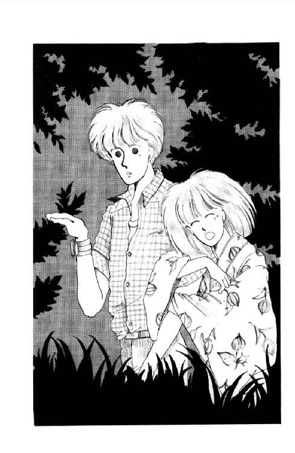
あわててはがそうとしたけど、離れない！ しびれたみたいにくっついちゃってるよぉ!!
「霊能者って言えばさ。だいたい、おバケの話好きなひとって、霊感、とまでいかなくても、その気があるっていうじゃん」
ぎゃあ!! またはじまった!!
松本のバカぁ!!
も、い。も、なんでもいい。朱海さんでいい。
......くすん......あったかい。こうしてると、少しは、少しは安心のような気もする......。
だいたいね、だいたい、ふんっ。そうよ。へいきよっ!! 怖い話を聞いたからっておバケの話聞いたからって、実際におバケが出るわけじゃないもんっ!!
「幽霊話したくなる時ってのも、近くになんかいるんだってね～～～～」
う、うそぉっ!!
「そうさ。幽霊なんて寂しいもんさ。誰にもかまってもらえないだろ。だからたまに自分のことが話題に出ると、ああ、嬉しい、理解者がいる!! てんで、つい、ほいほい出てきちゃうとか......ほらそこにっ!!」
「ぎゃああっっ!!」
な......懐かしいことしてくれるじゃない......。
なのに思わず、思わず叫んでしまったわ......ふぇ～ん、涙まで出ちゃった。
「もう、やめてくれませんか。すごく怖がってるひともいるし」
あたしの背中、トントン叩いてくれながら、朱海さんが言った。
「そうね」
あの凄味のある声は杉丸だ......!!
「興味本位で話題にしたりすると、この地に住む何十年何百年の死者の魂の怒りがくだって、それこそ、おそろしいことがおこるぞよぉぉぉ」
も、もうやだあ!!
......ど......どうにか......ほんとに、どうにか、赤平川の流れにたどりついたわ......。
ここまでぶ、ぶじだったんだもの......もー出ないわよね。出ないわよね。
わ～ん!! へたにこんなこと考えると、かえって『そんなら出てやろうじゃないか』なんて思われてしまいそうだよ～!!
お願いします!! お願いしますから、幽霊さま。おバケさま、妖怪変化のみなみなさま。どうか今日のところは来ないでください～～～～!!
あれ......な、なんだろ......あっちのほうで何かぼうっと光っ......。
......ひ......ひ......ひとだまさん......です・か......？
「あ、いたっ!!」
誰かが叫んだ。
うわあっ!!
あたしは必死に目を閉じたわ。
も、だめ。も、だめ。見たら一生忘れられなくなる。夜なんかとてもじゃないけど、ひとりでトイレに行けなくなる。膀胱炎になって、腎臓結石になって、あたしまで幽霊さんになっちゃう!!
そ、そしたら、ううっ。松本さん。
あたし絶対、あたし絶対、あなたのとこに化けて出てやるから覚えてらっしゃ......。
「未来ちゃん、お待ちかねの蛍だよ」
へっ？
目をあけると、朱海さんがほら、って指さしてくれた。
細い川のせせらぎの向こうの、思い切り茂った草の中に、ひとつ、ふたつ......みっつ。あ、よっつ!!
ほ、蛍って......蛍って、あんな、情けなく、ぼやーっと光るもんなのぉ？
でもさ『蛍の光、窓の雪』って、昔のひとはお勉強したぐらいなんでしょ？ こんな頼りない光りかたじゃ、とてもじゃないけど読書なんかは......。
「おーい!! こっちにいっぱいいるよぉ!!」
先のほうで、うららが手を振っていた。
「もう、大丈夫かな？」
「......え......ええ......」
川のそばは、森の影の落ちている道と違って、幅があるだけに月明かりで充分明るい。いつまでも腕につかまらせてもらってたことが、急に恥ずかしくなってきた。
「ごめんなさい！ どうもっ!!」
こんどは放そうと思ったらすぐに手が離れた。
朱海さんにおじぎして、小石に下駄の足をとられないように気をつけながら、丈の高い草のひとむら、ぐるっと回って越えて行くと。
......わぁ......!!
土手に続く草の原いっぱいに、柔らかくまあるい光が漂ってる!!
小さなせせらぎを挟んで、小石だらけの川岸がほのかに白く月に映えている。ところどころに茂った草が、丈のぶんだけぼうっと明るくなって、微かに明滅してる。
ただの蛍の群れだってこと、頭ではわかっているのに。
見つめていると、だんだん、知らない国に迷いこんでしまったみたい。誰か知らないひとが描いた不思議な絵の中に、すっぽり入ってしまったみたい。
絵の中を、少年のようなシルエットのうららが走っていく。うららが追いかけると光の輪は、すうっ、と逃げたり、止まってみたり、くるくる踊ってみせてくれてる......。
あたしも、行こう!!
少し上流に登っていくと、蛍めあてのお客さんが何組か先に来ていた。
坊やを連れたおとうさん。おばあちゃんや、おじいちゃん。こどもたちを何人もひきつれた、ガキ大将風の男の子。
おばあちゃんの団扇の上に、ちょっとぶかぶかの浴衣を着た小さな女の子のピンと跳ねたちょんちょりんこの上に、誰かが落としてしまったキャンディーの上に、音もなく点っては消える小さな光が、そっと息づいている。
せせらぎは浅くて、やんちゃなこどもたちが、陽に灼けた足をふくらはぎまで浸してる。
誰かがパシャパシャ、水を撥ねらかしながら歩いていくと、水に映った月が笑ってるみたいにゆらゆら揺れた。笑ってる月の上を、群れからはぐれたひねくれ蛍が、すうっと一匹渡っていく。
「......きれぇ......」
すぐ横で声がして、見ると、トコが蛍につられて首を動かしながら、輝く目をして立っていた。
「トコの目もきれい。いっぱい、蛍が映ってる」
「え？ あ、ほんとだ。ミシェール、あんたのも」
ふふふっ、て笑ったトコの顔が、ふいに曇った。
その視線の先をたどると、加奈子さんと麗美さんが、川のほうに歩いていく。川っぷちで立ち止まった加奈子さんがサンダルを脱ぐのを、松本さんがいかにもあたりまえみたいに支えてあげている。
怪談のせいで、話をつけるの忘れてた!!
「あたし、ちょっとひとこと言ってくる!!」
「やめて、ミシェール......」
「だってあんまり」
ため息まじりにふりかえると、トコがすうっ、と倒れこんできた。あわてて支えると、あたしの肩にくっついたトコの頭が、小さく小さく震えだした。
「......トコ......」
「ふぇ～～～～～～～～ん！」
食いこむ指が痛かった。浴衣の胸がひっぱられてはだけそうになった。
「やっぱり、行ってくるよ」
「......ぐす......い、いいよっ!! いいんだってばっ!!」
「............」
「へへっ」
あたしの浴衣に顔をこすりつけて、トコはくすん、と鼻を鳴らした。
「いいよっ！ ふふふ。ふふ。だってさぁっ。加奈子さんみたいな素敵なかたが、男のひとに好かれるのは当然じゃないの、ねぇ？ モテないひとだったより、ずっとずぅっと、いいよねぇっ？ いいよね？ ......すん......あたしちゃんと、あたしちゃんとわかってた。前からいつか、いつかきっと、こんな日が来るってこと、わかってたもんっ!!」
でも、来ないかもしれなかった。学校では加奈子さん、いくらなんでも、ああいうおふるまいはなさらないもの。卒業なさるまで、トコにとっては、これまでずっと好きだった加奈子さんのままの加奈子さんでいてくださるはずだった。
なのに......。
「ごめん......ごめんトコ......あたしが、みなさんといっしょに蛍が見たいなんて言いさえしなければ......」
あたしが悪い。あたしが悪い。
「なにおバカなこと言ってんのよっ!!」
あ。突き放された。
「あんたなんか、ちゃっかり西在家さんちのお兄さんにしがみついてたくせにっ!!」
......わ～ん！ 言われた!!
「......ごめん......でもあれは、あれは」
「おバカ。なに焦ってんのよ。言ってみただけじゃないよっ!!」
「え？」
「あんたのこわがりはあたしよく知ってるよ。それにさ。こんなきれいなとこに来れたのはあんたのおかげじゃない。へんだ。ちゃんと感謝してます！ ゴチャゴチャひねくれるようなトコちゃんじゃないよ!!」
「......（ふぇ～ん！ トコォ）......」
「......あ、それにさ、あの杉丸ってひとおもしろいねー。あのひとと逢えたのも、今日の収穫だったわ」
「はははは......いや、あのいつもはもう少し普通なんだけど......」
今日は過激の極みだった。
「なんで？ いいひとじゃない。ジョークも鋭いし」
だから、あれはジョークじゃないんだってば。
「あの子、華雅高校受験するつもりなんだって？ いろいろ教えて、っていうから、手紙書く約束しちゃった。あ......でも、だからって妬いちゃだめよ!! あんたとの愛はまた特別なんだから」
「妬きはしないけども」
「ならよかった!! ほらほらっ!! 元気だしなって！」
わ～ん。どっちが慰めてるんだ～!!
「どぉしたどしたっ！ ......あ。ホタルだぁ!!」
「何をいまさら......えっ？」
トコが指したのはあたしの袂。
ほんとだ!! ぼうっ、と光ってる。迷いこんじゃったんだ!!
「わぁ......おドジな子!!」
「でも、素敵、すごい偶然」
ふわふわ動いて、ほおづきの実の柄のところで、ちょっと止まって。
わぁ。朱い実がひとつ、ぽーっ、ぽーってまたたいてる!!
あたしとトコは、おドジな蛍びっくりさせないように、そおっとそのまま、動かずに、しばらくそのまま見惚れていたの。
......きれい......。
蛍って、こんな小さな虫なのに、光ってるよ。動いてるよ。
きっと、そんなに長生きできない生物だと思う。飛ぶことと、光ることと、たぶんあと少ししか知らないと思う。
だからきっと、だからきっと、こんなにあったかく光るんだね。だからひとは、昔からずっと夏の一夜を、この光を見に来ることに使ったんだね。
「ねぇ、見て。すっかり落ち着いて腰を据えちゃってるよ。ミシェールの腕がよっぽど気にいったのかな？」
「やだぁ」
笑っていると。
「なあに、なあに？」
「どうかしたのぉ？」
うららと杉丸が寄ってきた。
「見て。これ」
「うわぁ............」
「げっ、忍び込んできたの？ スケベ！」
「あのね......」
「わはははは。ミッキーったら、蛍に夜這いされてやんのぉ!!」
うららに詰め寄ろうとしたあたしを、トコがあわてて引き止めた。
「ね、もっといっぱい光ってるとこ歩いたら、もっと入らないかな？」
「そうね!! あたしの浴衣にも来るかしら」
「杉丸にねぇ......蛍にだって選ぶ権利が......あ、いやいや、こう、胸元かなんか、ガバッ、とあけてやってみたら？」
「うららっ!!」
「わ～い、ごめんよ。ジョーダン、ジョーダン」
「......もぉ......」
ほ・ほ・ほぉたる来い。
歌いながら歩いて行くと。
ほんとうに、みんなの袂や裾にたくさんの蛍が紛れ込んだ。
布の向こうから愛らしい信号を送ってくれる。なんだかとっても、いっしょうけんめいで、せつなくなってくるくらい、休みもなく。
やめて、って言うのに、うららはＴシャツの裾をめくりあげて群れに突進してった。だもんだから、何匹も何匹もごちゃごちゃに光って大騒ぎ。
「わ～い、豪華だぜ。見ろー」
「ちょっとくすぐったくないの？」
「あ......この快感......っっ......」
「んもおっ!!」
恥ずかしい子ね。なんでこんな優雅な時に、こんなに下品になれるのかしら......。
蛍を一匹、てのひらに乗せてみる。一番強く光った時には手相が見えるくらい明るいのに、ツル先生が言ったのはほんとうね。
「熱くないのねぇ」
「不思議ねー」
「なんだか、呼吸してるみたい」
「なんだかって、そりゃ生きてんだから呼吸はしてるっしょー」
「そうじゃなくてさ、この光りかたが」
「うん......やっぱりこれはさ、いのちの光りかただね......」
「......あ」
飛んでった。
......サヨナラ。元気でね。せっかくおともだちになったのに、もう、たくさんの蛍に紛れちゃって、どれがあんただかわからなくなっちゃった。
やっぱり、ムシかごだな。
こんなにいっぱいいるんだから。一匹くらい、あたしの家にきてもいい、って冒険好きな蛍くん、いてくれないかな。いたら、つかまってちょうだい。
でも、帰りにしよう。少しでも長く、みんなといっしょにいたいよね？
川岸の岩に腰を下ろしてちょっぴり休んでると。
「ハーイ、レディース!!」
松本だ。麗美さん加奈子さん君塚さんも、ゆっくりとこっちに来る。
「いや、いいねー。やっぱりこういう景色には浴衣が一番だねぇ」
「ごめんなさいね、ただのサンドレスで」
憎まれ口をきく加奈子さん。
困ったな。どういう顔してればいいのかわからない。
あっちで勝手にやってくださってればいいのに......そばに来てくださっても、困るわ!!
今トコの前で、麗美さんと親しくしてもいられないし......かと言って無視するわけにも......。
わっ！ まずい。麗美さんと目が合っちゃった!!
何かおっしゃりたそうに麗美さんのくちびるが開いて......あたしは思わず、立ち上がってしまった！ い、いけない、何か理由を、理由......。
「あ......あ、蛍っ!!」
ちょうど目の前を横切ったのよ。
「......めずらしーひとだね......」
うららが、やけにしみじみそう言った。
「そらいるわ。こんだけいりゃあ、もう飽きてもいいころだと思うけどね」
「............」
「おーい。花火するぞー!!」
わ。カズホさんの声だ。
助かった!!
「おっとさすがにいいタイミング。飽きたって言ってるとこにばっちりじゃん」
「あ......あたし飽きてないもんっ!!」
「そりゃよかった。じゃ花火、しない？」
「す......するよっ!!」
うららのいやみっ!!
みんなで走ると、下駄の音がカタカタ、フラメンコのカスタネットみたいにこだました。
アダルト四人組は、ここで見てる、って座ってしまった。
「花火なんかしたら蛍びっくりするかな」
言いながら、タカシさんは打ち上げ花火の太いのや細いのを、いくつもいくつも、せっせと小石で固定させてく。
「女の子はこっちね」
朱海さんが袋をくれた。
「わーい、持ってやるのもあるんだ!!」
「配っておくれ。ゴミは、散らかさないでね。後で大変だから」
「はーい」
「ねぇ、でもさ。蛍、花火を仲間と間違って寄ってきて、火傷しちゃわない？」
トコは優しい。
「ほら、蛾なんか明かりがあると飛んで火に入っちゃうでしょう？」
「......うーん......焼いても食えんな」
どうせうららはそういう子よ。
マッチ一本、しゅっ、とこすれば、たちまち、シュシュシュウシュウ!! パチパチパチ!! 色とりどりの炎があふれだす。
花火を筆に、空に字を書いたり、パチパチいうの、どっちが長いか競争したり。消えかかった一本が次の二本、三本に生まれ変わる。
音と光と色が止まらない。
「行くぞ！」
合図の声があって、とうとう、どーん!! 打ち上げ花火が飛び出した。
ああ、登ったね。
空の、高い高いとこに、咲いては散ってく大きな花。まあるく散った花火のかけら、いったいどこまで行くんだろ。
「も、いっちょー!!」
どどーん!!
気がつくと、よそのご家族とかも、みんな空を見上げてる。寄ってきたこどもたちにも、手持ち花火、分けてあげちゃお。
「こんどはロケット!!」
ひゅ......じゅっ。
「すいません。失敗......これは大丈夫かな？」
息を飲んで待ってると。
ひゅうんっ!! 凄い音をたてて、火の笛が空につきささる。
あ、散った!!
ほんとうは、花火なんて小さい小さいものだろうに、こうして真下で見ていると、空いっぱいに開いてるようにしか見えないね。東京までは無理だけど、うちの庭からだったら見えたかもしれない。花火やるんだったら、教えておいてあげればよかったな。
パパ花火大好きだもの。
浅草まで、ママと三人で花火見に行ったこともあった。あんまり込んでて、もう帰ろう、って言ったのに、いいやまだまだっ！ もっとよく見えるとこがあるさ、って、人込みかきわけて進んだね。
それとも、あれは、......あれもあたしのためだったのかな。
......あれれ。ちゃは。煙、目にしみちゃったみたい。
あんまり花火がきれいすぎて、あんまりずっと見上げすぎて、いつの間にか、首も痛くなったな。
やがて、最後の花火が消えると。
「さ、帰ろっか」
どこかのおとうさんが言って、それが合図だったみたいに、たちまち空気が変わってしまった。そそくさと帰りだすひとの群れ。
何十発もあったのに、終わってしまえば、残るのは、こげた燃えかすと、懐かしくてちょっぴり悲しい火薬の匂いばかり。
凝ってしまった首の後ろを手でほぐしながら、夢から覚めたみたいな気持ちで、川原に散った焼け残りの破片を拾い集めだす。こどもたちが何人か、ひとつかみぐらいずつ、ゴミを持ってきてくれた。
ありがと、って言うと、欠けた前歯で、ニコッ、と笑って、駆けていく。
「さ。うちも、そろそろじゃないの？」
ようやくゴミを集め終わったころ。半分川につかった大きな岩に腰を下ろしてた松本が、ウウーン、って言いながら立ち上がった。
「あー疲れた疲れた。お茶でも飲みたいなぁ。早く帰ろうぜ」
......オジンッ!!
例によってゴミ拾い手伝ってもくれなかったくせに、なにが『疲れた』よ。
「すみません、お急ぎですか」
「ん？ なんで？」
「ちょっと待っていただけますか。あたし、一匹でいいから......蛍、つかまえたいんです」
「おやおや......」
松本はにやにや笑ったわ。
「こどもだねぇ。いくらきれいだって、アクセサリーじゃないんだからね。すぐそうやってなんでも自分のものにしたがるのはいけないよ。持って帰ったって、どーせ明日になれば死んじゃうって。ほんの一匹、あたしひとりぐらいかまわないだろう、って気持ちが、自然破壊に繫がるんですからね、お嬢ちゃん。もう充分見たからいいんじゃないの？」
く、悔しい!!
こんなやつに、こんなやつに説教されてしまった!!
「後で......後で、すぐ放します。家で待ってる父に見せたいんです。ごめんなさい」
「別にぼくに謝られたってしょーがないけどー」
あたしは川に背を向けて、蛍の大群の中にはいっていった。丈の低い草が、足首のあたりをくすぐる。
『自然破壊』ですって？ ふんっ。あたしだって、それっくらいわかってるわよっっ!!
だけど......ああ。
ほんとは、いいわけかもしれない。パパに見せたい、ママに見せたいなんて......あたしが欲しいってこと、ごまかしてるだけかもしれない。
顔にぶつかるくらい乱れ飛ぶ何千何百の蛍もきれいだけど、みつめても、みつめても、目がくらんでしまうばかり。
たった一匹でいいから、あたしの蛍、って思いたい。あたしだけに光ってみせてくれる子だって思いたい。
......よくばりだなぁ......。
それでももし。誰か。どの子か、あたしのとこに来てくれる子がいるなら。大事にする。死なせないように、ちゃんとする。
あ、でも蛍って何食べるのかな？ ......花の蜜かしら？ こっちの水はあーまいぞ、って言うんだから......お砂糖水で代用できるかな？
極上の氷砂糖で、お砂糖水作ってあげる。一番好きなハンカチで、花柄のベッドもこさえてあげる。だから、ほんのちょっとだけ。ほんとよ、家についてパパに見せるまでだけ。
あたしのとこに来てよ、蛍。
来てもいい、って思ってくれる子、いたらとまって。この手にとまって。
............
ううむ。テレパシーとばしながら手をさしのべても、さすがに一匹もこない。
さっきは、袂にまで入ってきてくれたのに。......やっぱり、だめか。あたしの家、遠すぎるもんね。みんなと離れちゃうの、寂しいもんね。
......くすん。
「飛んでるのつかまえようなんて十年早いぜよ」
皮肉っぽい声がすぐそばに聞こえた。そうよ。うらら。
「まぁ、あたしがつかまえてやってもいいけど、せっかく来たんだから、自分でやったんさい。草に止まってるやつ、そーっと手に乗せてみ」
「そっか......」
やっぱり、蛍の自主性に任せる、なんていうんじゃだめなのか。
「ありがと！ やってみる」
「でも、だいたいずーっと止まってるのなんて根性なしで、へたすっと帰るまでにくたばっちまうからさ。せいぜい景気よく光ってる大物にしな」
「............わかった」
まず、草摘んで入れておいてあげよう。ちょっとでも寂しくないように。......そんなに弱いものなら、寂しくもないように、二匹三匹取っちゃうとか......。
うううんっ!! それはだめ。一匹。一匹だけ。
蛍さーん。お願いだからつかまって。たのみます。
あ......えいくそ。
なんだかんだいって、これもけっこう難しいじゃないのっ!!
ボーッとしたふりなんかしてる子も、あたしがこの子どうかなー、って思ったとたんにサッ!! と飛んでっちゃうんだ。さっきはテレパシー通じなかったくせにっ!!
まるでからかわれてるみたい。どーもあたし、羅士丸といい蛍といい、動物にまでなめられてしまう傾向があるなぁ。
どうかお願い、動かないで......動かないで......乱暴しないから。やさしくするから。
あ。なかなかおバカなのがいる。さっきからちっとも動かない。
ちょっと深いとこだけど。
よーし。
おいでおいで。怖くないからねー......ほおおら......もう少しだ......。
「......危ないっ!!」
「きゃっ!!」
な、なんなのっ!? いきなり、いきなり、思い切り突き飛ばされたのっ!!
川原に転がって、あわてて顔をあげてみると。
あ、朱海さんっ!?
「せ、せっかく取れそうだったのにぃ!!」
「しっ!!」
わ～ん、乱暴だっ!! 『しっ』てことないでしょ、『しっ』てこと......。
朱海さん、そんなに動物愛護で昆虫愛護のひとだったの？
それでも、それでも......ふぇ～ん！ 口で言ってくれたっていいじゃないか。なにも、なにも転ぶほど突き飛ばすことは......あ～あ!! 肘擦りむいてるぅ。血が、血がにじんでるよぉ。浴衣も汚れちゃったしさぁ......くすん......ふんだ。ふんだ。なにさ。
いくら、自然破壊はいけないからっていったって、あたしだって自然の一部じゃないかぁ！
は、は、破壊されたぞぉっ......ぐすっ......。
あれ？ ......変だわ......？
朱海さん、ちっともこっち見ない。あたしが、かなりわざとらしくスンスン言いながらけがしたとこに唾をこすってるっていうのに、さっきから同じかっこのまま。草のほう向いたままじっと上体を低くかがめて......しかも......なんだって、木の枝なんか手に持って......？
わ!! 草、叩きだした！
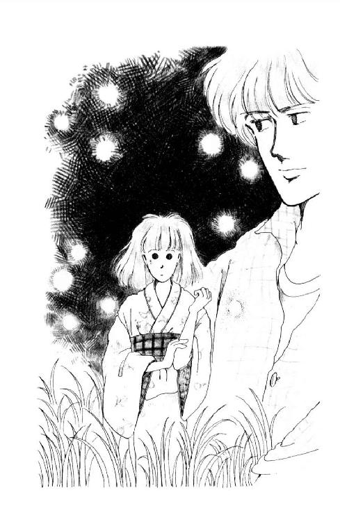
「朱海さん、いったいなんで......!? ぎゃっ!!」
草の中から、朱海さんのもった枝にひっかかって、何かが飛び出してきたっ!!
ぼとっ、と川原に落ちたかと思うと、たちまち、しゅるしゅるしゅっ、て蛇行して、川面を......だ......蛇行!?
へ、へびだぁぁぁぁっ!!
「......ひぇぇぇぇ......」
朱海さんは、ふーう、って大きく息をついた。
「マムシだよ。危なかった。あいつの目は、暗いとこじゃ光るんだ。二つ並んでじーっとしてたら、手なんか出しちゃだめでしょっ!!」
めっ！ って朱海さん、にらんだけど。
そんなこと言ったってさぁぁ......ああ、こ、こ、腰が抜けた。
知らなかったんだもんっ!! 今ごろ言うなんてないよぉ。そんなの、前もって教えておいてくれなきゃ噓じゃない。蛇がいるなんて、蛇がいるなんてぇぇぇ!!
「とにかく嚙まれなくてよかった。......あれ......？ あ、ごめん。怪我させちゃったか」
もう痛くはなかったんだけど、びっくりしすぎて、あのまま延々と肘こすってたのよ。
「ぼくは、いつも、失敗するね」
あわててこするのやめたのに、朱海さんは、なんだかとっても寂しそうにそう言った。
「いつも、ワン・テンポずれてるんだね、きっと」
「そんな......助けてくださったのに」
あ。あたしまだ、ありがとうも言ってない。
手を貸して、ひっぱり起こしてくださる時に、やっともごもご言った。
「ごめんなさい......ありがと...ございました」
「うううん」
朱海さんの声は、あくまで静かで、笑ってる。いつもそうだね。静かで、笑ってて......。
胸の奥が、ぎゅっ、てなった。
「べ、別のことも!!」
「え？」
「別のこともあったんです!!」
「？」
「......あの......ありがと...と...ごめんなさいを言うつもりだったことが......」
「ほんと？ 何のこと？」
ん？ ってあたしの顔のぞきこんだ朱海さんの、黄色いチェックのシャツの胸の上に、蛍が一匹飛んできて、そっと止まって、またたいた。
そぉっと、そぉっと、まるで鼓動のように。
......おかしいよ。
蛍なんてもういっぱい見たじゃない。なのになんで、なんで泣きたくなるの？
あわてて顔をあげると、目が合って......そのまま、そらせなくなってしまった。
だって、だって朱海さん何も言わないんだもん！ あたしだって、あたしだって、何も言えないじゃない、いまさら、言えないじゃない!!
朱海さん、怒ってなかった。何も怒ってなんかいなかったのに。
あたしが勝手に拗ねて、勝手に思い込んで、勝手にヤキモキしてただけ。
その間じゅうずっと、朱海さんはただ、静かに笑っていただけ......。
今みたいに。
胸の蛍が飛び立った。その小さな光の点が軌跡になって、全部朱海さんの目に映る。
ほの明るい光。草の匂い。せせらぎの音。夜。
ちょっぴり首を傾けたハンサムな朱海さんと、みじめったらしく汚れた浴衣のあたし。なぜだか情けなくなってきた。
ああ。そういえば、このひとって『不可侵条約松の上』なんだよね。たいへんなひとなんだよね。
そんなひとがどうしてここにいるんだろう......不思議。
それも、さっきからずっと、何も言わずに、何も聞かずに。
やだ......朱海さん、何を考えてるの？ どうして......どうして、あたしのこと、そんな瞳で見つめるの......？
....................................？
「オーイ、おふたりさーん」
下品な声に、あたしたち、パッ、と離れた。
「あ、ごめーん。お邪魔だったね。いや、たださ、いつまでもそーやってんだったらさ、ほら、これ。貸してあげようと思って」
言いながらうららがぶんぶん振り回したのは。
？ 金色で、丸くて薄くて、煙が出てる......？
蚊......蚊取り線香......っ......！ 携帯用のやつ......。
「あ、お呼びじゃない？ ......いやははははは。こら、どーもどーも。じゃ、まぁ、朱海くん、がんばってねぇ」
振り向くと朱海さんは、拳固を固めてぶるぶる震えてらっしゃった。
帰り道、しばらく行ってから、カゴを放りだして来ちゃったこと、思い出した。
「あー......パパとの約束......」
破っちゃった。......でも、いいや。ほんとは心の中で勝手に作った約束だもの。
これはきっと、神様が、大事な蛍、一匹たりとも迷子にさせないでくれ、って、あたしにメッセージしてらっしゃるんだわ。
いっか、もし今年だめでも、来年でも、パパといっしょにあの川に行けばいいや。
そう思うことにして、カタカタ下駄鳴らして歩いた。
西在家さんちで、麗美さんたちは車に乗って帰っていった。
結局なんだか、トンチンカンだった。麗美さん加奈子さんをお呼びしたのは失敗だったのかもしれないけれど。
とっても楽しかった、って言ってくださったのだから、あまり悩まないでおこう。
麗美さんとはまた、ゆっくりお話しすればいいし。なんならその時、加奈子さんのことも、もっとくわしくうかがえばいい。
トコは『もういい』なんて言ってたけど......ほんとはやっぱり、元気なふりしてるだけだもん。しばらく目を離してて、ふっ、と探すと、ぽつんとひとり立って、ぼんやり蛍、見つめてたりしてたもんな。
でも、今夜は悲しいことは忘れて。楽しいこといっぱいしゃべろうね。
あ。でも。そうだ、もうひとり。杉丸は......？
急いで探すと杉丸は、走っていくベンツのテール・ランプ、目で追いかけて放心していた。
「ねぇ......」
あたしは、動かない杉丸の肩に手を置いた。
「今日はこの際、トコといっしょにうちに泊まらない？ 三人でおしゃべりしようよ」
「あ、ずるい。あたしはぁ？」
と、うらら。
「うららんちはここでしょ」
あたしは冷たく言ったわ。
さっきはなによっ!! 蛇がいるかもしれないとこにあたしが近づいたのに、知らん顔してたじゃないのっ!!
「杉丸は遠くまで帰るの大変じゃない。でも、あたしの部屋狭いから、四人となると、ちょっとねぇ」
ふーんだ。
「あ、ミッキーいじわる！ そんなこと言うと、これ、ほどいちゃうから」
「へ？」
......あ!!
背中に隠してた手、パッ、とあげると。
巾着型に結わえたバンダナを透かして、淡い光がいっぱい、ついたり消えたりしてる!!
「ほ、蛍!! いつのまに!!」
うららはマンガに出てきそうな表情でとぼけてみせた。
「欲しいー？」
「......（くそぉ）......」
「まぁさ。ここで放すも、あんたんちで放すも同じだしぃ。だいたいさ、あんたらだけで、この西在家さんちの深い山の道おりてくの、やでしょー？ あたしがいりゃあ、安心だよ。ここらの地縛霊とはなにしろ長～いつきあいだからね」
「......（ま......またそういうイヤなことをわざわざ思いださせてくれて）......」
「ほんじゃさ、朱海くん。そういうわけであたし、朝帰りするから。悪いけど、そう言っといてくれー」
「ああ」
「ひひひ。うらやましーだろ！」
「......ば、ばかなっ!!」
「ぼくうらやましい......マゼてほしい」
つぶやいたバートさんに、
「きゃは ごめんよー。おあとのだしものは男子禁制!!」
大きなウインクひとつすると、茫然としてるあたしたちの背中で、
「さー行くよ行くよっ!!」
ドンドンドンッ!! と三つ叩いて、うららはさっさと歩きだしたのよ。
怒りの鉄拳
髪を梳かして、リボンの結び目ぴっ、とひっぱって。
寝押ししたスカートは襞がくっきりはっきりしてるし、襟もとまでピンピンに糊をきかせたブラウスは眩しい白さ。おろしたてのソックスをギュッ、と伸ばして、さぁ、できたかな。
イーッ!! 歯もよし。
にこっ ああ......。
いまひとつ、上品さに欠ける。ワザとらしいのよね。
なかなかあのひとみたいには微笑めないなぁ。
その後、バートさんから譲ってもらった原節子さんのお写真をお手本にして『清らかであでやかな美しい日本女性の微笑』を練習しているんだけど。なかなか身につくものではないようだわ。
顔だちが全然違うんだから、そっくり、とまではいかないだろうけど、なんとかあの、一度見たら忘れられない笑顔に近づきたいものだ。
えーと......（と、お手本を見て）不思議なのよねぇ。どうしてこんなにお口を開放的になさってらっしゃるのに、ほかの部分にシワよせがこないの？ あたしなんか、いっぱいに笑おうとすると、ほっぺたはこぶみたいにぽっこりもりあがっちゃうし、顔全体の輪郭が醜いワラジ型になってしまうし、いかにもムリして笑ってるみたいでちっとも美しくな......。
「未来ちゃーん」
あ、いけない。
「遅れますよぉ」
「はーい」
あたしはクロゼットを閉じると、階段を下りた。
とうとう今日から新学期！
自転車の荷台にカバンを結わえるのも久しぶりだなぁ。
せっかくきちんとした制服にドロンコでもつけられると大変だから、と、ママに抱っこされてる羅士丸はふくれた顔でキャンキャン吠えた。
「いってきまーす」
「はい、気をつけて」
海岸沿いの道路から、かげろうがゆらゆらのぼってる。カーブにたまった砂の上、タイヤが滑ると危ないから、ペダル踏む足にいっそう力を込める。
気持ちいい朝!!
わくわくしちゃう。みんな、どうしていたかしら。黒くなったかしら。どんな夏休み、過ごしたのかな？
今日はいっぱいいっぱい話すことがありそうだなぁ。
森戸の商店街にかかるあたりから、徒歩通学のひとがちらほら見えてきた。
あ、あのひと、隣の組のひとだ。体育でいっしょになるから、顔見知りなんだ。
「石野さーん、おっはよー」
「......はん......」
あれ？ 元気ない。
そう思った時には、もう追い越してしまってた。首をひねって振りかえると、石野さん、なんだかお腹でも痛いようなウツな顔して、とぼとぼ歩いてる。
かわいそうに。学校はじまるそうそうアンネにでもなってしまったのかしら？ 具合悪いなら荷物持ってあげればよかったかな。
学校前の坂道を、思い切り勢いつけてぐいぐい登りながら、時々ふりかえってみたけど、石野さんはもう影も形も見えなかった。
「おはよ──っ!!」
教室のドアを開けながら元気よくご挨拶したのに。
期待したお返事はひとつも返ってこなかった。
けっこう早いのにもう登校していた十人ばかりのひとたちは、ちらっ、と顔をあげたぐらいで、またそっぽを向いてしまったの。そっちこっちの机にかたまって、囁きかわしながらペンを走らせている。
宿題の写しっこするのはいいけど、何も始業式の日に学校でやらなくたっていいと思う!!
いつものことだけど、窓は、ところどころだらしなく半分開けただけ。カーテンだってちゃんと寄ってない。
まったく、これが女の子のすることかしら!!
あたしはカバンを置いて、窓を開けにいった。ひとつひとつ、ぴっちり真ん中に合わせて寄せると、ぱあっ、と風が舞いこんで、ほおら、涼しいじゃない。
でもなんだか、机も床も窓の桟も砂っぽいなぁ......せっかく、制服もきれいにしてきたのに......いっちょ、やっちゃうか。
バケツを持って、雑巾持って、お教室を出て行こうとしたら。
「ミッキー、ミッキー」
だるそうな声で呼びとめられた。
「あ、おはよう、奥山さん！ 八木沢さん、浜田さん、末金さんも、おはよ」
みんな、末金さんの席に集まってたの。
「おはよ、はいいけどさ。何すんの」
「何って、お掃除」
「あのねー」
奥山さんは椅子に横座りになって、くしゃくしゃの髪の毛、ガリガリ搔きまわした。
「やめとき。どーせ後でまたすぐ大掃除やらされるんだってば」
「あ。そうなの！ でも、じゃあザッと、せめて教卓ぐらい......」
「あんたねー」
は～あ、ってため息ついて、も、いいいい、って手を振って机に向き直ってしまった奥山さんの代わりに、末金さんが続けたわ。
「ミッキーさ、奥山はね、そういうことすると、あんたがまたひとになんだかんだ言われるって心配してんだよ。そうでなくても、いー子ぶりっことか、わざとらしいとか、思ってるヤツ少なくないんだから」
「............」
......そんな風に思われるなら、そんなに違和感あるのなら、やるべきじゃないような気もしてきたけれど。
いまさら困るのよね。だって、教室じゅうのみんなが、それとなくこっちの様子うかがってる。チラチラ見てるよ。『いったいどうするつもりかしら？』って、興味しんしんの顔で。
ううう。ひっこむならひっこむでタイミングがいるじゃないのぉ!!
バケツ持ったまま、黙って立ってたら、なんだか立たされっこになったみたい......。
「今日はそうでなくてもみんな気が立ってるんだからさー、元気はいいけど、あんま、ひとめにつくほど明るくしてないほうがいいんじゃないの？ 押さえて、押さえて」
「どうして？」
空っぽのバケツ握りしめて、あたしは言った。
「どうして明るくしちゃいけないの？ せっかくの新学期なのよ!! 元気な顔をお見せしなきゃ、ツル先生だってご心配なさるわ！」
「せっかくの新学期......」
四人はこわばった顔を見合わせた。
「これだもんねー」
「こらだめだ。世界が違う」
「そうよ。あたしら庶民とは。ごらんな、あの健康的にヨット灼けした顔を。希望にあふれたあの瞳」
「ちょっと、ちょっと何よっ!!」
あたしはバケツをガンガン蹴とばしながら、みんなのとこに駆けよった。
「なんだってみんな、そんなに暗いのよ？」
みんな、あ～あ、って肩をすくめるの。
「だって今日は九月一日だもん」
「それがどうかしたの？ ......あ......ひょっとして、どなたかのご命日かなんかなの？ あたしが知らない先生とか」
「先公が死んだらお祭りだよ!!」
と、奥山さん。
「あんたってやっぱり変わってるよ、ミッキー。い～い？ 昨日は八月三十一日。今日は九月一日よ。この日とこの日の間には、あたしたち普通の女子中学生にとってはどォーんと両肩に食い込むほどのギャップがあるんだよ。葬式だ命日だって推理はなかなか鋭かった。そーよ、あたしらの夏休みは昨日で死んだの。幸せだったあたしは昨日死んだの。そばでウキウキわくわくされっと、すごーく不快なんだからね。あんたのほうは盆と正月とクリスマスがいっしょにでも来たみたいなおめでたい気分かもしれないけど、せめてこっちに話しかける時ぐらいは『ご愁傷さま』ってノリでいてくんない？」
「ごめん、ミッキー。あたしたちみんな、徹夜明けなの」
小柄でかわいい八木沢さんが、困ったような顔をせいいっぱいにっこりさせて、あたしの手からバケツを取った。
「マッキンの家に集まって、必死で宿題、最後の追い込みしたでしょ。疲れてるのよ」
ポンポン、ってあたしの肩叩いて、バケツしまいにいってくれたの。
そうだ......八木沢さんは補習授業に出ることになってる、って、終業式の日にツル先生が言ってた。お休みの間じゅうもほとんどずっと学校に来てたはず。
ずっと、勉強ばっかりしてたのかもしれない。......あたしがヨット乗ったり、麗美さんに逢ったり、蛍狩りしたりしてる間も、ずっと。
そういうひとが一番やさしかったりするのねぇ......。
「ああああ、かったるー」
と末金さん。
「ちきしょーっ。また毎日あの教師どものきたねー顔見なきゃいけねーのかよー。朝早くから叩きおこされて、ダサいせーふく着せられて、ちんたらちんたらガッコ来なきゃいけねーのかよー!!」
「朝礼はあるし、掃除はあるし」
「すぐ実力テストだべさ」
「げーっ!! あーやだ。吐き気してきた。昨日死ねばよかった。ずーっと永遠に夏休みだったらよかったのにーっ!!」
「でも、そんな......」
口を挟もうとしたら、浜田さんが割り込んだ。
「マッキン、それは言い過ぎだよ」
「そ、そうよ！ ねぇ。もっと積極的に楽しい面を......」
うなずいてもらおうと思ったのに、浜田さんはひときわ苦しげな顔で、
「確かに昨日だって今日のこと思うと、鳥肌が立ってたけどさ。死にたくなったのなんか、せいぜい三十回か四十回程度よ。今日なんかもう、朝から百回は首くくる紐探したわ。この気分にくらべりゃ、昨日はまだ、生きる喜びにあふれてた」
「あ......あ......あなたたちっ......」
眉間がすっかりコイル巻きになってるのが自分でもはっきりわかったわ。
「そっ......そりゃ長いお休みは楽しいわよ。終わってしまったのは残念よ。だけど、だからっていって、そんなに、そんなに否定的に考えること、ないじゃないのよっ!! ヤダヤダって考えるから、なんでもひどく辛く思えてしまうのよ。もっと、積極的に意義ある時間を過ごせるように努力するのが、若者のつとめよっ!!」
「若者のつとめ......」
「積極的に意義ある時間......」
重たい視線があたしをぐるぐる取り巻いた。
「ねぇ。じゃ、ミッキー。なんか、学校のメリット、あたしたちにとっていいとこって、あったら教えてくれる？」
ひどく挑戦的な調子で、奥山さんが言ったのよ。
「......そりゃ......おともだちに逢えるとか」
えーっ、とみんな口々に言った。
「ともだちィ？ 別にガッコじゃなくたって逢えるじゃん」
「逢いたくないヤツに逢っちまうよりか、仲間で集まってるほうがいいもんねー」
「じゃ、じゃ規則正しい生活ができることは!?」
「なんでゴロゴロしてちゃいけないの？」
「あたし、低血圧だから朝は辛いしさー」
「だって、だってっ」
あたしも椅子ひっぱってきて、みんなのそばに座ったわ。
「あたしたちは教養を身につけるために学校に来るわけで、やっぱり基本的に知識を得るってことを楽しもうって姿勢がなくちゃっ!!」
「ふふん」
ずっと黙ってた奥山さんが、光る目をして、あたしのほうにずいっ、と顔を寄せた。
「知識ったってねーミッキー。学校で教えてくれることなんて役に立ちやしないわよ。そりゃなんでもかんでも、知性を磨くのが大好きなヤツだっているわな。ノーベル賞が取れるとか、大発見ができるとか、確かに世の中にはほんとに賢いヤツらだっているよ。でもだったら、ガクモンってもんはそいつらに任しておきゃいいのよ。巻き添えにしないで欲しい。読み書き算数はまぁ最低必要かもしれないけど、あと学校でやることったら、なによ？ 歴史とかさー、物理とか、うわっつらだけ撫ぜてさー、それ知ってるからって、何かになったことある？ せいぜいギャグのねたじゃない。そのうえ『侵略』『進出』じゃないけど、ゴマかしばっか噓ばっか。んーなくだらないことになんでへーこらひーこら苦しまなきゃいけないわけ？ 九年も十二年もぶっつぶしてさ。こりゃもう、もうただ、ぶっつぶすことそのものが目的なんだと見るね。つまり、これは全部親どもの陰謀さ」
「い......陰謀？」
「そうよ。あたしたちに好きなこと考える時間与えるとさ、やばいわけ。自分らがやっとしがみついてきた世の中の仕組みが、ボロボロのガタガタでちゃんちゃらおかしいってことがすーぐバレちゃうからね。だから、どーでもいいこと、テストに出すぞ、って脅かしていっぱい詰めこまして、もの考えたり、本読んだりすんのわざと嫌いになるように仕向けてんのよ。ほんとは自分らだって、やなのよ。今の生活。やたら不自由だ、ってのはわかってんのよ。だけど会社とか家庭とかあるしさ、もう人生やり直しようがないじゃん。だから、これから、のあるあたしたちを嫉妬してんのよ。悔しいから、はじめからやり直しようがないよう、バカになるよう仕向けてんだ。そうよっ!! 学校という名の牢獄は、あたしたち平凡な中学生から、楽しい愉快な貴重な時間を奪うためにこそ存在しているのであるっっ!!」
「でた、奥山女史の大演説!!」
「いいぞ!! いいぞ!! 校長に言ってやれっ!!」
教室じゅうから、歓声と拍手があがったのに、奥山さんは眉間に皺を寄せて、うるさそうに手を振ると、まっすぐあたしを見つめたの。
「......ってことについて。ミッキー、あんた、どう考える？」
「あたし......あたしは......」
あたしはいつの間にか拳固を握りしめていた。
はっきりいって、ショックだ。
すごい。奥山さん、そんなこと考えてたのか。ただなんとなく学校がきらいだ、って言うのかと思ったら、ちゃんと筋、通ってるじゃない。だけど、だけど......。
「あたしは......そんな風に考えたくない。そんな......なんていうか、まるで世の中全体が悪意でいっぱいみたいな風には」
「ま、そうでしょね。おたくは」
奥山さんは、机についた頰杖で、そのままごしごし顔を擦った。
「大事大事で育ってきて、みんなにふかーく愛されてんだもんね。楽観的にもなるわさ。世界がみんなおたくの味方みたいな気分で生きてこれてるんだからほーんと、うらやましいわ。でもね。あんたみたいにツキのいいのがあたりまえだとは、思わないで欲しい。できることならあたしだって、もー少し希望的観測ってもんを持ちたいよ。だけどね、ミッキー。なんかを動かす時の力ってのは善意より悪意のほうが絶対強いんだよ。ちきしょー、とか、くやしー、って時は、クソ力出るけどさ。嬉しい時なんて、あーた、万歳するっしょ。あーよかったって、両手をあげちゃうってことは、これでいい、これでもう、なんもしなくていいもんね、ってことの身体的表現だと思わないか？ こ......こ、これはつまりなぁっ!!」
「きゃっ!!」
だんだん身を乗り出してきた奥山さんは、とうとう立ちあがって、ドンッ!! とばかりに机を叩いたんだ。
「つまり、そこから帰納するとだな、歴史を動かしてきたのは基本的に『このやろう』だった、ってことで、となれば、社会全体が悪意の総体になるのも、たった十四歳のあたしが性悪説に傾いてしまうのも、神国日本二千年の血の記憶がだなーっ!!」
「まー、まー、奥山、奥山」
「どうどうどうどう」
浜田さんと末金さんがふたりがかりで、はぁはぁ言ってる奥山さんの肩を押さえて座らせながら、苦笑いした。
「ごめんよ、ミッキー。こいつ、なんとかいうＳＦ作家にかぶれててさ」
「え......？」
「なんか気にいらんことがあっと、すぐ、世紀末だ、このままじゃ人類滅亡の危機だって興奮するんだわ。昨夜も七回ばかり発作起こしてるから、今日のとこはもうエネルギー切れかと踏んでたんだけどね。甘かった」
............発作............？
「あ、ぼーっとしてる。無理ないよなー。はじめて聞くとドーンとこたえるもんな。本気にしなくていいからね。どーせ、教祖の受け売りなんだから」
「うっさいっっ!! おまえらに、おまえらに、わたしの憂慮憂国がわかるもんかーっ!!」
奥山さんは真っ赤になってそっぽを向いてしまった。
「でも......ほんとにすごくショックなお話だったわ......」
あんな風に考えてみたこともなかった。
特に、特に大人があたしたちを嫉妬してるなんて......だって、だってうちのパパもママも、立派なひとよ。あたしのこと本気で幸せになって欲しい、って思ってくれてる。
さえらおばさまも、安曇野のおじさまも、鶴橋先生もシスター・エルミニアも南部のおじいさんも、うららのご両親もみんなみんな、絶対、絶対そんなひどいひとたちなんかじゃない。
それって、幼稚なの......？
えも......でも......うまく言えないけど......『わぁい』より『クソォ』のほうがパワフルなのは確かかもしれないけど、でも......。
そうよ!!
奥山さん、『悪意』と『怒り』ごっちゃにしてるよっ!!
あたし『悪意』は嫌いだけど『怒り』は嫌いじゃない。ものごとを悲観的に考えたくないって思ってるからって、『怒る』ことを忘れてるわけじゃない。はっきりいって、すぐ怒る。すぐ頭に来る。
いくら『ラッキー』だからって、楽天家だからって、あたしは、あたしは、『ばんざい』しっぱなしの、おバカなんかじゃないもんっっ!!
「まーとにかく、あたしらが、今日はあんまりいい気分じゃないってことはわかってくれたかね？」
ううう、そんなの、そんなのそっちの勝手じゃないかっ!!
悪い気分のひとのほうが多いからって、いい気分のひとまで悪いほうにひきずりこもうなんて、それこそ、それこそ『悪貨が良貨を駆逐する!!』ってことじゃないのよっ!!
なんであたしが、なんであたしがそっちにあわせなきゃいけないのよっ。そんなの、おかしいじゃない。間違ってるじゃない。数で、力で、捩じ伏せられてたまるもんか......。
からだの底のほうから、ぶるぶる震えが起きてきた。そうよ。これよ。これは悪意の怒りじゃない。正義の怒りよっ!! ううううう。どうしてくれよう？
その時。ブラウスの裾、つんつん、ってひっぱられたの。
「？ ......あ、八木沢さん」
「あたし、ミッキーの気持ち、わかるみたい」
え......？
「前は学校来るの、そんなに嫌いじゃなかったもん」
「ほ、ほぉんとお!?」
「うん。お休みが長いと、退屈でさ、はやく学校はじまればいいなぁ、って思ってた」
「ありがと、ありがと、八木沢さん!!」
あたしは八木沢さんの手をとって、ぶんぶん振ったわ。
ほぉらね。こう言ってくれるひとだっているんだからっ!!
「そうよね。学校だって、楽しいと思って過ごせば楽しいところになるのよねっ!!」
「なったこともあったわ」
八木沢さんは、眉毛ハの字にするかわいい笑い顔を見せた。
「小学校の時ね」
「......え......」
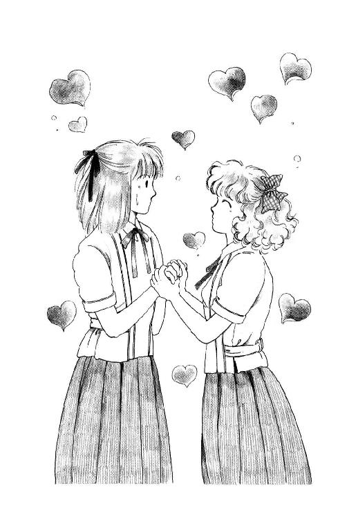
「ああ、ユージくんどうしてるかなぁ......サトルくんは。トシヒロくんは。今日は廊下ですれ違えるかもしれない、ひとめでいいから見れるかもしれない、って思うと、スキップで登校してしまったものだったわ......あのころは。だからっ!!」
八木沢さんは立ち上がって、空中に拳を突き出した。
「だからあたし、絶対、絶対、高校は共学に行くぞーっ!! そのためには、しかたないから、がんばって点数稼ぎするぞーっ!!」
「いいぞーヤギー！」
「うまくやるんだよー。いい男つかまえなよー」
「ひとりくらい分けろー」
八木沢さんは、みんなのヤジに、にこにこおじぎをして座ると、あっけにとられて唾を飲み込んでるあたしの手を、ギュッ、と握った。
「ミッキー、ありがと。あたしが受験なんてうっとうしいものにわざわざトライする決心できたのは、みんなミッキーのおかげよ」
「......な、なんで？」
「だって、ミッキーが教えてくれたじゃない。やっぱりお嬢さまって素敵だわ。華雅学園の魅力って偉大だわ。何も仕掛けなくたって、上玉がホイホイひっかかるんだもん。森戸南じゃだめ。ナンパしてくるのイモばっかよ。凱星、麻武、御成学院から慶鳳クラスの大学に行くお坊っちゃまを狙おうと思ったら、フェリシアは無理としても、せめて聖恵女子かなんかに行っとかなくちゃ。あ、うふ ね、ミッキー、そういうグレードの男の方であまってるひと御存知だったら、ぜひ、紹介してね あたしははっきり言って、玉の輿志願なの」
うわわわわっ!!
押し寄せるの嵐に、思わず目もそらせずにたじたじ腰を引いてたら。
「ミシェール、ミシェールちょっと!!」
いきなり肘をつかんで揺すぶられた。
「あ、杉丸おはよ」
「それどころじゃないわ、ミシェール、逃げて!!」
「に、逃げるぅ!?」
そういえば。
息せき切って走ってきてくれたのか、杉丸の白い額は玉の汗だった。それを手早く、えぐいピンクのバナナ柄のハンカチで拭きながら、杉丸は真剣この上ない目でうなずいた。
「朱海さんの親衛隊と『バーソロミューくんとおともだちになろう会』と、『美少年愛玩くらぶ』のおねえさまがたが、三位一体であんたをつるしあげるって、テニス・コート前で決起集会を開いてんのよっ!!」
「え────っ!!」
あわててみんなで窓に飛びつくと、ほ、ほんとだっ!!
『朱海さま参る』だの『日米親善を楽しい異性交遊で』だのと、凄まじい幟を高々と掲げて、三十人ばかりの女のひとたちがざわざわ揉めているぅ!!
怒声が混じり合って、くぐもったのが、ここまで聞こえてくる!!
「なんだってあんなことっ!?」
「テレビだわ、きっと」
あたしの背中につかまるようにして伸び上がった八木沢さんが、はしゃいだ声でそう言った。
「みんな、やっと気づいたのよ、ミッキーはモテるって。うふ 今ごろ焦ったってだめだよぉだ」
「やっぱ、あの番組はねー」
と末金さん。
「だから言ったっしょ。今日のところは、とにかくめだたないように、おとなしくしといたほうがいいって......思ったとおりだわ」
「『夏休みが終わった忌』だからじゃなかったのぉー!!」
「それもあるけどさ。ありゃハデだったもん。へー、みんなけっこう見てたんだねー。ま、留学生氏が出るって新聞にも出てたしな。それが、いきなりぶちゅー!! じゃねー」
「朱海さんひとりなら『どうせお戯れ、いつか飽きる』ですまないこともないけどねー。かわいいふりして両手に男されちゃったら、はったおしたくなるわ、そりゃ」
わ～～～～ん!!
だからあたし、だからあたし放送しないでって言ったのにぃー!!
「ミシェール......」
わ、杉丸、ま、また寄り目になってるよぉ!!
「テレビって何のこと？ それに、ぶちゅ、とか、両手に男、って......」
「いえその......それは......」
「あんたったら、あんたったらっ!! 洗礼名のある高校生妻路線を清く正しく歩むはずじゃなかったのっ!?」
「いや、だからそれは始めから誤解で......」
「うう......うう......あたしの美学があたしの夢が......はぁ......はぁ......。いいわ。その件に関しては後からじっくり追及させてもらう。とにかく、早く。うららが食い止めてるうちに、逃げなさいっ!!」
「うららが？」
うそっ!! どこに......？
あ、ひょっとして、ひょっとしてあの、とびきりスカートが長い怖そうなおねえさまにつかみかかってるのが......そうだ!!
「やだ......!! うらら、髪の毛ひっぱられてるじゃないのっ!!」
「そうよっ!!」
杉丸はあたしの肩をがしっ、とつかんだ。
「うららったら、うららったら、あのひとたちを見かけるや、なんとかいいわけしてみる、ってあたしにカバン預けて飛んでったのよ!! あんた、それムダにする気っ!?」
「いたた、いた、痛いよ杉丸！」
ノート三枚突き破る強力筆圧の指先が、ぐいぐいぐいっ!! って食い込むんだもん！
「逃げんのよっ!!」
「でも逃げるったって、ほら校門はしっかり押さえられてるよー」
と奥山さん。
「トイレにでも隠れるか。いや、あいつらトイレぐらい蹴破ってくるな。ま、汚い手だけど校長室かなんかに匿ってもらうか......」
「杉丸、放して!!」
あたし、窓枠を押して、飛び出した。
「ミシェール!! 校長室の場所、わかってるのっ!?」
「気をつけなー校舎にもあいつらの仲間がいるよ」
逃げたりできないわっ!!
うららはどうなんのよ？
あたしの、あたしのせいでうららがいじめられてんのよ。あんなに大勢の中に、ひとりぽっちでいんのよっ!!
うららのバカッ!! なんで、なんでわざわざそんなとこに、わざわざそんなとこに。
血相変えて走ってくあたしを、廊下を来るひとたちがあわてて避ける。
え？ なにこのバタバタ？
「待ちな──っ!!」
「逃げるな浅葉未来──っ!!」
......お、追っかけて来るひとがいるっ!!
思ったとたん、足がギクッ、って鳴ったっ!! やだ、痛くならないで。うららのとこまで、走らせて!!
あっ!!
「やりィ!!」
ず、ずるい！ 角で待ち伏せしてるなんて、ずるいっ!!
あわてて迂回しようとしたけど間に合わない！ 尖った爪の細い指が、鷲の足の形に迫ってきた!!
こ......こうなったらっ!!
「えーいっ!!」
「......へ？ あた、あたたたたっ!! 放せ、放せぇ......くくくっ......」
わ。できちゃった!! 痴漢撃退用腕ねじり法!!
「どんなもんだいっ!!」
へなへな膝を折ってしまったひと、思い切り突き飛ばして、階段を飛び下りた。
わぁ、感激。
この技、朱海さんに教わってから、せっかくだからちゃんとマスターして見ていただこうと思って、ぬいぐるみのウサギのエリーちゃん相手に練習しておいた甲斐があったわー。
しかし、痴漢撃退用のはずなのに、教えてくれた朱海さんそのひとと関係あることで使うことになるなんて、思ってもみなかったなぁ......。
「ちきしょ──っ!! 待ちやがれ───っ!!」
いっけないっ!! まだ追っかけてくる！
急ごう。あとちょっと、あとちょっとで一階だ。あとはまっすぐ、玄関に走って、下駄箱に走って......。
あ──っ!!
外履きに変えてたりするひまないじゃないのぉ!! どうしたっておヤバい。追いつかれちゃう！
ひ～ん......あたし、土足って生まれてから一度もやったことないのに～......。また『生まれて初めて』だよぉー!!
「あり？」
あ。ツル先生!!
「浅葉、おまえ、何やったんだ!?」
「すみません、実はうららが......」
ひゅん。
言い終われなかった。そのまま走りぬけようとしたのに。
ドテ──ッ!!
すごい地響き!!
思わずふりむくと、なんだかすごくからだの大きいひとが、ツル先生の真ん前で転んじゃってる!? あごの下になんだか汚いサンダルみたいなのが......。
「おっとすまんすまん。この靴はどーも緩くてな......こっちは......と」
いいながら、ツル先生、さっ！ ともう一方の足を出した。
「ウワアアア!!」
どーん!!
「げぇっ!!」
やっと起き上がろうとしてた大きいひと、上に倒れこんできたひとに、も一度つぶされてしまった。
「あ、脱げた。やっぱ、そろそろ新しいの買うかなー。もう六年目だからなー。おいおい、ごめんな、それさっき便所行ったばっかなんだ」
「こ、この野郎っ!! 邪魔すんなっ!!」
続いて来たひとたちが、怒鳴るのが聞こえた。
ツルさん、ごめん!! あたし、行く！
......わっ!!
「いたーっ!! 見つけたーっ!!」
向こうからも来る!! 挟み打ちされちゃう!!
ここは、ここは......職員室だ!!
ええい、強行突破だ!!
開けたドアがぴしゃーっ!! って凄い音を立てるのも、ゆったり渋茶を飲んでらっしゃった先生がたの間をドタドタ埃蹴たてて駆け抜けるのも夢中だった。あたしはまっすぐ、校庭がわの窓に走った。この下は......この下は......花壇!!
......ひ～ん!!
開いてた窓枠、目をつぶって飛び越えた。足の下で、なにかメキッ、て鳴ったのもふりむかなかった。
お花さんたちごめんなさい！ だけど、だけど、今は。
「うらら───っ!!」
大声で叫んだつもりだったけど、自分でもさっぱり聞こえなかった。校庭も、頭の上の校舎の窓からも、みんなの声でいっぱい。あたしの耳は、ごうごう鳴るだけ。
あっちからも、こっちからも、誰か走ってくる。でもあたしはとうとう、ぐわっ、と膨れてふりむいた人垣に走りこんだ!!
たちまち、あちこちからひっぱられる!!
「こいつ、のこのこ出て来たよっ!!」
「やっちゃえ、やっちゃえっ!!」
「放して!! うららは、うららは」
ぎゅうぎゅう押される！ ブラウスが、スカートがつれる。ぐいっ、て肩をひっぱられたかと思うと、おなかのあたり、皮ごとぎゅっ、てつかまれる!!
「やだ、やめてください......あいたっ!!」「うるせー、でかい面すんじゃねーよ!!」「なんでこんなブスが」やだ、顔はなし顔は「手をついてあやまんなっ!!」何か刺さっ「あたしあやまるようなことしてま」痛!! ......む、胸つかむことないでしょ、胸を！「態度でかいんだよ態度が」「っか媚びやがって」「ればいいのよっ!!」髪の毛ちぎられて、目に何かはいって「なんとか言っ」「やしいやし」見えないのに、せなかなぐるなん「るなも憎」「えれらっど」首が......首が苦し......頭熱......「まやよ」はぁはぁはぁ「りればい」「んだよっ!!」
あ......今の『んだよ』は......あの憎らしい声は......。
「ちょっ！ どきなっ!! こら放せ、ヨメに行けない体にしてやっぞ!! 朱海くんにいーつけちゃうぞっっ!!」
......うらら......!!
とたんに、からだじゅうにかかってた手や腕や爪が、サッ!! とひっこんだ。
ギッ!! って膝が痛くなって気がつくと、あたしは校庭に崩れてた......目が飛び出して、頭がくらくら。耳の奥がキーンって鳴ってる......。
「あれまー。やられたねー。......っとにもう、あんたら、手加減ってもん知らんのかっ!?」
両手ついて、頭下げて、下がってしまった血が戻ってくるのを待つ。あたしのまわりは、急にポッカリ空いて、霞んだ視界の中には、校庭の乾いた土と、まっすぐこっちに来るどろどろに踏まれたバッシュの足しか見えない。
「大勢で寄ってたかってさ、勝負ならサシでしな、サシで！ そーゆー風だから、モテないんだっつーのっ!! ほら、ミッキー」
「だ......だ......」
あたしは四つん這いのまま、首を振った。
まだ息、きれてる。まだ、立てない。
「しよーがねーな、よだれ垂れてっぞ。バカだね。......なんだって、こんなとこに来たりしたんだよ」
「っ......て......おっ......ごっ！ ......あ...あた......」
「あ──わかったわかった」
おしおし、って言うみたいに、うららは背中を撫でてくれた。
「いいから拭きな、そのよだれ」
「いがっ......！」
よ、よだれじゃないっっ!! よ、よだれも少しはあったかもしんないけど、ちゃんとすぐ拭いたもんっ!! これは、これはナミ......。
「いいから。ほら」
くそ。わざと言ってんな。
なによぉ......ほんとは、あたしだってあたしだってハンカチくらい持ってるぞ。うららのみたいにくしゃくしゃのボロいのじゃなくて、ユキ・トリヰの素敵なやつ、おろしたての、ちゃんと持って来てるもんっ!! こんなもの、こんなもの借りると......止まるもんも止まらなくなるじゃないかぁ!!
バカうらら──っ!!
「乱暴したのは詫びてもよいが」
突然、ゾッ、とするような冷徹な声がして、あたしは思わず、ぺたん、てお尻を落として、くしゃくしゃハンカチ押し当てたままの顔を上げてしまった。
腰に届くくらい長い髪をした声と同じ氷のような冷たい顔のひとが『朱海さま命』のハチマキしめて、ブザマなあたしを見下ろしていた。
「それはみなの気持ちだと思う。浅葉とやら。そなた、それだけのことをしでかしていると、しかと実感しておったか？」
「ねー隊長さんさー」
ふうっ、て言ってうららが立ち上がった。
「だから言ったっしょ。うちのバカ兄貴が勝手にこの子気にいってるんだって」
「それが気にいらぬ！」
「んなこと言ったってさー！」
「うらら、そもじは黙っていて欲しい」
ハチマキのひとが、ぶわっ！ と吹いた風に髪をなびかせながら、ゆっくり近づいて来て目の前にしゃがみこむのを、あたしはぼうっとして見つめてた。
......うそ......。
き......きれいだー......麗美さんに、あったかさで劣るけど、顔立ちで言えば少し勝ってるよ。立居振る舞いも、なんとも言えず鋭くて、完璧に手入れされた日本刀みたい......。
ううう。ぞくぞくする。
こ、こんな凄味のある美貌のひとがこの森戸南女学館にもいらっしゃったのか......。
あ、いけないっ!!
こんなこと考えちゃいけな......。
きゃっ。剣美女さんは、無表情のお顔で、まっすぐあたしの目を見つめられた（あ、つい敬語になってしまう）。
うわぁ、まつげながーい。お肌なんて、アラバスターのよう。秀麗とお呼びするのにふさわしい、整いきった目鼻口。
......やだ......こんなきれいなひとに、こんなそばから見つめられるなんて......あたし、あたし......。
わ～ん！ こんな時に非常識なのはわかってるよぉ！ だけどあたし、だってやっぱり美しいおねえさま好きなんだものぉ!! なんだか頰が熱くなって、じっと見つめられてるのが恥ずかしくなって......。
つい！ にへら って、笑ってしまったのよぉ!!
剣美女さんは、一瞬目をぱちぱちさせると、蛾の触角のような眉をわずかによせて、微かに顔をゆがませた。さっきの風にばらけて青ざめた唇にひっかかっていた黒髪の数本がぶるぶる震えたかと思うと、突然吐き出すようにおっしゃった。
「......これがあのかたのご趣味とは......」
「た、隊長!!」
「稲子さまっ......!!」
「しずまれっ!!」
美女さんがサッ、と手をあげると、ざわついたみなさんが、ぴたっ、と収まった。
「......浅葉未来」
「は......はいっ（稲子さまっておっしゃるのね、このかたは？）!!」
「どうやらわたしは、懸想してはならぬおかたに懸想申しあげておったようだ。これがあのかたのご選択ならば、甘んじて受けずばなるまいが......」
そのひとは、静脈の透けて見える華著な手を、すっ、と差し出した。
「立たれよ。ひとつだけ聞こう」
あたしはあわてて、立ち上がった。
「うららはさっきあのように申したが、あれはほんとうか？ それとも、ただの言い逃れなのか？ あのかたは、ほんとうにおまえに......かた、かた......えい！ ......口にするもおいたわしい、ワンサイド・ラブをしておられるのかっ？ まさか、まさかそのようなことはあるまいにっ!!」
「え──っ!?」
やだ。なんで、なんで、そんなこと聞くのよぉ!!
「『え──っ!?』ではないっ!! どうなんじゃっ！」
「わたくしも、伺いたいわ」
「わたしも。この際はっきりさせてもらおうじゃないの」
また出たぁ!! 『美少年愛玩くらぶ』って書いた巨大なおしゃもじ背負ったひとと、いつの間にどこで撮ったのかバートさんの写真まるでお葬式の時使うやつみたいな額縁に入れて、金銀のリボンかけて胸に捧げもったひととぉ!!
「あんたがひょろひょろひょろひょろコトをはっきりさせずに逃げてるから、わたしたちイライラすんのよね、とっても」
「そうよ。こちらとしても、望みのない殿方追いかけてしんどい思いするの、いやだもの」
「そうれ、みい」
剣姫はしなやかな腕を緩く組むと、薄くお笑いになった。
「それでは答えやすいように問うてやる。浅葉未来、おまえは、朱海どのを好いておるのかおらぬのかっ？」
「............（ひ～～～～ん！）............」
「ふん。答えずば、おらぬとみなすぞ。そして、それではあまりにあのかたがお気の毒であるゆえ、......ひっぱたく！ 万一、万一、好いておるというのなら......う、うららっ!!」
「あ～」
うららは、ボリボリ頭を搔いた。
「そもじは、このわたしに噓をついたことになるっ!! それではわたしも、長年朱海どのをお慕いするものたちをまとめてきたものとして、しめしがつかぬ！ だが、そもじはあのかたの妹ゆえ、ひっぱたくわけにはいかないから、やっぱり浅葉をひっぱたくっ!!」
ど、どっちにしろひっぱたくんじゃないか～!!
あ～あ、ってうららが言った。
「よーするに、おたく、妬いてんのね」
「......なんとでも言えっ!! さー浅葉未来。聞かせてもらおうか。おまえ、西在家朱海どのを好きかきらいかっ!!」
あ、ず、ずるい！ さっきは『きらい』なんて単語出さなかったじゃないかぁ！
きらいなんて、朱海さんのこときらいだなんて、そんなこと......っ!!
「答えぬな」
美女さんはすっ、と手をあげた！
「なんとふとどき、なんと高慢！ えーい、おまえはおまえは、ぽっと出の異人さんなぞにしっぽを振ってみせてっ!!」
「......聞き捨てならないこと言うわね......」
バートさんの遺影じゃなかった、真影を掲げたひとがぶつぶつ言った。
「あのかたの気持ちをもてあそびおってっ!! それとも、おまえはあのかたのいつくしみなどいらぬと思うバカなのか？ ならばここで！ いらぬとはっきり、言うてみい!!」
わ～んっ!!
「す、す、好きですっ!!」
あたしは叫んだ。
「朱海さんのこと好きだもんっ!! きらいなんかじゃないっ!!」
「言った......」
うららは、ぴしゃっ、て目を覆った。
隊長さんの手が動いて、ひゅっ、て顔に冷たい風が当たった。あたしは目をつぶって、歯を食い縛った。
いたっ!! いた......あれ？ 痛くない......？ 痛くなるの予想して、痛い、って思っておいたのに......？
こっそり目をあけると、剣美女さんは下唇を嚙みしめて、べそかき顔になっていた。
「......ふ、ふんっ!! いいわよいいわよっ!! どうせそんなことだと思ったわよっ!!」
「......え......」
「みーくんもみーくんよっ!! こんな子のどこがいいんだか『どうもあまり器用な子じゃなくて、みんなとうまくやれるかどうか心配なんだ』なんてさ。『何かあったらよろしくたのむ』なんて......そんなこと、そんなこと言われたら、あたしにっこり『まかしといて!!』って言うしかないじゃないよぉ!! ううううう。いいわ、今日のとこは引き下がるわ。いつの日かきっとあのかたは、正常な美意識を取り戻されて、やっぱりねこりのほうがかーい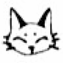 ってふりむいてくださるに決まってるものっ!! うんっ！」
両手を胸に握りしめて、夢みる瞳でおっしゃった稲子さまは、みんなのじと目に気づくとハッ、として急にパッ、と例のクールなご表情に戻られた。
「おまえはもう充分笞打たれた。わたし自ら、手を汚すこともあるまい。みんな、それで文句はないねっ!!」
「......えー」
一拍遅れて、気のない返事が戻ってきた。
稲子さまは一瞬憮然とした表情を浮かべられたけれども、くるっ、と踵をかえすと、また丁度よく吹いてきた風に髪をなぶらせながら、校舎に向かって歩きだした。
「あ......あの......稲子さん？」
いけない、と思った時にはもう、呼びとめてしまっていたんだ。
「......なんだ」
氷のまなざしがあたしを貫いた！
でも。言ってしまったからには、ここでひるんでられないわ!!
「稲子さまのフルネームはなんとおっしゃるんですか？」
「......聞いてどうする？」
稲子さまは、まつげを伏せられた。
「わら人形でも求めて、五寸釘など、打つつもりか？」
「とんでもありませんっ!!」
あたしはぶんぶん首を振った。
「あの......だって、素敵なかただなと思ったから......」
「......!! ......」
あ......やっぱり唐突すぎたかなぁ。
稲子さまは、逆三白眼であたしを見たきり、絶句してしまった。
「すみません......あの、でも、あたし、きれいなおねえさま大好きなんです。今、お慕い申しあげているかたが大学受験でお忙しくて、あまりお邪魔もできなくて、やっぱりちょっと、寂しかったんですけれども......そしたら、そしたら、ああ。こんな美しくて凜々しくて、それに、とってもみんなに尊敬されてらっしゃるかたが近くにいらっしゃったんですねぇ!! 嬉しいです。感激してしまいました。それで、それでもしも、もしよかったら......あの、ほんとにさしつかえなかったらでけっこうなんですけど、お手紙さしあげたいなぁ、文通していただけたらなぁって、思ったんです」
「......ぶ......文通だと......？」
あ、お返事してくださった!!
「はい」
「おまえ、正気か？」
「正気ですよっ!!」
稲子さまは、眉をぴくぴくさせながら黙ってしまった。
......やっぱりだめかぁ......。
「わかりました。どうも、お騒がせして申しわけありませんでした。でも、でも、お目にかかれてとっても嬉しかったです!!」
「あ......浅葉......!!」
稲子さまは髪を撫でながら、ちょっと言い澱まれた。
「む......わたしはこれでもなかなか忙しい身の上でな......文などしたためるひまがあろうかどうか、ちと保証しかねる。が、しかし......おまえのほうから手紙をよこすというのなら、どーしても、というなら......読んでやらぬこともない......」
「え、ほんとですか!!」
「うむ。しかし......」
あれ？ 雪のごとく白かった稲子さまの頰が、なんだかポッ、と赤くなってる!?
「手紙だけだろうな。おまえまさか、その、お慕い申し上げるかたとやらと、肉体関係は......？」
「そんなんじゃありませんっ!!」
「いや、すまぬ。邪念であった。そうか......そんなに感激したか。ふふふ。なるほどなかなかういやつじゃ......みーくんもあれでただのロリコンじゃないのかもなぁ......コ......コホン。わたしの姓は菅原だ。......そうさな、一度、高等部二年Ｂ組を尋ね来よ。あ、あまり派手に、ひんぱんに出入りするなよ。わたしまで変に思われるからなっ!!」
「はいっ！ わかりましたっ!!」
「しっ、しっ。よいから、もうあっちをお向き」
稲子さまは、なんだかぎくしゃくと手を振られた。
「ありがとうございました!!」
おじぎをして、顔をあげると、稲子さまは颯爽と長い髪を肩から放りなげて、お立ち去りあそばされるところだった。か......かっこいー......。
すぐにざわざわ、みんな散らばりはじめた。
あれ？
「うららー？ どこー!?」
きょろきょろ探すと......やだ。うららったら、スカートで地面にあぐらかいてるぅ!!
「うららってば、早く戻ろうよ!! 始業式はじまっちゃう」
「あ～」
のっそりと、うららは立ち上がった。
「やーまいったまいった」
「凄いよ、スカート。あんなとこに座るから」
「......あんただって凄いよ」
わっ、ほんと。埃だらけの、ぐっしゃぐしゃ......あん、ブラウスも。髪も!! リボンなんか、どっか行っちゃったぁ！
せっかく、寝押しして、糊して、アイロンかけたのにぃ。こんなかっこで式に出るのかぁ......。
しょんぼりしてると、後ろからガシン!! って羽交い締めにされたぁ!!
「やっ......うららっ！ なにすんのっ!!」
「ひっひっひ、聞いたぞ聞いたぞぉ」
「え？」
「言ってやろーっと。今のこと。朱海くん、喜ぶぜー!!」
「うっ、うそやだっ!!」
「なんでー」
くいくいっ、て力入れるのっ！
「ミッキーが朱海くんのこと好きだ、ってみんなの前ではっきり言った、って聞いたら兄貴、きっと感動してなーんでも買ってくれるもーん」
「聞かれたから言ったまでじゃないのー！」
「言ったことは言ったでしょーが」
「でもあたし、朱海さんだけじゃないもんっ!!」
「え」
ひるんだうららの手から、急いで抜け出す。
「そりゃないぜー、ミッキー」
「だって。ほんとだもん。麗美さんも好きだし、トコも杉丸も、うららだって好きだわ。あ、そうそう!! 今の稲子さんも素敵ねー......あ。あのひとのこと、後で詳しく教えてね！」
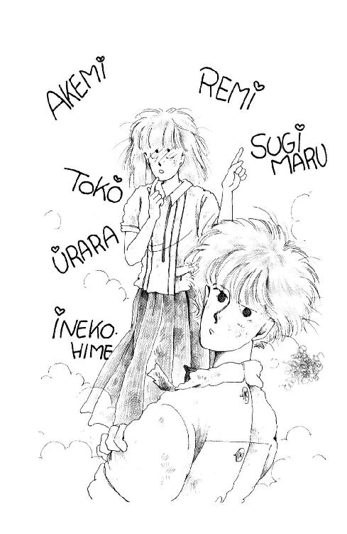
うららは、はあっ、て肩の力を抜くと、ごしごし顔をこすった。手が汚かったのか、おでこや頰や目の上に、校庭の土がかえってついてしまうのに。
「......つまんねー......」
「え？ なんでっ!!」
「だって......ねぇ！ それとこれとは、違うでしょーがっ!!」
「どこが」
「だからー、朱海くんはねー、そういう意味であんたのこと好きだってわけじゃ」
「なんでわかるの？ いくらお兄さんだからって、朱海さんは朱海さんでしょ。うらら、テレパシー使うの？」
「屁理屈だっつーの、それは。あ～あ。あたしにぐらいカマトトぶらなくたっていいだろー」
「なんですってっ!!」
「あによぉ。違うとでも言うのぉ？」
あたしたちが、互いに肩を怒らせて思い切りにらみあってると。
「うらら───っ!!」
頭の上から声が降ってきた!!
「おーい、ミッキー!!」
教室の窓から、杉丸はじめ、奥山さん浜田さんたち、クラスのみんなが、やっほー!! って手をふってるの。
「けがしなかった──っ？」
「けがさせなかった──っ？」
「大丈夫だよー」
「へいきー」
思わず両手をメガホンにして叫んで、手を振ってしまって。
えへへ、ってふたり、気まずい顔を見合わせる。
どちらからともなく肩組んで、玄関に向かって歩きだそうとした時。
「浅葉さん浅葉さん」
あれっ？
「ここ、ここ」
見回すと、職員室の窓。らっきょうを逆さまにしたみたいなお顔にめがねかけたひとが、手招きしてる？
あわてて腕解く時。
「げ。教頭だぜ」
うららが小声で囁いた。
「なんの用だろ、いったい？」
「頼みというのはほかでもない」
らっきょう頭の教頭先生は、大きなデスクの上で、お祈りするみたいに手を組んで、あたしの顔のぞきこみながらにっこりとお笑いになった。
始業式の後、みんなが大掃除してるっていうのに、呼びつけられて。てっきり廊下を走ったり花壇を踏んだり、校庭で大暴れしたこと、叱られるのかと思ったら。
教頭先生は、冷たいジュースを出してくださって、あたしに頼みごとがあるっておっしゃるのよ。
「な、なんでしょう？」
「きみにはぜひ高校でも、わが校に通っていただきたい、いや、いただかねば困る、ということなんですよ」
「......え......」
あたしはあわてて、ジュースを置いた。
「それは......それはどういうことでしょう？」
──つづく──
あとがき
こんにちは。この本をお手にとってくださってありがとうございます。久美沙織です。
『丘の家のミッキー』第三巻の各章タイトルは、お気づきのかたはお気づきでしょう、全部、映画のタイトルです。好きな映画を選んだというよりは、おはなしの内容にふさわしいタイトルのものを探したわけですが。
映画、いいですねー。
一度ぐらい、自分のかいたものをビジュアル作品にしてもらってみたいんですが、残念ながらまだ機会がありません。
実はね、『おかみき』を映画化したい、というお話がかつて一度だけあったんですよ。結局実現しなかったのは、たぶん、「丘の家」にできるようなところがみつからなかったからではないかと思うんですが（当時はＣＧ合成はそんなにすすんでませんでしたし）......ヨットだの香道だの、映画にしようとすると、やたらに莫大にコストのかかりそうな話なんですよね、コレ。コレ以外でも、わたしの書くのって実写はかなりがんばらないと難しいようなもんが多いです。『ドラゴンファーム』なんてアニメ向きだと思うんですけど。だめ？
あ、で、映画化実現せず、の話。そもそも。『おかみき』は「学園もの」であり「家族ドラマ」であると考えるわたしに対し、『渚のラブリー・ヨット』というすごいタイトルであがってきた脚本は全面的に「未来と朱海くんの海辺のルンルン青春恋愛もの」になっていまして、ほとんど「どこが『おかみき』やねん？」でした。いまとなっては、それはそれで観てみたかったような気もしますが、あの頃のわたしには「これじゃ読者のみなさまの大半は、たぶん激怒だなぁ」と思わずにいられませんでした。
実をいうと、堂本光一さまがデビューなさった頃、「ああ、このかたなら、みーくんにピッタシばっちりだった、みんなが納得してくれただろうに、悔しい！」と思ったものでした。藤原竜也さまならまだ間に合うかも？？？
えー。最近ちょうど、とある雑誌のコラムで映画について書かせていただく機会がありました。この巻をチェックのために読み返してみると、ちょうど、そのコラムで書こうとしたことと同じようなことをこの巻で未来がなんだかんだ発言しているので、ビックリしました。かれこれ十五年もたっているというのに、なんて進歩がないんだ（笑）。
以下、そのへんをちょっと書きます。少々まわりくどいハナシなんですが、よろしかったら、ちょいと、おつきあいを。
ちょっと前まで、映画作品は、一般の個人が所有できるような種類の娯楽ではありませんでした。八ミリ映写機や家庭用ビデオが一部のお金持ちのものだった頃には、レンタルビデオ店なんてものはこの世に存在していませんでした。ＬＤが出現する前には、名画ビデオが販売されはじめましたが、一本二万円近くもするというのに、磁気テープの宿命として、どんなに大事にしまっておいても二十年もすると劣化しちゃうとか。
それが、新方式のブロードバンドになれば、家にいながら好きな映画を素早くダウンロードして壁掛けテレビで観るようになるだろう、ってんですから、いやはや。
これは進歩です。確かに気楽だし、便利だし、贅沢です。
しかし。それだけに、映画の「ありがたみ」がどんどん少なくなり、一定基準に達した映画を観た時の「感動」すら、なんだか目減りしているような気がします。
かつて、映画は、「お祭り」でした。都会はともかく、田舎町に暮らすものにとっては、「映画を観ることができる日」というのは、そりゃあもう胸が高鳴るものだったでしょう。どんな映画を観るかをいくつかの中から自分で選ぶことなんてできません。ただ、たまたま誰かがそこらに持って来てくれた作品を観るしかない。わたしの親たちの世代には、学校の講堂や野天の広場に張ったかりそめのスクリーンで映画を観たひとたちだっておおぜいおられました。常設の映画館なんて立派なものは、どこにでもあるものではなかったのね。
そんな時、ひとびとは......特に、こどもたちは、息をつめ、一心不乱に、食い入るように、一瞬たりとも見逃すまいと、全身全霊集中して、「観た」と思うのです。
名画『みつばちの囁き』や『ニュー・シネマ・パラダイス』をご覧になったことがあるかたは、あのこどもたちの瞳を思い出してください。魅入られて、みつめることに熱中して、いっぱいに見開かれた美しい瞳を。
そもそも映画というのは、観客がそれを受け取る一秒ごとに注ぎこまれた情報量が異常に多いメディアです。音と画像と動きの量で言えばテレビも負けてはいませんが、コストや手間のかけかたが違います。ちょっと規模の大きな映画を一本撮るには、何十億単位のお金と何ヶ月へたすると何年もの歳月をかけたりしますからね。ということは、たとえ『みつばち』のアナのように完全に没頭して視聴したとしても、「ぜんぶ」の情報をすべて見逃さず聞き逃さずに受け止めることなどできません。ビデオに撮って一秒ごとにコマ送りにしたり、絵コンテのかたちにバラしたりすれば、ある程度こまかく「研究」することはできますが、それでは、音や動きのダイナミズムを感じ取ることはできなくなります。
映画を観るのは、「人間の脳みその限界を超えた膨大な量のデータの流れに受動的に身をまかせる」ことなのかも。
ただでさえそうなのに、映画そのものが既にほとんど無限といっていいほどたくさんあり、毎年どんどん増えつづけます。レンタルを利用するなり、ペイ・テレビに加入するなりすれば、いつでも見たい時に見たい作品を一本何百円という低価格で観ることができる。それをビデオテープに録画すれば、なんと一時的に「所有」することすらできてしまいます。
そりゃー、少々不真面目に「ながし見」をするようになるの、無理ありませんよね。ＢＧＶのようにかけておいて、チラチラ横目で見ながら、なんか他のことしながら見たりしちゃう。何か食べながら、誰かとおしゃべりしながら、ものを書きながら電話をかけながら家事をしながら見ちゃったりするし、途中でトイレにだって立っちゃう。もし、見逃したところがあまりにも面白そうだったら、ちょっと巻き戻せばいいだけだったりするんですから。
こうなっちゃったら、もう誰も、本気で、真剣に、全力で、観たりなんか、しませんよねぇ。
でも、それは、ひょっとすると、すばらしい宝物を味わい損なっていることなのかもしれない。ものすごく貴重なものだと認識してちゃんと精魂傾けて（？）観れば、きっとみつけられる「なにか」をうっかり見落として見逃して、でも、「いちおー」は観たわけで、本人としては充分観たつもりで、「はい、クリア」「これはもうチェックずみ」「知っとかなきゃならないことは知っちゃった」って思いこんで、そのままあっさり置き去りにして、また別のものに向かっていってしまうことなのかも......。
いつでもまたいくらでも機会がある、あとから何度でも取り返しがつく、という気持ちは、ものごとに対する敬意や真剣さを削ぎます。
留めることのできないもの、出会ったことが貴重この上ない恩恵で、このいまのいまを逃したらもう二度と手に入れられないものなのだと思う時、さりげない何か......たとえば、虹や、雨や、雪をかぶった木立、陽が高くなったら消えてしまうだろう蜘蛛の巣にかかった朝露、たまたま姿をみせてくれた野生の動物たち、燃えている炎、ゲレンデのシュプール、海底の砂の隆起をなぞっていく波のきらめき、そしてそれを誰と一緒に見たか、といったことなどなど......が、素晴らしい経験や思い出になるのと、反対に......。
未来はこの巻で「はじめて」ということにコダワってるでしょう。実は、つきつめて言えばすべての経験は、すべてのひとにとって本質的に「はじめて」なんですよね。似たようなことに出会ったのが二度めだろうと、三度めだろうと、百九十六回目だろうと。だって、それを経験するその時のそのひとは、昨日のそのひとでも明日のそのひとでもありませんから。ひとは毎日いろんなことがらに出会い、ゴハンをたべてウンチをして、からだもこころも少しずつ少しずついらないところを壊して捨ててはセッセと新しく作り直しているものです。人間のカラダの細胞はだいたい七年ぐらいでとっかえられる限りほぼ全とっかえになるそうです。
いまのあなたは、いまより前にはどこにもいなかったし、いまよりあとにもいない。
未来もそうです。一巻めの最初の頃の未来と、この巻の最後のほうの未来なんか、もう全然別人でしょ。この先も、やつはゆっくりと、しかし確実に、変わっていきます。泣いたり笑ったり、「こんな時いったいどうしたらいいのよ？」とわめき散らしたりしながら、いろんなひととものごとに出会って、そのたびに自分を作り変えていきます。
華雅学園という隔絶地域で育った未来は、いわば、常設映画館のない町に住む昔のこどものようなものなのかもしれませんね。必ずしも自分で選んだものではなくても、与えられる経験は、なんでも、高分子ポリマーのようにずむずむ吸収せずにいられない......未来の目を通して、ふつうの女の子の日常に起こりがちなことを語るこのお話の中で、そうでなければ気づかないほどありきたりで目を留めることもなく通りすぎてしまったにすぎなかっただろうことがらまでもがこと細かく描写されていたり、やたらに大袈裟にクローズアップされるのは、このためです。
もう中学生ではないかたがたには、その頃のご自身の気持ちを思い出すよすがにしていただけたら嬉しいし、もしかしてこんな経験をしていたら自分はどうだっただろうと考えてみていただけると嬉しい。なにしろこの巻はほとんどまるごと「夏休み」です。楽しかったですねぇ、夏休み。わたしは夏休みが大好きだったし、いまでも大好きです。おかげさまで、こういう自由業になってしまいましたから、計画的にシゴトをすすめてさえおけば、いつでも自分の好きな時に好きなだけ休めるわけで、「夏休み」をとろうと思えばとれるんですけど......しかも、「宿題」つきの（シメキリという意味で）。でも、やっぱ、あの頃の夏休みとは、なにかが違うよなぁ......。
えー、未来より若いひとや未来と同世代のひとたちには、これから来るたくさんの夏休みにきっと出会うだろういろんなものごとに対して、わくわく期待するきっかけになれたら嬉しいなと思います。そうして、そういう出会いの時、できれば「はい、ひとつクリア」じゃなく、なんとなくの「ながし見」じゃなく、今年の流行だからみんながやってるからとりあえずそろそろ体験してみるべきだから、じゃなく、ほんとうに機が熟するまでじっくり待って、心の底から楽しみにして、いざその時になったら「あっ、きた、このいまのいまがいまなんだぁ......！」と全身でしみじみ味わいつくして、一生忘れないぐらいクッキリと脳みそに刻みこんだりするという決意というか意識というかを持っていただくきっかけになるとね。ほら、せっかくのことだから。......余計なお世話かもしれませんが......。
なお。この巻から登場する「隊長さん」こと「菅原稲子」は、わたしのかつての本名です。結婚して苗字は変わりましたが。自分の名前をつけてやっただけに、わたしには愛着のあるキャラですが、むろん、ルックスも性格も虚構の架空もいいとこですからね。例によって発生してしまったその他の註は、以下の通りです。
（註１） 「日本が沈没」一九七三年、小松左京先生の『日本沈没』が映画化され、評判になりました。日本は太古の昔から地震や噴火に怯え続けていますが、一般大衆に「なんでこの国にはこんなに地震が多いのか」を素晴らしくわかりやすく教えてくださった作品でした。
（註２） 「んだ吉川じゃねー」吉川晃司が『モニカ』でデビューしたのがこの頃でした。八五年一月には武道館でライブもなさっておられます。
（註３） 「クック・ロビン音頭」魔夜峰央先生『パタリロ！』のギャグのひとつ。モトネタはマザーグース。......それはいいんだけど......未来ってパタちゃんを読んでいたんだろうか？ あの素晴らしい世界をちゃんとわかって読んでいたとはあまり思えないなぁ......。
（註４） 「二十年、三十年前の映画」小津安二郎監督の『晩春』が四九年、『麦秋』が五一年、『東京物語』が五三年ですから、二十一世紀を迎えたいまとなっては「半世紀前の映画」というのが正しいですね。
（註５） 『正しい洗濯物の干し方』こないだテレビで観たんですが、梅雨時などの湿度の高い時は、シーツやタオルなどの大物は、なまじまっすぐ揃えて四角に折るより、長方形の角と角を結ぶ対角線付近をななめにかけて、二重になる部分を少なくするほうが早く乾くのでよい、そうです。
毎度申しますが、こんな註が必要なような小説をお読みくださいまして、ありがとうございます。気に入っていただいて、どんどん続きも読んでいただけると幸いです。
久美沙織
★ この作品は１９８５年に集英社文庫コバルトシリーズとして発行され、２００１年に新装・改訂をくわえた平成版が発行されたものです。このあとがきは、平成版のものです。
電子書籍スペシャル対談 久美沙織×めるへんめーかー 第３回
【久】久美沙織・・・「丘の家のミッキー」の作者。
【め】めるへんめーかー・・・「丘の家のミッキー」の挿し絵担当者。
【質】質問者
＜電子書籍化と当時のイラスト事情について＞
【質】今回、「丘の家のミッキー」が電子書籍で復活というところで、どんなお気持ちを持っていらっしゃるでしょうか。
【め】私、過去の作品のどれかが電子化になっているらしいんですけど、どうやら全然売れてないみたいです（笑）。
【久】私はね、まだ自分がKindleとかを使いこなしていないんですが（注・このあと、手にいれてつかいはじめています）、そろそろやりたいなと思っているところでちょうどお話しをいただいたので、これはもうそういう波がきてるんだな、チャンスだ、嬉しいなって思っていますよ。とりあえず今すぐ結果がどうこうというよりも、まず第一歩を始めないことにはどうにもならないだろうなと。いや売り上げも欲しいけど（笑）。「丘ミキ」は10冊もあるものなので、好きかどうかわかんないけどちょっと読んでみようかなーって人がまず手を出してくださるのには、電子化って結構向いているのかなって思ったりします。それに１回データになっていれば、不吉な話ですけど、たとえ将来、紙が滅んでも（笑）、未来永劫残っていくはずですから。アーカイブとして。作品のいのちが永遠になったら、ものかきとして、それはとてもありがたいことですし、うれしいことです。しかも今回のお話では、めるちゃんの絵をね、大切に、なるべくていねいに再現してくださるっていうから。そりゃもうすごい嬉しいなって思いました。
【め】どうもこうも下手だよね。このあいだ家のかたづけしていたら出てきた小学生のときの絵に比べればましだけどね。（笑）
【久】えっ、ぜんぜんそんなことないっつーの。めるちゃんの絵、あらばこそだよー！ 「おかみき」には平成版もあって、そちらには、当時の編集部の意見で今ふうの絵をつけていただきました。その、竹岡美穂さんの絵もすてきだし、そっちのほうが好きだっていう方も......もしかして世代も......いらっしゃると思うんですけど、やっぱり、こっちが原点というか。だって、そもそもめるちゃんと出会ってなかったらこの話は始まらなかったものだからねえ！ ......という話は長いので、あとでしようと思うんですけど。やはりもともとの、発表当時のオリジナルの絵が活かされるのが、何よりだよね。
【め】懐疑的だったよね。漫画の絵を使うってのに。
【久】あっ、そうそう。そうなんです！
【め】あの、その当時、コバルトって漫画じゃなくて、いわゆるイラストレーターさんが描いている表紙ばっかりだったので、なんかあんまり漫画漫画した絵にしないでくださいね？ みたいなことをいわれました。まんがだと、ＰＴＡ受けがよくないので、そのへん、うまくやってください、大丈夫ですよね？ みたいな感じだった。
【久】しっつれいだなぁ......そんなこと言われてたの。ごめんね。新井素子先生の『星へ行く船』が、竹宮惠子先生の絵で、先にあったんですよ。コバルトでも。だけど、ほら前例がちゃんとあるじゃないですかって言っても、でもあれはもともとなんか、学研だったかな、どっかの連載中から竹宮さんの絵でやっていたものだから特別なだけ、って言われちゃって。作家自身がこのイメージだから、このひとの絵でぜひっつってんのに、なんなんだよ、って。私あるとき、どうしても、かがみあきらさんに描いてもらいたくて、大運動をしたら、本当にそれこそ、だってうちは文芸部門なんだからみたいなことを言われて、何言ってんだこのおやじと思って（笑）、編集さんと、ものすごい喧嘩をしたことがありました。ごりおしして、やっと実現させたんだけど。
【め】かがみくんのは、絵もきれいだし。マンガといっても、このくらいならって編集さんも、思いやすかったのかも。
【久】結果がやっぱ出たんですよ、表紙を見て買う人って当時すでにいた。
【め】（かがみさんは）若くしておなくなりになってしまったけど、あの絵には、いまでもすごいファンのひとがいるでしょう。久美さんの本も、うんと貴重なものになったよね。
【久】ほんとだよ。ちなみに『薔薇の冠 銀の庭』という作品です。あー。おもいだした。あの冴子先生が、このタイトルを「すごいわ。いっちゃなんだけど、あんたタイトルだけはうまいわ。ときどきちょっと嫉妬しないこともないくらい」ってめずらしく面とむかってほめてくれたことがある。なつかしいよ。
４巻に続く
くみ・さおり
１９５９年４月30日、盛岡市生まれ。上智大学文学部哲学科卒。Ｏ型。動物占いは「狼」。在学中の79年、『小説ジュニア』（のちの『Cobalt』）に短編デビュー。集英社文庫コバルトシリーズ44冊をはじめ、著書多数。近年の作品は『電車』（アスペクト）、『孕む』（イースト・プレス）など。夫の波多野鷹、多数の犬猫猛禽その他動物と共に軽井沢在住。
イラスト／めるへんめーかー
丘の家のミッキー３
野の百合は暗くなるまで待てないの巻
発行日 ２０１５年４月９日
著者 久美沙織
発行 株式会社クリーク・アンド・リバー社
〒102－0083
東京都千代田区麴町2－10－9
(c) SAORI KUMI 2014